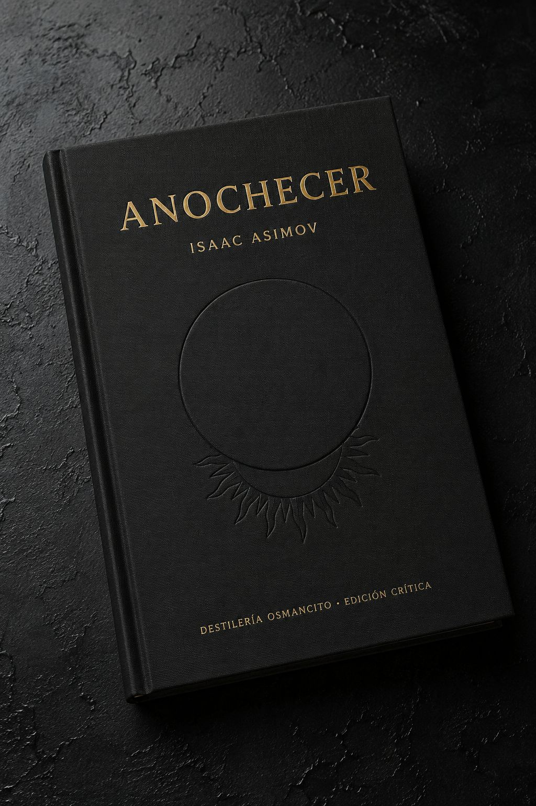
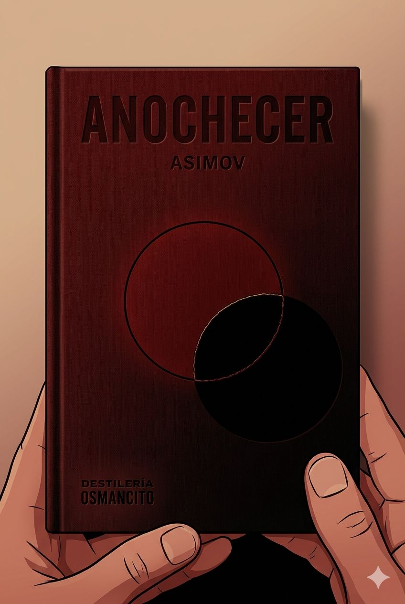
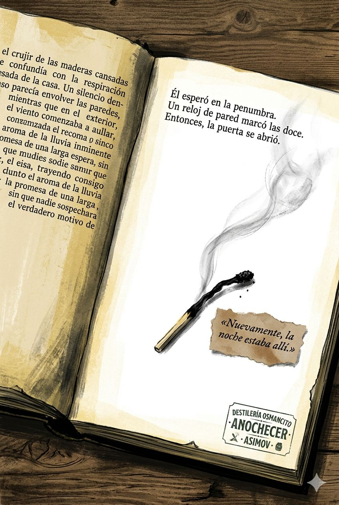
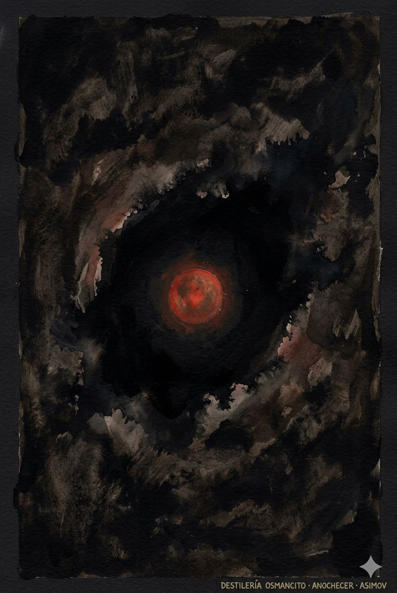
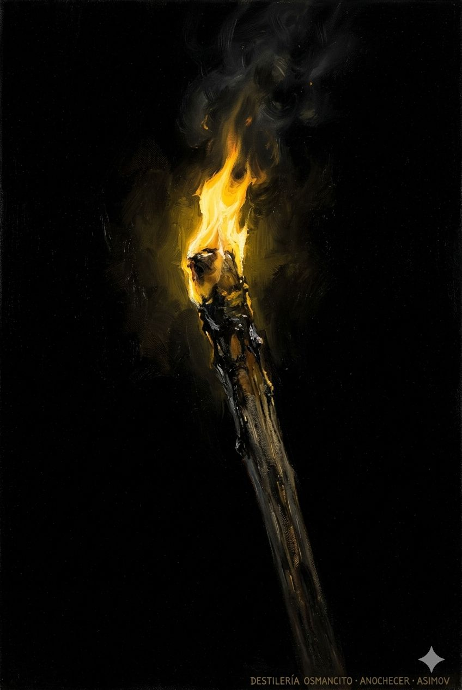
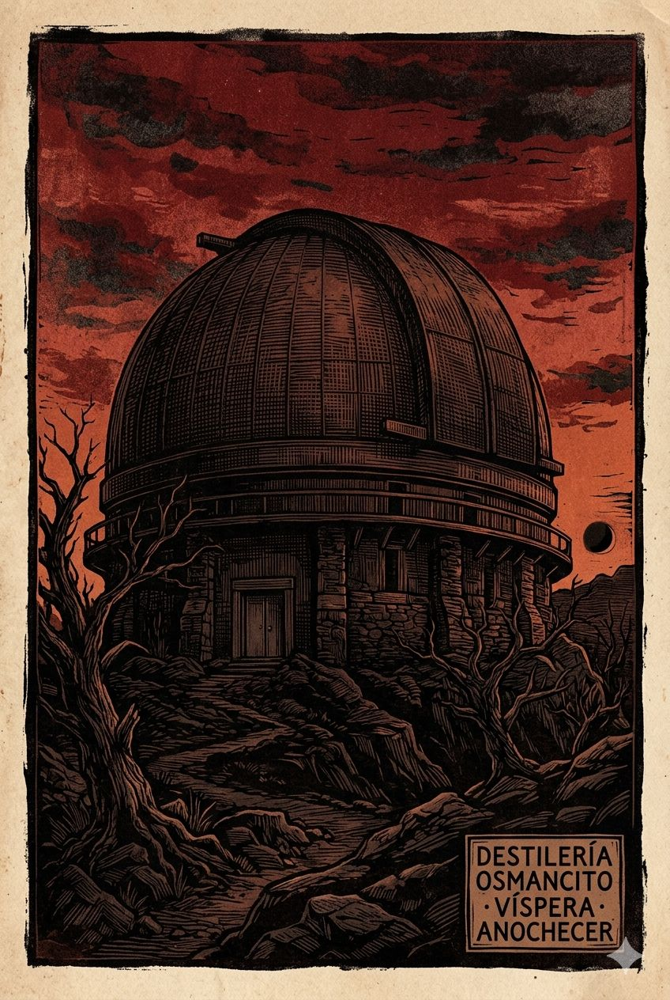
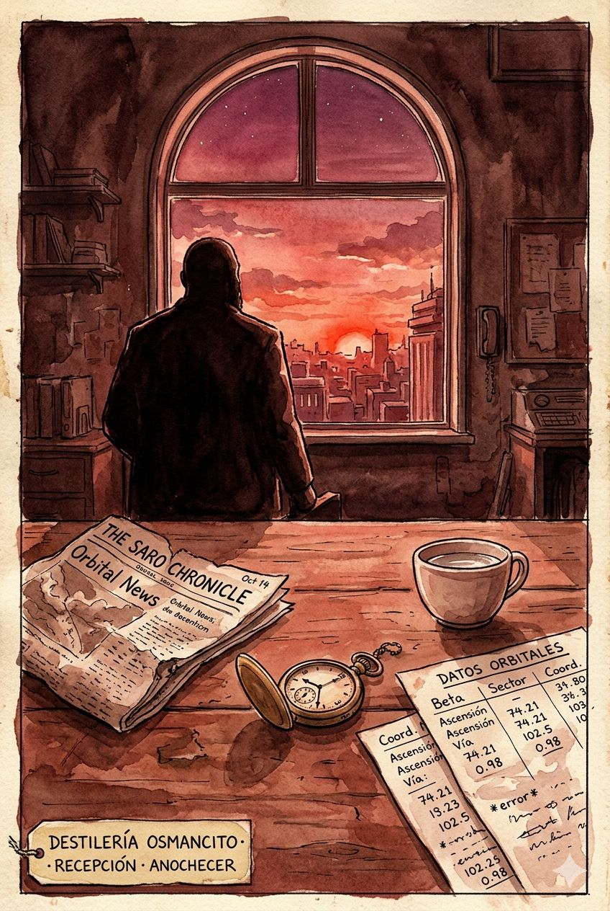
El cuento no trata sobre el fin del mundo: trata sobre la imposibilidad de creerlo antes de que ocurra. Lo que Asimov construyó en 1941 es un mecanismo de relojería donde la ciencia y el mito llegan a la misma conclusión y aun así nadie escapa. La oscuridad, aquí, no es una metáfora —es literalmente lo que destruye la razón— y eso vuelve al cuento más frío y más preciso que cualquier apocalipsis simbólico. Lo que permanece después de leerlo no es el horror de las estrellas: es la imagen de un hombre corriendo escaleras arriba para buscar una antorcha, sabiendo ya que es demasiado tarde.
Un objeto cerrado, denso, con el peso específico de una cuenta regresiva: se nota en la mano antes de abrirse que adentro hay algo que ya no tiene remedio.
Anochecer llega como llegan ciertos instrumentos científicos: sin adorno, con propósito declarado, construido para medir. Pero lo que mide es el límite del cerebro humano ante lo que lo excede. Decir que este texto es un cuento de ciencia ficción de 1941 es correcto y es insuficiente: es también un experimento sobre la condición de saber que algo va a ocurrir y no poder integrarlo. Hay una diferencia entre describir lo que un corpus dice y nombrar lo que es: este corpus es una trampa lógica que se cierra sola, y el lector lo sabe desde el epígrafe.
Título — Anochecer (Nightfall, en el original) Autor — Isaac Asimov Año — 1941 (publicación en Astounding Science Fiction, septiembre) Género — Cuento de ciencia ficción Extensión estimada — aprox. 14.000 palabras · 56 páginas · sin capítulos, relato continuo con separadores tipográficos Idioma original — Inglés Palabra más frecuente con contenido — oscuridad (y sus variantes: Tinieblas, Tiniebla, sombra). Confirma: el corpus declara ser sobre la oscuridad y lo es, pero la palabra trabaja en dos registros que el corpus apenas distingue —fenómeno físico y colapso psíquico. Eso lo expone.
En Lagash, planeta iluminado de forma permanente por seis soles, la oscuridad es desconocida y, según los psicólogos del cuento, insoportable para la mente humana. Un equipo de astrónomos ha calculado que esa noche —por primera vez en dos mil cincuenta y nueve años— un eclipse cubrirá el único sol visible, sumiendo al planeta en tinieblas totales. Simultáneamente, una secta religiosa predice lo mismo en términos míticos. El cuento transcurre en las horas previas al eclipse y en sus minutos finales: el debate, la preparación, la espera y, al cabo, la catástrofe que los científicos predijeron con exactitud y que aun así los destruye.
Theremon 762 — Periodista escéptico, voz del sentido común que funciona como guía del lector dentro del corpus. Aton 77 — Director del Observatorio; inteligencia científica severa; carga el peso de saber. Sheerin 501 — Psicólogo; explica el mecanismo de la locura; voz cálida, casi cómica, sobre un argumento aterrador. Beenay 25 — Astrónomo joven; encargado de fotografiar el eclipse. Latimer — Cultista infiltrado; representa la fe como sistema alternativo de la misma verdad.
Lagash orbita en un sistema de seis soles que garantizan luz perpetua; la oscuridad es para sus habitantes algo conceptual, no experimentado. Los astrónomos de la Universidad de Saro descubren, aplicando la Ley de Gravitación Universal, que hay un cuerpo lunar invisible que producirá un eclipse total cuando Beta —el único sol visible esa noche— sea ocultado. Esto ocurre cada dos mil cincuenta y nueve años. Los registros arqueológicos muestran que cada vez que ocurre, la civilización de Lagash colapsa en incendios y reinicia desde cero. El Libro de las Revelaciones del Culto describe lo mismo en clave mítica: las Estrellas despojan a los hombres de la razón. Los científicos llevan dos meses intentando preparar a la población, sin éxito; la prensa —representada por Theremon— ha ridiculizado el esfuerzo. En las horas finales, Theremon llega al Observatorio y Sheerin le explica el mecanismo: la oscuridad produce claustrofobia extrema; las Estrellas —nunca vistas— suman un estímulo visual sin referencia posible en el cerebro. El resultado es la locura permanente, seguida del instinto de hacer fuego, que quema las ciudades. Cuando el eclipse ocurre, los personajes sucumben uno a uno; Theremon sube escaleras a buscar una antorcha; en el horizonte ya se ve el resplandor de Saro City ardiendo.
El primer contacto produce algo inhabitual: la sensación de leer un mecanismo que ya está en marcha. Anochecer no construye suspenso sobre si ocurrirá algo —lo declara en el epígrafe y lo confirma en las primeras líneas— sino sobre por qué la certeza no sirve de nada. Eso le da al corpus una frialdad particular, casi clínica, que coexiste con un fondo de pavor genuino. El cuento sabe lo que hace: el lector es Theremon, escéptico hasta el último momento, transportado dentro de la sala del Observatorio, esperando lo que ya sabe que viene. Lo que produce antes de ser pensado es eso: la quietud insoportable de la antesala.
Saber no es poder. La ciencia predice el eclipse con exactitud milimétrica. La psicología predice la locura con igual precisión. Ninguno de los dos saberes protege a quien los posee. El corpus trabaja de forma sostenida la pregunta de si el conocimiento tiene algún valor cuando lo que se conoce excede la capacidad de ser integrado.
El mito y la ciencia llegan al mismo destino por caminos distintos. El Culto y los astrónomos describen el mismo fenómeno con lenguajes incompatibles que resultan ser equivalentes. Ninguno de los dos tiene ventaja: los Cultistas enloquecen igual que los científicos. El corpus no resuelve esta tensión —la usa para hacer estallar la jerarquía entre fe y razón.
La escala del universo contra la escala del cerebro. Treinta mil estrellas son, en Lagash, algo que no existe hasta ese momento. El cuento propone que la mente humana tiene un techo físico de lo asimilable: no por cobardía, sino por arquitectura. Lo que hay más allá de ese techo no produce ignorancia —produce destrucción.
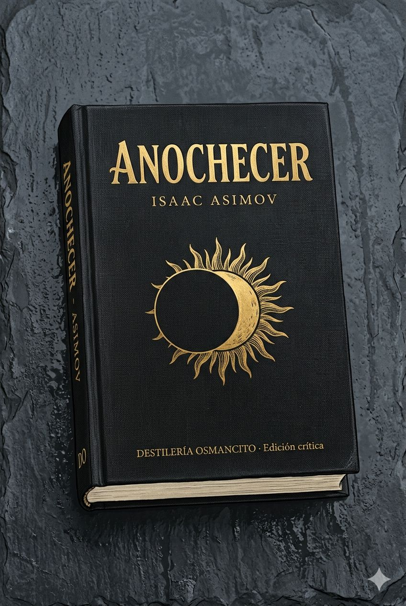
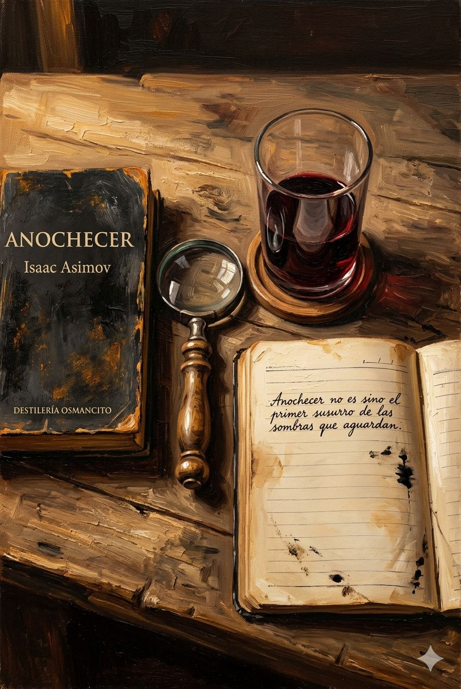
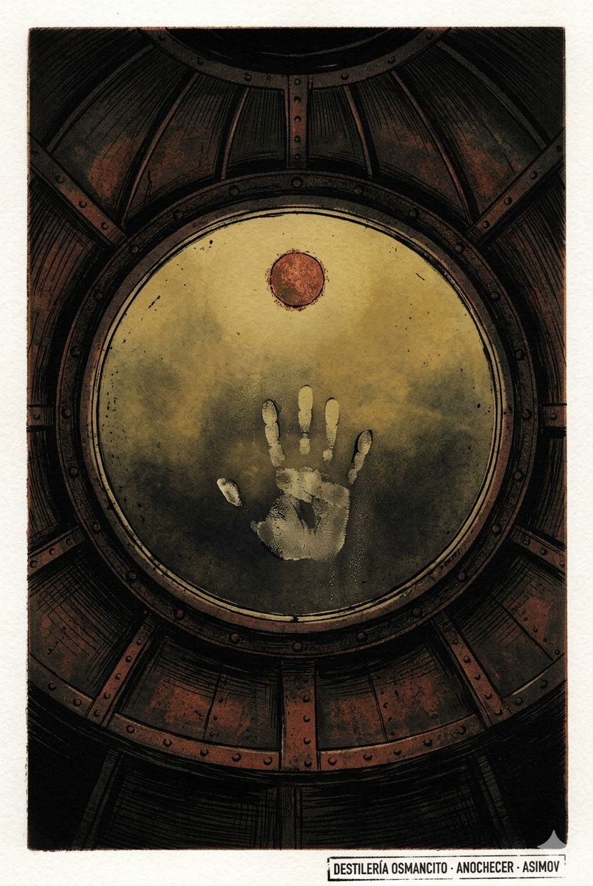
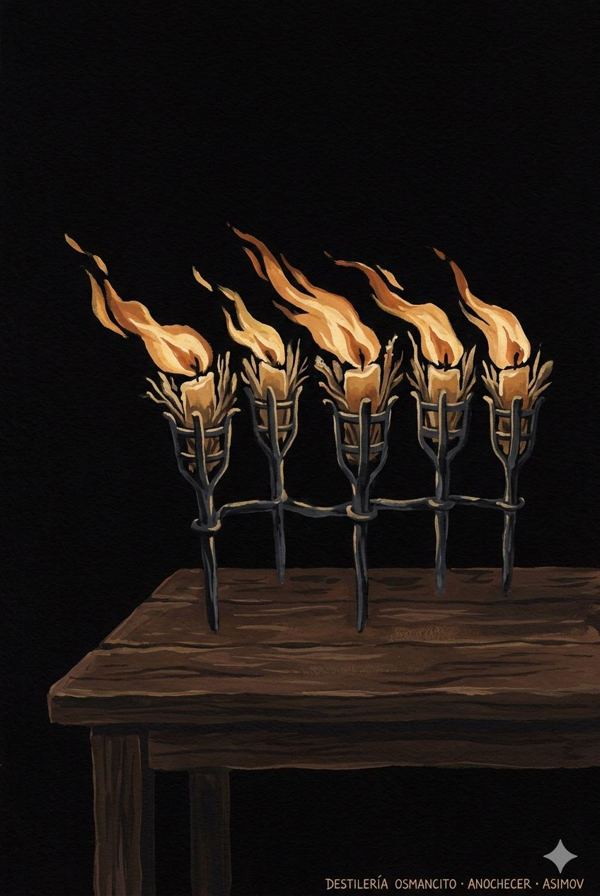
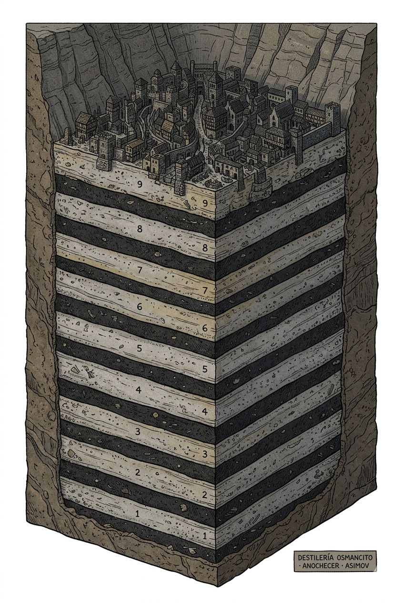
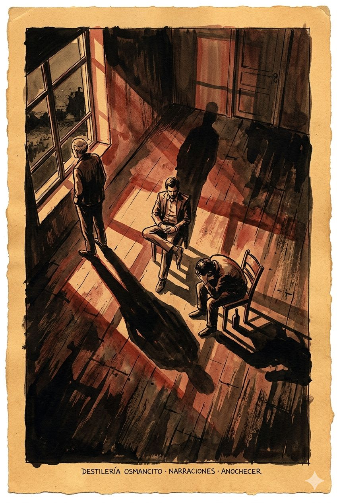
El cuento entero es una cuenta regresiva con cuerpo: cada evento reduce el margen de escape en exactamente la misma proporción en que reduce la luz. Lo que asombra no es el apocalipsis final —anunciado desde la primera línea— sino descubrir que el evento más pequeño del corpus, un hombre que corre las cortinas de una ventana y se detiene en mitad de la sala, contiene ya la destrucción completa en miniatura. Asimov construyó una muñeca rusa donde cada pieza tiene la forma exacta de todas las demás.
[Inicio] — Theremon negocia su presencia en el Observatorio
Qué ocurre — Theremon 762, periodista que lleva meses ridiculizando las predicciones del Observatorio, se presenta ante Aton 77 y propone un trato: si el eclipse ocurre, no habrá artículo; si no ocurre, Theremon asumirá el ridículo en nombre de los científicos. Aton, tras resistirse, acepta.
El giro — Aton, que empieza expulsándolo, lo retiene. No por convicción sobre el trato: mira a Gamma por la ventana y sabe que nunca más lo verá con ojos tranquilos. Lo retiene porque en el fondo ya le es indiferente quien esté ahí dentro.
Intensidad — 38 %
[Inicio, en paralelo] — Llega Sheerin, desertor voluntario del Refugio
Qué ocurre — Sheerin 501, psicólogo de la universidad, aparece en el Observatorio cuando debería estar en el Refugio. Explica su presencia con humor: no sirve para nada allí, y quiere ver las Estrellas.
El giro — Su aparición parece cómica. Solo más tarde se entiende: Sheerin sabe exactamente lo que vendrá y eligió morir —o enloquecerse— mirando. Eso no es cobardía ni curiosidad. Es algo sin nombre.
Intensidad — 42 %
[Primer tercio] — Experimento de la habitación a oscuras
Qué ocurre — Sheerin desafía a Theremon a correr las cortinas de la habitación y caminar hasta él en la penumbra roja. Theremon lo hace, se detiene a mitad de camino, jadea, siente las paredes acercarse. En dos minutos pide que le devuelvan la luz.
El giro — Theremon dice: no me he vuelto loco. Y tiene razón. Pero eso es exactamente lo que lo condena: creer que porque aguantó dos minutos de penumbra roja aguantará la Oscuridad total con treinta mil soles inéditos encima. El experimento no demuestra resistencia; demuestra la escala exacta de lo que Theremon no puede imaginar.
Intensidad — 71 %
[Primer tercio, narrado] — El Túnel del Misterio de Jonglor
Qué ocurre — Sheerin cuenta que en una exposición centenaria construyeron un túnel de una milla sin luz. La gente lo recorría en quince minutos. Resultó ser la atracción más popular de la exposición; también produjo muertos y salidas con histeria. Al final, los visitantes que sobrevivieron se negaban a entrar en ningún edificio cerrado.
El giro — El túnel se cerró. No porque matara gente, sino porque las indemnizaciones resultaron rentables y el espectáculo demasiado popular. La civilización de Lagash tenía un precedente exacto de lo que venía —y lo convirtió en atracción de feria.
Intensidad — 65 %
[Segundo tercio] — Captura e interrogatorio de Latimer el Cultista
Qué ocurre — Beenay descubre a un hombre entre las placas fotográficas destrozadas en la cúpula. Es Latimer 25, adjunto del jefe del Culto, que ha entrado por una puerta trasera para sabotear los instrumentos. Los astrónomos lo reducen, Aton lo interroga, Sheerin lo manipula psicológicamente para obtener su palabra de honor de no actuar.
El giro — Latimer da su palabra. Pero la da porque Sheerin le recuerda que si lo encierran no verá las Estrellas —y un Cultista que no ve las Estrellas pierde el alma. La ciencia retiene al fanático usando sus propias reglas de salvación como cadena.
Intensidad — 58 %
[Segundo tercio] — Comienza el eclipse: Beta mengua
Qué ocurre — Theremon, inmóvil, señala al cielo con el dedo. Beta tiene un mordisco oscuro en un lado. Los astrónomos corren a sus posiciones. Theremon tiembla. Sheerin le pregunta si va a perder el control. Theremon dice que no, indignado.
El giro — Hasta ese momento Theremon no había creído de verdad. El eclipse ya era un hecho intelectual aceptado; ahora es un hecho físico ante sus ojos. El temblor es la primera grieta en el escepticismo, y llega demasiado tarde para hacer nada con ella.
Intensidad — 74 %
[Segundo tercio] — Aton enciende las antorchas
Qué ocurre — Con el eclipse ya avanzado y la luz solar virando al violeta, Aton distribuye antorchas de caña untadas en grasa animal —fabricadas por el Observatorio como tecnología de emergencia— y las enciende ceremoniosamente junto a Sheerin. La sala se llena de amarillo tembloroso.
El giro — Sheerin contempla la llama y dice: nunca antes me había percatado de cuán maravilloso es el amarillo. El psicólogo que pasó meses explicando la locura acaba de sentir por primera vez la necesidad visceral de luz. La ciencia y el instinto han llegado al mismo punto.
Intensidad — 67 %
[Segundo tercio] — Latimer recita el Libro de las Revelaciones
Qué ocurre — Con el eclipse a minutos del total, Latimer comienza a salmodiar en voz baja el capítulo quinto del Libro de las Revelaciones. Sheerin reconoce el texto y le pide a Theremon que escuche. A mitad del recitado, sin pausa, sin esfuerzo, la lengua de Latimer cambia: pasa a un idioma del ciclo anterior, el idioma en que fue escrito el Libro originalmente.
El giro — Latimer no sabe que cambió de lengua. El cambio ocurre solo, como si la memoria del ciclo anterior estuviera grabada en algún lugar más profundo que la conciencia. Theremon escucha y dice que le tranquilizó: sonó como lo que su niñera le contaba. Eso también es un giro —la profecía de la destrucción como cuento de infancia.
Intensidad — 76 %
[Segundo tercio] — Aton recibe el aviso desde el Refugio: la ciudad arde
Qué ocurre — Aton habla en privado con el Refugio por línea directa. Los que están dentro están a salvo; han precintado la puerta. Pero Saro City está siendo devastada: los Cultistas están movilizando masas para asaltar el Observatorio, prometiendo salvación a cambio de destruirlo.
El giro — Aton le dice a Sheerin que la ciudad es la ruina. Sheerin pregunta cuánto tiempo falta. Una hora. La respuesta de Sheerin: no decirles nada a los hombres, que sigan trabajando. El único recurso disponible es la ignorancia administrada.
Intensidad — 69 %
[Final] — Theremon baja a atrrancar la puerta trasera
Qué ocurre — Se oye ruido exterior. La turba de Saro City ha llegado. Theremon y Sheerin bajan a asegurar el edificio. Sheerin colapsa en las escaleras con dificultad para respirar —claustrofobia incipiente—; Theremon sube corriendo, toma una antorcha, baja con ella. En la planta baja atranca la puerta trasera —la que Latimer había forzado— con una tabla improvisada.
El giro — Theremon, el escéptico, es quien salva la situación física con sangre fría mientras el psicólogo que explicó todo colapsa en la oscuridad que describió. El saber no protege; la terquedad momentáneamente sí.
Intensidad — 72 %
[Final] — Latimer rompe su palabra: ataca a Beenay en la oscuridad total
Qué ocurre — Con el eclipse total consumado y la cúpula en tinieblas apenas rota por las antorchas, Latimer se levanta. No puede no hacerlo: las Estrellas están llegando y su fe le exige estar presente. Se lanza hacia Beenay, que está sobre su cámara. Theremon lo intercepta en el suelo y lo inmoviliza. Mientras forcejean, la última luz de Beta desaparece.
El giro — Latimer rompió su palabra de honor —su salvación prometida— para cumplir su deber religioso. Pero la palabra fue dada bajo coacción psicológica, no por voluntad. Sheerin ganó el argumento; Latimer ganó el acto. Y en el momento exacto del forcejeo, el eclipse se completa: nadie gana nada.
Intensidad — 85 %
[Final] — Las Estrellas. La locura. Saro City ardiendo.
Qué ocurre — Theremon se aparta de Latimer y mira por la ventana. Treinta mil soles brillan en la oscuridad absoluta. Su mente empieza a ceder. Aton llora como un niño en algún lugar de la sala. Theremon gatea hacia las antorchas pidiendo luz a gritos. En el horizonte, el resplandor que crece no pertenece a ningún sol: es Saro City.
El giro — No lo hay —y esa es la estructura más brutal del evento. No hay inversión. No hay salvación de último momento. No hay lucidez preservada. Lo que el corpus prometió desde la primera frase, ocurre exactamente como fue prometido. El giro es la ausencia de giro.
Intensidad — 97 %
Continente.
Las narraciones son el territorio principal de Anochecer. El argumento científico —la mecánica orbital, la psicología de la claustrofobia, la historia del Culto— no rodea los eventos: los prepara con la precisión de quien arma un mecanismo antes de accionarlo. Cada explicación es la carga; cada evento es la detonación. El corpus podría despojarse de toda la teoría y quedarían diez eventos en línea directa hacia la oscuridad. Pero sin la teoría, los eventos perderían su temperatura particular: la del conocimiento que no sirve de escudo.
Lo que hace singular a este continente es su topografía: no hay eventos secundarios. No hay digresiones narrativas que alivien la presión. Todos los eventos, incluidos los aparentemente menores —la habitación a oscuras, el experimento fallido de Faro, la botella de licor escondida de Sheerin—, son el mismo evento reducido o ampliado. El corpus es un continente con un solo río que desemboca una sola vez.
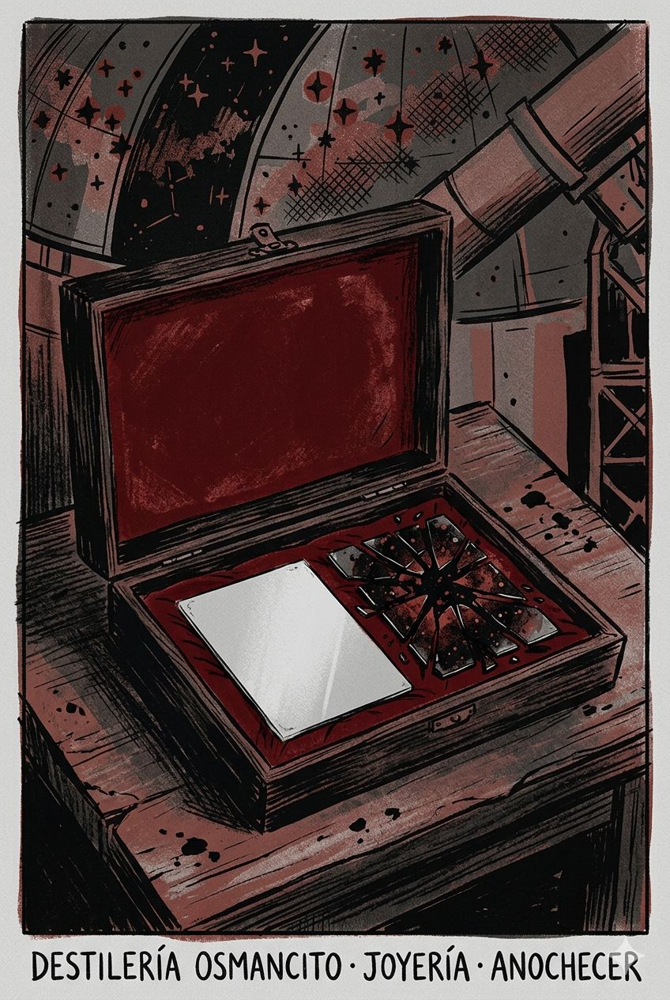
Nota de estructura: el corpus es un relato continuo sin divisiones de capítulo. Se opera sobre él como un único estuche, identificando los movimientos internos que el instrumento habría aplicado capítulo por capítulo. Los movimientos son cinco: la negociación, la instrucción, el experimento fallido, el Cultista, y el eclipse.
La joya más perfecta de este corpus no está en el apocalipsis: está en el psicólogo que, al encender una antorcha de madera untada en grasa animal, dice que nunca antes había notado cuán maravilloso es el amarillo. Sheerin pasó meses explicando con precisión clínica por qué la oscuridad volvería locos a todos, y en el momento en que la oscuridad empieza, lo que le ocurre no es el terror que predijo sino el asombro ante la luz que siempre tuvo. El corpus guarda su mejor revelación para quien menos la espera: no el fin del mundo, sino la primera vez que alguien en Lagash entiende lo que es una llama.
“La civilización llegará a su fin. Escriba eso.”
La tensión se abre con una imagen casi absurda: un periodista que ridiculizó durante meses una predicción apocalíptica pide permiso para presenciarla, y el científico que la formuló, furioso, a punto de echarlo, se gira hacia la ventana y cambia de decisión. El movimiento no va hacia el conflicto que parece anunciar —Aton contra Theremon, fe científica contra escepticismo periodístico— sino que se desvía inmediatamente hacia algo más extraño: la negociación entre dos hombres que, en el fondo, ya saben que el trato es irrelevante. Si el eclipse ocurre, no habrá artículo ni nadie que lo lea. Si no ocurre, el trato protege a Aton del ridículo. Pero Aton ya sabe que ocurrirá. El trato cierra con Aton aceptando la presencia de Theremon no por convicción sino porque miró a Gamma —el sol más brillante— y supo que nunca más lo vería con ojos tranquilos. Indiferencia ante el mañana como forma de cortesía.
“Un psicólogo gasta más que gana en el Refugio”
Sheerin irrumpe y el movimiento cambia de temperatura. La tensión que se abre no es nueva —es la misma cuenta regresiva— pero arranca desde otro ángulo: un hombre que debería estar a salvo eligió no estarlo, y da explicaciones cómicas. La trayectoria del movimiento finge ser humor y es en realidad una declaración de posición ante la muerte: Sheerin no tiene utilidad en el Refugio, y donde uno no tiene utilidad no merece el espacio. El movimiento no cierra con una explicación más satisfactoria. Cierra con Sheerin sentado en su silla, gordo y satisfecho, diciendo que se siente mejor aquí. Suicidio sereno disfrazado de comodidad.
“Imagine ahora las Tinieblas… por todas partes”
El movimiento más largo del corpus. Sheerin instruye a Theremon —y al lector— sobre la mecánica exacta de lo que viene: el ciclo arqueológico de civilizaciones destruidas, la luna invisible, la gravedad como herramienta de predicción, la claustrofobia como precursor de la locura. La trayectoria escala sin desviarse: cada explicación es más grande y más imposible de integrar que la anterior. El movimiento se bifurca brevemente cuando Sheerin reta a Theremon a correr las cortinas —y Theremon no puede cruzar la habitación en penumbra—, pero el núcleo no es ese experimento sino la pregunta que lo precede: ¿puede usted concebir la Oscuridad total? La respuesta de Sheerin a la afirmación de Theremon —¡Miente usted!— es el cierre. El movimiento termina no en información sino en la declaración de que hay cosas que la mente no puede imaginar aunque las entienda. Límite epistemológico como temperatura.
“El Culto tiene mayores motivos que ustedes para odiarnos”
Latimer, capturado en la cúpula, produce el movimiento más tenso por su brevedad: en pocas páginas colisiona la fe y la ciencia, y el corpus los hace llegar al mismo lugar —la certeza del eclipse— por caminos que se repelen. La trayectoria es la del interrogatorio: Aton intenta establecer la deuda que el Culto tiene con la ciencia; Latimer responde que la ciencia blasfemó al convertir lo sagrado en fenómeno natural. La tensión no resuelve la disputa —la suspende, cuando Sheerin usa la teología del Culto como herramienta psicológica para extraer la palabra de honor de Latimer. La ciencia manipula la fe mediante la fe misma. Tensión abierta, porque Latimer —al final— la romperá de todas formas. Ironía estructural.
“¡Luz!”
El movimiento final es el más corto en palabras y el de mayor peso. Arranca cuando Beta mengua y Theremon se queda blanco. Viaja a través del encendido de las antorchas, la recitación de Latimer, el aviso de la ciudad ardiendo, la barricada improvisada, el forcejeo en la oscuridad, y termina en Theremon gateando hacia una llama mientras Aton llora como un niño y en el horizonte Saro City arde. El movimiento no gira —llega exactamente donde dijo que llegaría desde la primera frase. La única torsión es interior: Theremon sabe que se está volviendo loco mientras ocurre, y esa conciencia simultánea —la locura observándose— es lo que el corpus guardó para el final. Terror lúcido.
Veredicto del estuche: un cuento que no construye suspenso sino densidad; cada movimiento añade peso a la misma caída, y el estuche completo funciona como una cámara de compresión donde la presión no tiene salida.
En el Observatorio de Saro, en las cuatro horas antes del fin de una civilización, un periodista escéptico y un psicólogo jovial se sientan en sillas cómodas y hablan. Eso es, en su mayor parte, lo que ocurre en Anochecer: dos hombres hablan.
Y sin embargo el corpus entero es una máquina de presión porque lo que dicen instala en el lector, con precisión quirúrgica, la exacta escala de lo que ninguno de los dos podrá resistir. Sheerin explica la claustrofobia, el ciclo arqueológico, la luna invisible, la gravedad como predicción; Theremon escucha, duda, resiste, pregunta. El intercambio parece didáctico —y lo es— pero su función real no es informar sino medir. Cada vez que Theremon entiende algo nuevo, el lector mide cuánto espacio queda entre esa comprensión y la oscuridad que viene. El espacio se reduce con cada página.
Lo que importa para el corpus entero es que esta conversación es su estructura profunda. Anochecer podría haberse escrito desde el exterior —la turba, la ciudad, el caos— y habría sido un relato de catástrofe convencional. Asimov lo escribe desde el interior de una sala, con cortinas, con una botella de licor escondida bajo la ventana, con un psicólogo que pesa demasiado para ser útil en el Refugio. Lo que produce esa elección es algo que ninguna descripción del apocalipsis puede dar: la certeza de que cuando llegue, llegará también aquí, en esta sala, a estas personas específicas que acabamos de conocer y que no son héroes.
Theremon es el lector. No porque sea simpático o admirable —es arrogante, cínico, y tiene la clase de valentía fácil del que nunca creyó que algo malo pudiera ocurrirle— sino porque es el único que llega sin saber. Sheerin sabe. Aton sabe. Beenay sabe. Latimer cree con una certeza que es equivalente al saber. Theremon es el que necesita que le expliquen, y esa necesidad es la que sostiene el relato. Cuando Theremon tiembla al ver menguar a Beta, es la primera vez que el lector también tiembla, porque Theremon era la última línea de resistencia del escepticismo y acaba de ceder.
El corpus dice algo sobre la naturaleza humana que es más difícil de sostener que el apocalipsis mismo: que saber con exactitud lo que viene no cambia lo que ocurrirá cuando llegue. Los científicos predicen la locura y enloquecen. El psicólogo describe el terror y lo siente. El periodista escribe el artículo que nadie leerá. El conocimiento no es protección —es, como mucho, la posibilidad de nombrar lo que te destruye mientras ocurre.
El trato que ninguno de los dos necesita
Theremon propone el acuerdo con toda la frialdad de alguien que ha negociado entrevistas imposibles a cambio de huesos rotos: si el eclipse ocurre, no escribirá nada; si no ocurre, asumirá él el ridículo. Aton escucha, rechaza, se gira hacia la ventana, mira a Gamma declinar en el horizonte, sabe que nunca más lo verá con ojos tranquilos, y entonces dice: no, espere, venga, le daré lo que quiere. No porque el trato le convenza. Porque ya no importa quién esté dentro del Observatorio cuando Beta desaparezca. Lo que el gesto de Aton revela —sin nombrarlo, sin explicarlo— es que hay un punto en que la certeza de la catástrofe produce indiferencia hacia cualquier cosa que no sea la catástrofe misma. Aton acepta a Theremon como acepta el frío que ya siente en el edificio: como parte del paisaje que queda.
La lógica del hombre inútil
Aton le pregunta a Sheerin por qué cometió la negligencia de presentarse en el Observatorio cuando debería estar en el Refugio. Sheerin responde con una aritmética impecable: allí se necesitan hombres fuertes y mujeres que puedan criar niños; él pesa demasiado para lo primero y no tiene aptitudes para lo segundo; una boca más que alimentar no compensa nada. Prefiere estar aquí. Se acomoda en la silla. El argumento es perfectamente razonado y perfectamente falso —nadie elige morir porque sobra en el inventario de supervivientes. Sheerin eligió quedarse porque quería ver las Estrellas, y eso lo dice también, con la misma voz con que diría que prefiere el café sin azúcar. El corpus no comenta la decisión. La deja ahí, sin amplificarla: un hombre que decidió con total serenidad quedarse a ver lo que lo destruiría, y que lo explica en términos de utilidad marginal.
Lo que el cerebro no puede forjar
Sheerin le pide a Theremon que imagine la oscuridad total: las casas, los árboles, los campos, el cielo, todo convertido en mancha negra y vacía. Theremon dice que sí, que puede imaginarlo. Sheerin responde: ¡Miente usted! No puede concebirlo, no es capaz de hacerlo. Su cerebro no puede forjar semejante panorama, como tampoco puede forjar lo infinito ni lo eterno. Y añade que una fracción del pensamiento puede intentarlo, sufrir sus consecuencias especulativas; pero que cuando lo objetivo ocurra, el cerebro humano no podrá abarcar lo que excede su comprensión, y enloquecerá completa y permanentemente, sin opción. El pasaje no es una predicción —es una definición del límite arquitectónico de la mente. Lo que lo vuelve insoportable es la precisión: Sheerin no dice que la gente tendrá miedo, ni que sufrirá, ni que morirá de pánico. Dice que enloquecerá de forma permanente porque habrá visto algo que el cerebro humano no fue construido para ver. La locura no como emoción sino como incompatibilidad de formatos.
La habitación a oscuras
Sheerin desafía a Theremon a correr las cortinas y caminar hacia él en la penumbra. Theremon acepta con condescendencia. Las cortinas caen. La luz roja desaparece. Los pasos de Theremon resuenan; luego se detienen. No puedo verlo, señor. Siga, dice Sheerin. No puedo ver nada. Los pasos vuelven, vacilantes. Theremon llega y se sienta. Sheerin pregunta si le gusta. No, nada. Las paredes parecen acercarse. Pero no me he vuelto loco. Sheerin le pide que abra las cortinas. Theremon corre hacia ellas con pasos precipitados, y cuando la luz roja vuelve, suelta un gemido de alegría mientras mira fijamente al sol. Entonces Sheerin dice, con el índice extendido: Fíjese que ha sido sólo una habitación a oscuras. Theremon responde, satisfecho: Sí, con una habitación a oscuras sí podríamos. Ahí está la joya: no en el experimento sino en la conclusión errónea que Theremon saca de él, con toda la seguridad del que acaba de probarse a sí mismo algo. La diferencia entre una habitación en penumbra roja y la oscuridad total con treinta mil soles desconocidos encima es precisamente lo que Theremon acaba de demostrar que no puede concebir.
La palabra de honor que vale por el alma
Sheerin necesita que Latimer prometa no sabotear nada más. Aton quiere llamar a la policía; Sheerin lo disuade. En lugar de coercionar al Cultista, le recuerda con suavidad lo que significaría, según el credo del propio Culto, no ver las Estrellas cuando aparezcan: la pérdida del alma inmortal. Si lo encierran, perderá su salvación. Por lo tanto: ¿no dará su palabra? Latimer cede. El pasaje no tiene grandeza retórica ni violencia. Sheerin habla en voz baja, casi con amabilidad, explicándole al Cultista que la única manera de que no lo encierren es que prometa no actuar, porque de lo contrario lo encerrarán y se condenará para siempre. Es la manipulación más limpia del corpus: usar la fe del adversario como cadena, sin quitarle la fe. Latimer da su palabra, y añade con rencor que se consuela saber que todos quedarán condenados. Tiene razón en lo segundo. En lo primero, no aguantará.
El amarillo
Con el eclipse avanzando y la luz virando al violeta, Aton distribuye antorchas fabricadas por el Observatorio —núcleo de caña, grasa animal— y las enciende junto a Sheerin con la solemnidad de quien ejecuta el más sagrado de los rituales. Las llamas vacilan y luego se hinchan. La sala se llena de resplandor amarillo tembloroso. Y Sheerin, el psicólogo que pasó meses describiendo con exactitud científica cómo la privación de luz destruye la mente, que entró al Observatorio porque quería ver las Estrellas, que escogió quedarse donde no era útil para presenciar el fin, extiende los brazos hacia la antorcha más cercana y dice, extasiado: ¡Hermoso! ¡Hermoso! Nunca antes me había percatado de cuán maravilloso es el amarillo. El corpus no comenta esto. No necesita hacerlo. En esa frase, el hombre que más sabe sobre lo que viene reconoce por primera vez algo que siempre tuvo y nunca vio. El apocalipsis, en su fase previa, produce un solo regalo: la visión de lo ordinario.
Lo que Theremon sabe mientras ocurre
En los últimos párrafos, con el eclipse total consumado y treinta mil soles desconocidos brillando por la ventana, Theremon se pone en pie. Su garganta no deja pasar el aliento. Todos sus músculos están en terror. Y él sabe que se está volviendo loco. Sabe que lo sabe. Alguna parte de sí mismo que aún conserva un mínimo de cordura lucha por escapar, pero también sabe que en un minuto esa parte habrá cedido. Así lo describe el corpus: era verdaderamente horrible volverse loco y darse cuenta de ello… saber que en apenas un minuto, a pesar de conservar la presencia física, la mente se ha internado en las vastas regiones de la demencia. No es el horror de perder la razón. Es el horror de observar en tiempo real cómo se pierde, con la razón todavía suficiente para nombrarlo. La joya no está en el apocalipsis sino en ese intervalo de segundos en que Theremon es simultáneamente el que enloquece y el testigo de su propia locura. Es la última cosa que el corpus le permite hacer como ser consciente: registrar su propia extinción.
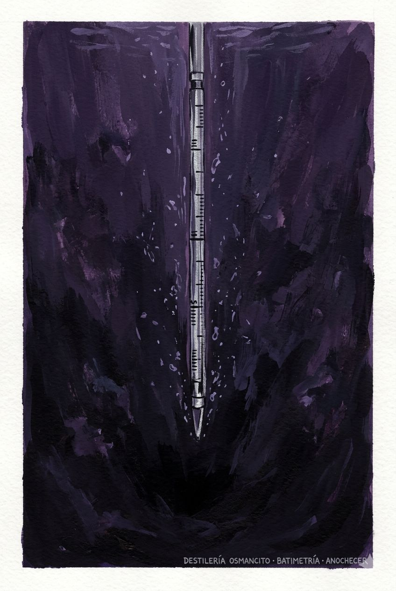
El corpus tiene una sola capa visible y muchas capas que operan en silencio. Lo que está en la superficie —el eclipse, la mecánica orbital, la locura colectiva— es preciso y declarado: Asimov no oculta sus argumentos. Pero debajo de esa transparencia hay algo que el texto nunca llama por su nombre: la epistemología como tragedia. No el fin del mundo, sino la demostración de que el conocimiento es incompatible con la experiencia cuando la experiencia excede cierto umbral. Eso está cifrado en cada conversación, en cada experimento fallido, en cada personaje que sabe exactamente lo que viene y no puede usarlo. El corpus habla de oscuridad; lo que entierra es una pregunta sobre para qué sirve saber.
Vivo — en superficie, accesible sin mediación
Sepultado — presente pero cubierto por extensión o rodeo
Cifrado — opera sin nombrarse, acceso solo oblicuo
Borrado — dejó huella sin quedarse
Ausente — no está y no dejó marca
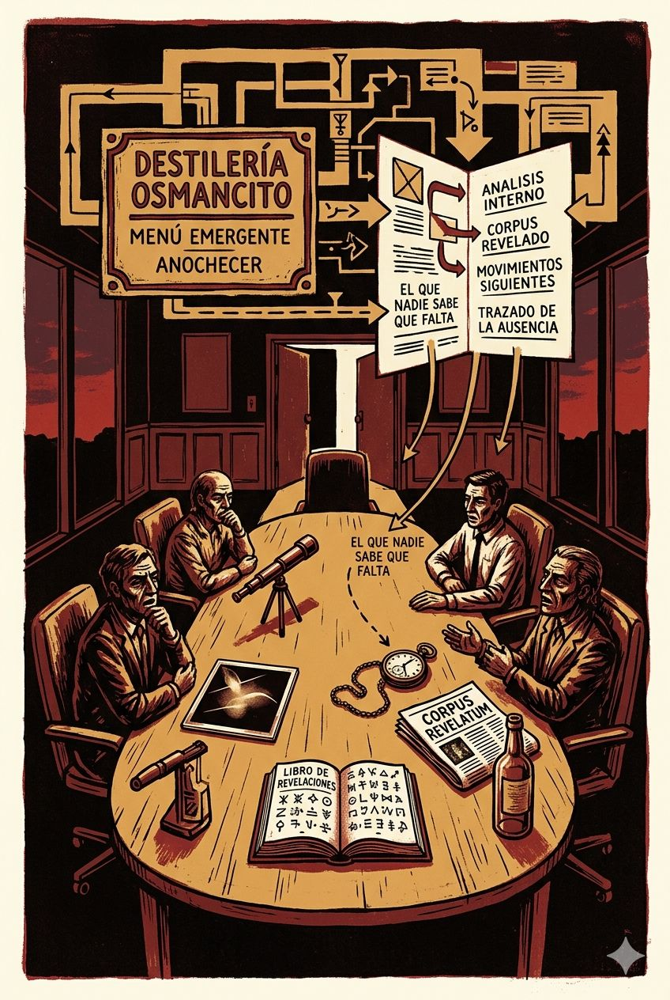
Lo que sigue emerge del mapa de profundidades: operaciones que tienen sentido con este corpus específico, por lo que contiene y cómo está construido.
1. La epistemología como tragedia Operar el argumento cifrado central: que el corpus demuestra, sin declararlo, la incompatibilidad entre comprensión y resistencia cuando el objeto excede cierto umbral. Rastrear cada evento donde el saber no protege al que sabe. Formular la proposición que el corpus porta sin nominarla y medir su alcance fuera del texto.
2. El experimento fallido como demostración Examinar el episodio de Faro y Yimot —la casa pintada de negro, los agujeros en el techo— como el núcleo filosófico sepultado. Por qué falla: no porque la oscuridad sea insuficiente sino porque la escala es el fenómeno. La diferencia entre simular una experiencia y padecerla es la diferencia entre conocer y existir. Qué dice eso sobre el corpus entero.
3. La arquitectura del ciclo sin culpa Operar la ausencia de juicio moral: qué significa que un corpus apocalíptico no tenga posición ética sobre el apocalipsis que describe. Examinar el ciclo de nueve civilizaciones como estructura —no como historia borrada— y lo que produce sobre el lector la certeza de que esto ya ocurrió y volverá a ocurrir sin que nadie sea responsable.
4. Theremon como instrumento epistémico Examinar la función de Theremon no como personaje sino como dispositivo: el escéptico que necesita que le expliquen, que resiste hasta el último momento, que toma notas para nadie. Lo que ese dispositivo produce sobre el lector y lo que revela sobre la visión del corpus respecto de la relación entre conocimiento y experiencia. El periodista que escribe el artículo que nadie leerá como imagen del conocimiento sin receptor.
5. El cuerpo ausente y su aparición Rastrear la ausencia casi total del cuerpo en el corpus y mapear las dos o tres ocasiones en que aparece. Examinar qué produce esa aparición tardía: por qué los juanetes fríos de Theremon y el jadeo de Sheerin en las escaleras tienen el peso que tienen. Qué dice sobre la arquitectura del corpus su decisión de operar casi exclusivamente en el registro intelectual.
6. Beenay y la Tierra Examinar el momento en que Beenay describe un sistema con un solo sol y un solo planeta como caso modelo de la gravitación —describiendo exactamente la Tierra— sin saberlo. Qué produce ese momento en el lector que lo reconoce. Si es un guiño o una trampa estructural. Lo que el corpus planta en su interior sin nombrarlo.
7. La muerte sin duelo Operar la ausencia total de intimidad y lamento. El corpus pierde una civilización completa sin una sola línea de duelo. Examinar qué produce esa frialdad: si es una decisión estética o una proposición sobre la naturaleza de las catástrofes a escala civilizatoria. Comparar con la única escena que se acerca al duelo —Aton llorando como un niño— y examinar por qué eso resulta más perturbador que cualquier descripción del apocalipsis.
El corpus es un experimento sobre si saber algo cambia lo que te ocurre cuando ese algo llega.
La respuesta es no. Y lo demuestra cinco veces, con cinco variantes del mismo fracaso.
Aton sabe con exactitud matemática cuándo ocurrirá el eclipse y qué producirá. Lleva dos meses intentando preparar al mundo. Cuando el eclipse llega, llora como un niño.
Sheerin sabe —es el especialista en el mecanismo— que la oscuridad producirá primero claustrofobia, luego la visión de las Estrellas desconocidas, luego la locura permanente. Describe el proceso con precisión clínica. En las escaleras, a media oscuridad, no puede respirar y necesita que Theremon lo sostenga.
Beenay sabe que tiene que fotografiar el eclipse para preservar evidencia para la siguiente civilización. Se prepara con rigor técnico. En el momento del eclipse total ordena a sus colegas con voz extraña y luego desaparece del corpus —se pierde en algún punto de la oscuridad antes del final.
Faro y Yimot quieren probar que pueden prepararse. Construyen una simulación, la practican, se entrenan. El resultado: la oscuridad artificial no produce nada. La escala es el fenómeno; sin ella, no hay fenómeno.
Theremon pasa horas entendiendo el argumento científico, acepta intelectualmente que el eclipse ocurrirá, tiembla cuando Beta mengua, ayuda a barricar la puerta con eficiencia práctica, y luego enloquece exactamente como fue predicho.
Lo que el corpus demuestra sin declararlo: hay una diferencia de categoría entre conocer un fenómeno y padecer un fenómeno cuando ese fenómeno excede la capacidad de integración del sistema que lo padece. El conocimiento opera en un registro; la experiencia extrema opera en otro. Cuando el objeto del conocimiento pertenece a la clase de cosas que exceden la arquitectura cognitiva del sujeto, el conocimiento no solo no protege: es inerte. No funciona como herramienta de preparación porque prepararse requiere poder imaginar lo que viene, y lo que viene es exactamente lo que el cerebro humano de Lagash no puede imaginar.
La proposición que el corpus porta sin nominarla: el conocimiento es una tecnología adaptada a la escala del mundo que lo produce. Cuando el mundo cambia de escala, el conocimiento no escala con él.
El alcance de esta proposición fuera del texto es considerable. No es una hipótesis de ciencia ficción. Es una descripción de cualquier momento en que una mente humana se enfrenta a un fenómeno que excede su marco de referencia: la guerra total, la pérdida catastrófica, el colapso de una certeza fundacional. El corpus de 1941, escrito mientras Europa ardía, no necesita decirlo. Lo demuestra.
Faro y Yimot construyen una habitación negra con agujeros en el techo que simulan estrellas. Se encierran dentro. No ocurre nada. Salen consternados.
El corpus trata el episodio como anécdota. Sheerin comienza a explicar por qué falló y lo interrumpen antes de terminar. El texto lo abandona.
Lo que el experimento demuestra —y que el corpus sepulta— es la diferencia entre una experiencia artificial y su original. No es una diferencia de grado: es una diferencia de naturaleza. La oscuridad artificial con agujeros luminosos produce una habitación oscura con agujeros. La oscuridad real con treinta mil soles desconocidos produce la destrucción de la razón. La razón por la que el experimento falla no es que sea imperfecto —es que es perfecto en lo que simula y completamente otro en lo que no puede simular: la escala, la ausencia total de referencia, la novedad absoluta.
La consecuencia filosófica que el corpus silencia: no hay preparación posible para una experiencia que excede el marco de referencia porque prepararse requiere imaginar el fenómeno y el fenómeno es exactamente lo que la mente no puede imaginar. La simulación solo puede operar dentro del territorio conocido. Todo lo que queda fuera —y aquí, todo queda fuera— es inaccesible por definición.
Esto tiene una resonancia precisa con la estructura del corpus completo: el texto entero es, en un sentido, el experimento de Faro a escala. El lector recibe toda la información necesaria para imaginar el eclipse. Sheerin se lo explica. El corpus se lo muestra. Y sin embargo —en la medida en que el corpus funciona— produce algo parecido al pavor que ninguna explicación debería poder producir. El texto hace lo que el experimento no pudo hacer: hace sentir, aunque sea débilmente, lo que está describiendo. No mediante la simulación sino mediante la densidad acumulada de la espera.
El experimento fracasó. El texto, en el margen que le permite su naturaleza, no.
Hay nueve capas de ceniza debajo de Lagash. Cada dos mil cincuenta y nueve años, la civilización de ese planeta colapsa en incendios y reinicia desde cero. El corpus menciona esto como argumento arqueológico y lo abandona. Pero lo que ese ciclo produce sobre el corpus entero es determinante.
Primero: el eclipse que el texto describe no es el primero. Es el décimo —al menos. Lo que estamos viendo ya ocurrió nueve veces y volverá a ocurrir nueve veces más, porque nada en la mecánica de Lagash lo impide. El Refugio no rompe el ciclo: preserva conocimiento para la próxima civilización que, llegado el momento, tampoco podrá resistir.
Segundo: el corpus no tiene posición moral sobre esto. No hay lamento, no hay reclamo, no hay indignación ante la injusticia de un universo que condena a una especie a esta repetición. El tono es el de quien describe la mecánica de un reloj. La catástrofe es un fenómeno, no una tragedia en el sentido dramático del término —donde alguien tiene culpa o responsabilidad.
Tercero, y aquí está lo más perturbador: la ausencia de culpa no es resignación. Es diagnóstico. El corpus propone que el ciclo de destrucción no se debe a error, maldad, ni negligencia. Se debe a incompatibilidad: la arquitectura cognitiva de los habitantes de Lagash es incompatible con el universo que habitan. No pueden ser de otra manera. No pueden prepararse de una manera que funcione. La catástrofe no es un castigo —es una consecuencia estructural de ser lo que son en el universo que es.
Lo que eso produce sobre el lector es algo diferente del horror narrativo convencional. Es más cercano al vértigo: la posibilidad de que la tragedia no necesite culpable. De que el universo no sea hostil ni indiferente sino simplemente incompatible con ciertas formas de existencia. De que la extinción sea, en algunos casos, arquitectónica.
Y lo que el corpus no dice —pero que la imagen de las nueve capas de ceniza insinúa— es que quizás la Tierra también tenga su escala que excede. Quizás también nosotros, como Beenay, estamos describiendo el caso sin reconocerlo.
Theremon no es un personaje en el sentido pleno: es un dispositivo de acceso al conocimiento. Su función en el corpus es ser el que no sabe para que el corpus pueda explicar. Sin Theremon, Sheerin no tiene a quién instruir. Sin esa instrucción, el lector no tiene entrada al mecanismo. Theremon es la pregunta que hace posible la respuesta.
Pero su función va más lejos. Es también el dispositivo de resistencia: el que duda más tiempo, el que necesita más evidencia, el que tiembla al ver menguar a Beta y se indigna de temblar. Esa resistencia tiene un propósito estructural: mientras Theremon resiste, el lector puede resistir con él. Cuando Theremon cede —cuando tiembla, cuando sube corriendo las escaleras, cuando gatea hacia la llama— el lector ha perdido su último aliado.
Hay un detalle sepultado en el corpus que tiene peso: Theremon toma notas durante el apocalipsis. El periodista continúa su oficio mientras el mundo colapsa. Está escribiendo el artículo para el Chronicle de Saro City mientras Sheerin explica que mañana no quedará una sola ciudad indemne. La imagen es casi cómica en su absurdo y el corpus no la subraya.
Pero es la imagen más precisa de lo que el corpus propone sobre el conocimiento: produce para un receptor que ya no existe. Theremon escribe para lectores que están, en ese momento, quemando sus casas. El periodismo —el instrumento del saber compartido, del registro para otros— continúa funcionando cuando su razón de ser ha desaparecido. El conocimiento como hábito que sobrevive a su propio propósito.
El artículo de Theremon es el equivalente exacto del Refugio: una medida de preservación diseñada para un después que quizás no llegue, o que llegará tan cambiado que lo preservado no servirá de nada. El corpus planta ese gesto —escribir para nadie— y lo abandona sin amplificarlo. Es la imagen más triste del texto, y es casi invisible.
El corpus opera casi enteramente en el registro intelectual. Sus personajes piensan, argumentan, explican, escuchan, dudan. Lo que hacen con el cuerpo —comer, sentir frío, cansarse, tener sed— está casi completamente fuera del texto.
Hay dos excepciones menores antes del desenlace: Theremon menciona sus juanetes fríos en los minutos previos al eclipse, y Sheerin tose y no puede respirar en las escaleras oscuras. Ambas son breves y no amplificadas.
Y luego está el desenlace.
En las páginas finales el cuerpo irrumpe con toda su violencia: Theremon con la garganta que no deja pasar el aliento, todos los músculos en estado de terror, gateando hacia la llama. Sheerin que lloriqueó algo y desapareció. Aton que llora como un niño en algún lugar de la sala. La turba que llega con las manos desnudas, con gruñidos sin palabras.
La brutalidad de esa irrupción no es solo narrativa. Es el resultado de la ausencia que la precede. El corpus construyó durante horas una experiencia completamente cerebral —conversación, argumento, instrucción, debate— y entonces el cuerpo aparece como aquello que el argumento no pudo prever ni contener. La locura no es un cambio de opinión: es un cambio de régimen. El cuerpo toma el control precisamente cuando el intelecto colapsa.
Lo que esa arquitectura produce: la demostración somática de la tesis del corpus. No hay argumento que lo diga con más precisión que la imagen de Theremon —el que escuchó todas las explicaciones, el que entendió el mecanismo, el que resistió más tiempo— gateando en la oscuridad hacia una llama, aullando una sola palabra: ¡Luz!
En los minutos previos al eclipse, mientras esperan, Beenay propone una especulación. ¿Qué pasaría, dice, si existiera un universo con un solo sol y un solo planeta? Sería el caso modelo de la gravitación —la ley más clara que pudiera concebirse. El sistema sería dinámicamente estable. Los astrónomos de ese mundo habrían llegado a la gravedad antes que al telescopio.
Y luego añade: por supuesto, en ese planeta no podría haber vida. La mitad estaría siempre en oscuridad. La vida depende de la luz y en esas condiciones no podría desarrollarse.
Es la descripción exacta de la Tierra, con el sistema solar simplificado. Y el corpus la planta ahí, en boca de un astrónomo de Lagash que la trata como abstracción —como el gas perfecto o el cero absoluto: útil como modelo, imposible como realidad.
Lagash, con sus seis soles y su luz perpetua, no puede concebir que haya vida en un planeta con oscuridad regular. Para un habitante de Lagash, la Tierra es el sistema que no debería poder producir vida consciente. Y sin embargo el lector existe. El lector, que duerme en oscuridad cada noche y no enloquece, es la prueba de que la adaptación es posible —de que la arquitectura cognitiva puede construirse de forma diferente.
Lo que el corpus planta sin nombrarlo: la posibilidad de que la tragedia de Lagash no sea universal. Que haya formas de existencia que no sean incompatibles con la oscuridad. Que la condena de Lagash sea específica de Lagash, no de toda vida consciente.
Y esa posibilidad —plantada como especulación ociosa, abandonada antes de que nadie la desarrolle— es la única grieta de esperanza en un corpus que no tiene ninguna. No porque el corpus la ofrezca: la planta y la abandona. Pero el lector la tiene. El lector es la prueba de que el modelo de Beenay no es abstracto.
El corpus destruye una civilización completa sin una sola línea de lamento.
Theremon no llora a nadie. Sheerin no recuerda a nadie. Aton no pronuncia ningún discurso. No hay escenas de despedida, no hay evocaciones de lo que se pierde, no hay nombrar a los muertos antes de que mueran. La ciudad que arde en el horizonte es un resplandor aural —una mancha de luz creciente— no un lugar donde vivía gente conocida.
Esto distingue a Anochecer de casi cualquier otro relato apocalíptico. La catástrofe ordinaria necesita individuos que lloren para que el lector llore con ellos. Este corpus elimina esa mediación y expone al lector directamente a la escala del evento, sin el amortiguador del duelo particular.
El resultado es paradójico: el corpus produce pavor sin tristeza. Lo que se pierde no se lamenta —se constata. La frialdad no es indiferencia: es la temperatura del conocimiento sin capacidad de sentir lo que conoce. El corpus imita en su tono lo que describe en su argumento: la incompatibilidad entre saber la magnitud de algo y sentirla.
Hay una sola excepción: Aton llorando como un niño en la oscuridad. Y esa excepción es más perturbadora que cualquier descripción del apocalipsis precisamente porque es lo único que el corpus no había preparado. El director severo, la voz de la autoridad científica, el hombre que calculó el eclipse con exactitud y pasó dos meses intentando evitar lo inevitable, llora como un niño. Sin objeto. Sin dirección. Sin palabras articuladas —o con palabras que ya no tienen sintaxis: «las Estrellas… todas las Estrellas… nada sabíamos… nunca supimos nada…»
Esa escena no es duelo. Es la disolución de la estructura que hacía posible el duelo. Lo que Aton pierde no es algo que pueda llorar: pierde la capacidad de operar como Aton. El llanto infantil es la primera señal de que el director ya no existe —que lo que queda es algo anterior, algo sin nombre científico, algo que el corpus no tenía categoría para nombrar hasta ese momento.
Y eso —la desaparición de la persona dentro del cuerpo que la contenía, sin testigo, sin elegía— es lo más próximo que el corpus llega al duelo.
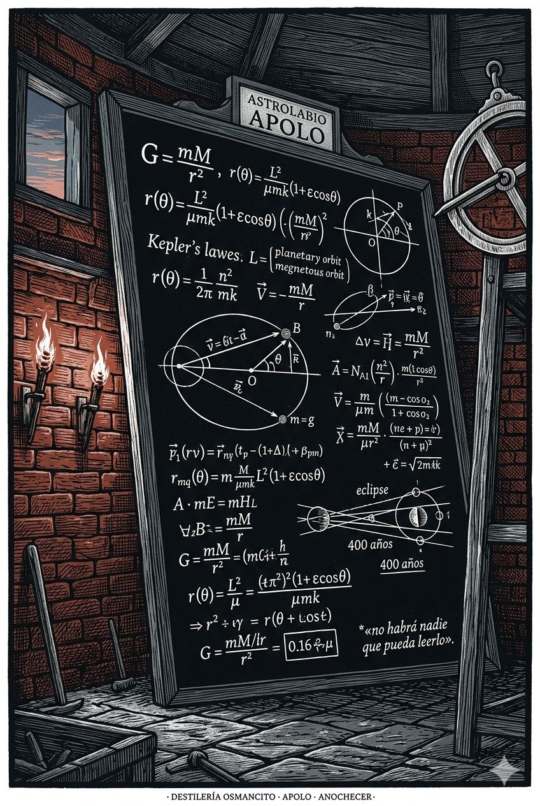
La estructura de Anochecer hace algo que casi ningún relato apocalíptico consigue: convierte al lector en cómplice del mecanismo que lo destruirá. No porque lo engañe —al contrario, lo informa con precisión quirúrgica desde el primer párrafo— sino porque informa y experiencia son registros incompatibles, y el corpus demuestra esa incompatibilidad en el lector al mismo tiempo que la demuestra en sus personajes. La fisura estructural del texto está exactamente donde debería estar su mayor fortaleza: en el instante del eclipse, donde el corpus abandona su temperatura clínica y se vuelve, brevemente, literario en el peor sentido. Sobrevive a esa fisura porque lo que la rodea es de una precisión mecánica que pocas narraciones de su época alcanzan.
La premisa es doble y ambas partes tienen que sostenerse simultáneamente: primero, que la oscuridad total es psicológicamente destructiva para una especie que nunca la ha experimentado; segundo, que el conocimiento de esa destrucción no protege a quien lo posee. Sin la primera parte, no hay catástrofe. Sin la segunda, no hay tragedia —habría solo desastre natural.
La primera parte aguanta. Asimov la construye con rigor: la claustrofobia como precursora documentada, el Túnel del Misterio como precedente experimental, la psicología de Sheerin como voz técnica que no especula sino que diagnostica. El corpus instala esa parte con la solidez de un argumento científico y no la abandona.
La segunda parte también aguanta —pero lo hace casi completamente en el registro implícito. El corpus nunca declara que el saber no protege: lo demuestra cinco veces con cinco personajes. Esa demostración acumulada es la columna vertebral real del texto, y es más robusta que cualquier tesis explícita habría sido. Lo que aguanta el peso del corpus no es el argumento científico —es la arquitectura de la demostración repetida con variaciones.
Hay un punto de tensión estructural: el corpus necesita que sus científicos sean suficientemente competentes para predecir con exactitud y suficientemente humanos para colapsar igual que todos. Esa tensión se mantiene en equilibrio inestable durante casi todo el texto y solo se quiebra parcialmente en el desenlace, donde el colapso de Aton —el más preparado— tiene una brutalidad que la estructura no del todo justifica emocionalmente. El llanto infantil llega sin preparación interna suficiente. El corpus predijo la locura pero no preparó al lector para sentirla en ese personaje específico.
La presión de Campbell y el mercado de la ciencia ficción de 1941. John W. Campbell le dio a Asimov la frase de Emerson como punto de partida y el encargo implícito de un relato que tomara en serio la ciencia dentro de la ficción. Astounding Science Fiction en 1941 era el espacio donde la ciencia ficción intentaba diferenciarse del pulp mediante rigor técnico. Anochecer lleva esa presión inscrita en su estructura: la explicación orbital antes del drama, la psicología clínica antes del colapso, el experimento fallido como evidencia. El corpus tiene la forma de una demostración científica porque su contexto de producción exigía que la ciencia ficción se pareciera a la ciencia.
La Segunda Guerra Mundial como telón de fondo no declarado. El corpus fue escrito y publicado en el otoño de 1941, mientras Europa llevaba dos años en guerra y cuatro meses antes de Pearl Harbor. Un relato sobre una civilización que predice con exactitud su propio colapso y no puede evitarlo, escrito en ese momento, no necesita declarar su referente. La Segunda Guerra ya había demostrado que el conocimiento de la catástrofe que viene no impide la catástrofe. El corpus hereda esa temperatura sin nombrarla.
La tradición del relato de desastre como género. Anochecer opera contra el patrón del género: no hay héroe que salve el día, no hay solución de último momento, no hay individuo cuya virtud produce excepción. El corpus rechaza la estructura del relato de catástrofe convencional y eso le cuesta lectores que buscan ese patrón —y le gana lectores que soportan la ausencia de rescate.
La estructura de cámara de compresión. El corpus opera con un solo movimiento espacial: adentro. Empieza afuera —el periodista que llega, los soles que se ven desde la ventana, la ciudad que aún existe— y se contrae progresivamente hacia el interior del Observatorio, luego hacia la cúpula, luego hacia la oscuridad total que elimina el espacio perceptible. Esa contracción espacial es la estructura del relato: el corpus se comprime al mismo ritmo que la luz se reduce. Cuando la oscuridad es total, el espacio narrativo también lo es.
La simetría entre instrucción y catástrofe. El primer tercio del corpus es casi completamente instructivo: Sheerin explica, Theremon pregunta, el mecanismo se articula. El último tercio es casi completamente catártico: el eclipse ocurre, los personajes colapsan, el mecanismo se cumple. La simetría no es exacta —la instrucción es más larga que la catástrofe— y esa asimetría es funcional: el peso de la espera debe superar el peso del evento para que el evento, cuando llega, sea la resolución de una tensión acumulada y no un acontecimiento aislado.
El separador tipográfico como reloj. El corpus usa separadores de sección para marcar sus movimientos internos. Cada separador adelanta el eclipse en una cantidad que el lector no puede medir pero que siente. El ritmo entre separadores no es uniforme: los movimientos finales son más cortos, más rápidos. La aceleración tipográfica mimetiza la aceleración temporal del eclipse.
La escala de la frase en los momentos críticos. En el corpus hay dos registros sintácticos claramente diferenciados. En las conversaciones entre Sheerin y Theremon: frases largas, subordinadas, explicativas. Sheerin habla en períodos complejos que reproducen el argumento que contienen. En los momentos de crisis y en el desenlace: frases cortadas, parataxis, coordinación simple. Estaba oscuro. Murmuró. La sintaxis cambia de régimen antes de que el estado mental de los personajes lo haga explícito. El corpus usa la estructura de la frase como termómetro.
Hay una excepción que funciona como quiebre: el monólogo final de Aton —«las Estrellas… todas las Estrellas… nada sabíamos… nunca supimos nada…»— es la frase más fragmentada del corpus. La sintaxis colapsa al mismo ritmo que la mente que la produce. La elipsis no es silencio retórico: es el registro lingüístico de la desintegración.
La función del Cultista como espejo. Latimer no es un antagonista funcional: es un dispositivo de simetría. Representa el mismo conocimiento —la certeza del eclipse— llegado por un camino completamente diferente. Su función estructural es demostrar que fe y ciencia producen el mismo resultado cuando el objeto de ambas excede la capacidad de integración. El corpus lo usa para ese propósito y luego lo abandona: Latimer colapsa igual que todos y no hay una sola línea sobre cómo enloquece un Cultista que ya esperaba las Estrellas. Ese silencio es un agujero estructural menor —una oportunidad que el corpus no tomó.
El corpus opera sin poder decirlo directamente: que la catástrofe puede ser estructural y no moral. Que hay formas de destrucción que no tienen culpable.
La tradición del relato de catástrofe exige responsable: el orgullo humano, la tecnología descontrolada, la negligencia, la maldad. Anochecer elimina esa exigencia. Nadie hizo nada mal. La ciencia funcionó. La predicción fue correcta. El intento de preparación fue genuino. Y de todas formas el mundo colapsa.
Lo que eso propone —sin proponerlo, porque es demasiado para proponerlo— es que el universo no es hostil ni indiferente sino simplemente incompatible con ciertas formas de existencia. Que la extinción puede ser arquitectónica. Que la pregunta moral de quién tiene la culpa puede ser, en ciertos casos, una pregunta sin objeto.
Esa es la ética más difícil del texto y el corpus la porta sin nombrarla porque nombrarla sería insoportable.
Lo que Asimov proyecta sin proponérselo: la primacía del argumento sobre la persona. Los personajes de Anochecer son funcionales, no interiores. Tienen rol, voz, posición en el debate —pero no vida privada, no historia afectiva, no corporalidad antes del desenlace. Esa construcción revela la disposición de Asimov hacia el personaje como vehículo del argumento antes que como fin en sí mismo. El corpus dice que sus personajes importan; la arquitectura dice que importan en tanto que demuestran algo.
Lo que evita: el gesto melodramático. Asimov desconfía sistemáticamente de la amplificación emocional. Cada vez que el corpus se aproxima a un momento que podría volverse emotivo —la decisión de Sheerin de quedarse, el último vistazo de Aton a Gamma, las lágrimas finales— lo trata con brevedad o lo desactiva con humor. Esa desconfianza es productiva durante casi todo el texto y se vuelve un problema en el desenlace, donde la emoción que el corpus ha comprimido durante cuarenta páginas necesita espacio y no lo encuentra.
Lo que repite: el mecanismo de la explicación antes del evento. En todo el corpus, el patrón es: explicar, demostrar, ocurrir. Sheerin explica la claustrofobia; el experimento de la habitación lo demuestra; el desenlace ocurre. Sheerin explica el Túnel; el experimento de Faro lo amplía; el eclipse lo confirma. Este patrón es la firma de Asimov como escritor de ciencia ficción: la ciencia primero, la ficción después. El corpus nunca invierte el orden.
El corpus declara traer: un relato de ciencia ficción sobre un eclipse en un planeta de seis soles.
Lo que trae realmente: una demostración de que hay experiencias que el conocimiento no puede preparar, porque prepararse requiere imaginar lo que el cerebro no puede imaginar.
La distancia entre lo declarado y lo real no es traición —es la arquitectura de lo que hace que el corpus sobreviva más allá de su anécdota de ciencia ficción. El planeta, los seis soles, el eclipse: son el vehículo. La carga real es epistemológica. Un lector que lo lee como relato de ciencia ficción recibe la anécdota. Un lector que lo lee como proposición filosófica recibe la demostración.
El origen es el epígrafe de Emerson —«si las estrellas despuntaran una noche cada mil años, ¿cómo creerían y adorarían los hombres?»— que Campbell le dio a Asimov como punto de partida. Asimov invirtió la pregunta: no qué pasaría si las estrellas aparecieran por primera vez, sino qué pasaría si aparecieran exactamente una vez cada dos mil años, a una civilización que no puede recordar la vez anterior. La inversión convierte la pregunta religiosa de Emerson en una pregunta sobre la memoria civilizatoria. Ese desplazamiento es donde comienza la originalidad del corpus.
El imán — incompatibilidad. No oscuridad, no locura, no eclipse. El concepto con mayor gravitación en el corpus es la incompatibilidad entre la arquitectura cognitiva de una especie y el universo que habita. Todo lo demás —el eclipse, la claustrofobia, el ciclo de civilizaciones, el saber que no protege— es consecuencia de esa incompatibilidad. El imán opera sobre un concepto abstracto y nunca es nombrado directamente.
Tipo de curvatura — sobre concepto abstracto. El imán no tiene nombre en el corpus; opera como campo gravitacional sin cuerpo visible. Su presencia se detecta por los efectos: cada vez que el corpus describe algo que no funciona —el conocimiento que no protege, el experimento que no prepara, el Refugio que no rompe el ciclo— está describiendo una instancia de incompatibilidad.
Sistema secundario — escala. Hay un segundo imán con gravitación propia: la escala como parámetro determinante. Lo que hace imposible la preparación no es la naturaleza de la oscuridad sino su escala. Una habitación oscura no enloquece. Un túnel oscuro enloquece al diez por ciento. La oscuridad total con treinta mil soles desconocidos destruye a todos. La escala es lo que convierte un fenómeno asimilable en uno incompatible. El segundo imán curva la lectura del primero: la incompatibilidad no es absoluta —es función de la escala.
Forma de la red — centralizada con nodo dominante. Todas las ideas del corpus —la mecánica orbital, la psicología de la claustrofobia, el ciclo arqueológico, la fe como sistema equivalente a la ciencia, el experimento fallido— convergen en el imán central. La red no es distribuida: hay jerarquía clara. Las ideas periféricas no tienen peso propio; lo adquieren por su relación con el centro.
Nodo de mayor integración — el experimento de la habitación a oscuras. Es el punto donde convergen más ideas: la psicología de la claustrofobia, la diferencia entre escala real y simulada, la ilusión de Theremon de que puede resistir, la demostración de que la comprensión intelectual no produce resistencia real. El experimento de Faro amplía ese nodo pero no lo desplaza.
Coherencia — el imán (incompatibilidad) y el nodo de mayor integración (la habitación a oscuras) coinciden: el experimento es la demostración más concentrada de la incompatibilidad entre lo que Theremon puede imaginar y lo que el eclipse producirá. La red es coherente. No hay divergencia entre lo que el corpus gravita y donde sus ideas convergen.
El corpus produce lo que produce porque demuestra su tesis en el lector al mismo tiempo que la demuestra en sus personajes: el lector recibe toda la información sobre lo que viene y de todas formas lo siente cuando llega, porque información y experiencia son registros incompatibles. La inagotabilidad es limitada —el mecanismo funciona una vez con la máxima intensidad y no puede repetirse porque el lector ya sabe lo que el corpus demostró.
Anochecer es un mecanismo perfecto con una sola falla: no confía en el momento que construyó durante cuarenta páginas. El desenlace llega y el corpus lo atraviesa con prisa, como si Asimov le tuviera más fe a la preparación que al acontecimiento. Lo que pone en el mundo es una proposición filosófica disfrazada de relato de ciencia ficción —y esa proposición, ochenta años después, no ha envejecido porque no era sobre un eclipse. Vale el tiempo que cuesta, y sobra.
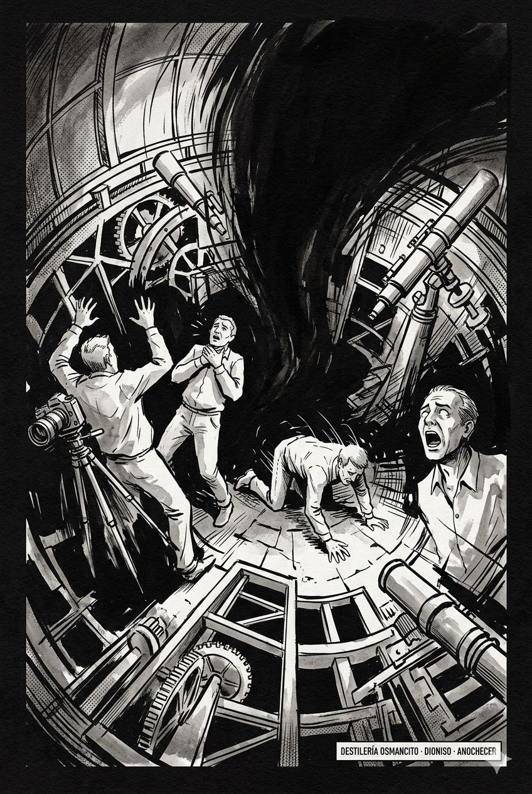
Este texto lleva sin saberlo una inversión que lo deshace: no es la oscuridad lo que enloquece a los personajes, sino los treinta mil soles que nadie había visto nunca, es decir, demasiada realidad visible de golpe. Asimov escribe un cuento sobre el miedo a la oscuridad y produce, sin quererlo, un cuento sobre el miedo a la plenitud. La razón no falla ante el vacío: falla ante la abundancia. Eso no está en ninguna página. Está en todas.
Algo en mí quiso encender una luz.
Hay un observatorio en un planeta que nunca ha conocido la noche. Seis soles se turnan en el cielo con suficiente fidelidad como para que la oscuridad total sea, para esa especie, no una experiencia sino una leyenda. Dentro del observatorio, un puñado de hombres espera. Saben lo que va a ocurrir. Han calculado la hora, la duración, el ángulo. Han preparado cámaras, antorchas, archivos. Han construido un refugio para sus familias. Han hecho todo lo que la razón puede hacer ante lo que la razón no puede contener.
El texto transcurre casi en su totalidad en esa espera. No es una espera pasiva: es una espera llena de conversación, de explicaciones, de pequeñas discordias, de un psicólogo gordo que esconde licor bajo la ventana y de un periodista escéptico que pregunta todo lo que el lector querría preguntar. Asimov usa la curiosidad como dique. Cada pregunta detiene el descenso un instante. Cada respuesta lo continúa. El texto desciende en mesetas, con la paciencia de algo que sabe adónde va y no tiene prisa.
Cuando el eclipse ocurre, ocurre en pocas líneas. El lenguaje, que hasta ese momento fue claro, metódico, casi burocrático en su voluntad de explicar, se fragmenta. Las frases se acortan. Las palabras se repiten porque la mente que las produce ya no puede avanzar. El narrador mismo cede: hay una exclamación solitaria en su propio párrafo que no le pertenece al estilo sino al pánico.
Y lo que aparece cuando Beta se apaga no es la oscuridad. Son treinta mil soles que nunca habían sido visibles. La locura no la produce el vacío: la produce una cantidad de realidad para la que no existe aparato perceptivo. Eso el texto no lo dice. Lo muestra y sigue, como si no hubiera notado lo que acaba de hacer.
La última frase tiene un solo adverbio que lo cambia todo: nuevamente. No es la primera vez. No será la última. Lo que parecía el relato de un acontecimiento único resulta ser un eslabón en una cadena que se repite cada dos mil años, sin memoria, sin aprendizaje posible, con la misma fidelidad con que Beta regresa. El texto termina antes de que sea posible soportar eso del todo.
El destello de Beta menguando Línea sola, en párrafo propio: ¡Beta estaba menguando por un lado! La exclamación no pertenece al estilo del narrador. La cede. Es el único momento en que la voz narrativa pierde su temperatura. Lo que palpita aquí es la fisura: el texto se rompe exactamente donde se supone que empieza a controlarse.
La cortina roja Sheerin desafía a Theremon a correr las cortinas. Theremon acepta con suficiencia. Sus pasos resuenan. Se detiene. No puedo verlo, señor. El texto contagia antes de describir. No hay distancia entre la escena y el cuerpo del lector. Es inoculación, no relato.
La botella escondida bajo el marco de la ventana Un hombre gordo esconde licor de su jefe mientras el mundo cuenta sus últimas horas. Aquí el texto respira de una manera que no vuelve a respirar. No es pausa: es la única zona donde la vida cotidiana —pequeña, doméstica, irresistiblemente humana— resiste el peso de lo que viene.
El Libro de las Revelaciones recitado en voz baja Latimer cita el Libro mientras los científicos trabajan. Dos tiempos corren sin tocarse. Lo que palpita no es devoción ni ironía: es la presencia simultánea de dos formas de saber que no pueden hablarse y que, sin embargo, producen la misma predicción.
Sheerin ante la primera antorcha encendida ¡Hermoso! ¡Hermoso! Nunca antes me había percatado de cuán maravilloso es el amarillo. El único instante en que un personaje experimenta algo antes de nombrarlo. Un hombre que ha pasado toda la historia razonando deja de razonar. Brevísimo. No se repite.
El derrumbe del lenguaje de Aton Las Estrellas… todas las Estrellas… nada sabíamos… la Oscuridad eterna eterna eterna… La sintaxis no describe la locura: la ejecuta. Lo que palpita es el límite del lenguaje mismo encontrando su borde.
La última línea Nuevamente, la noche estaba allí. El adverbio es una trampa. Quien leyó hasta aquí creyendo en la singularidad del acontecimiento descubre, en la última palabra, que no hay singularidad. El peso no cae al final de la frase: cae en el adverbio, y sigue cayendo.
La experiencia de quien sobrevive en el Refugio. El texto construye el Refugio, lo llena de familias, lo menciona repetidamente. Nunca entra. Nunca muestra qué ocurre allí durante el eclipse. La ausencia es tan sistemática que parece una decisión, pero el texto no la reconoce como tal. Lo que queda afuera del Refugio y del texto al mismo tiempo: el cuerpo de los que resisten, no el de los que colapsan.
El noveno ciclo anterior. Nueve civilizaciones destruidas. El texto lo menciona como dato arqueológico y no vuelve. No hay un solo momento en que alguien intente imaginar cómo era la civilización que ardió antes. La historia previa existe solo como número. Lo que eso significa —que toda cultura es reemplazable, que el conocimiento no acumula— permanece sin ser mirado.
Lo que ocurre en Saro City mientras el observatorio trabaja. Las ciudades arden. Se menciona el resplandor en el horizonte. El texto nunca baja. Todo ocurre desde la cúpula, con distancia de telescopio. El sufrimiento masivo existe como luz en el fondo de una ventana.
El nombre de lo que lleva a los hombres a reconstruir. El ciclo se repite. Cada vez, alguien vuelve a levantar ciudades. El texto no pregunta de dónde viene ese impulso. Lo trata como dado. Lo que no se nombra: la obstinación de existir, que es el verdadero motor del relato y que nunca aparece como tal.
La diferencia entre Latimer y Sheerin. Ambos tienen razón. El texto los trata como opuestos. No hay una sola línea que note que sus sistemas convergen en la misma predicción. Esa convergencia no existe en el texto.
El humor de Sheerin en el momento más oscuro. Sheerin es cómico de principio a fin, incluso cuando el eclipse ya comenzó. El humor no afloja en ningún momento. Eso no es consistencia de personaje: es incapacidad del texto para sostener el registro grave sin alivio. Cada vez que la gravedad amenaza con volverse insoportable, Sheerin dice algo que produce distancia. Es un mecanismo de autoprotección del texto, no del personaje.
La exclamación solitaria del narrador. ¡Al fin Theremon tenía miedo de la oscuridad! El narrador que durante toda la historia mantuvo temperatura fría, de pronto usa una exclamación y la deja sola en su párrafo. El texto no sabe que se traicionó. Es el único lugar donde el narrador abandona su postura y no vuelve a ello.
La velocidad asimétrica del final. Todo el texto es lento, metódico, deliberado. El eclipse y sus consecuencias ocurren en una fracción del espacio dedicado a la conversación previa. La preparación dura horas de lectura; el colapso dura minutos. Esa asimetría produce un efecto que Asimov quizás no calculó: sugiere que la razón necesita más espacio que la catástrofe para existir. La catástrofe, en cambio, no necesita espacio. Simplemente llega.
El tratamiento de Latimer como obstáculo. Latimer es el personaje que tiene razón y es tratado como problema. El texto lo presenta con frialdad, casi como villano menor. Pero le da el Libro de las Revelaciones completo para citar, sin interrupciones, en el momento de mayor quietud del relato. El texto desprecia a Latimer con el argumento y lo reivindica con la forma. Eso no es intención: es fuga.
La luz como unidad de medida de todo. Beta. Las antorchas. El amarillo. El resplandor en el horizonte. Los treinta mil soles. La botella de licor rojo que brilló sugestivamente. El texto mide todo en términos de emisión lumínica, incluso cuando no habla de luz. Personas, emociones, momentos: todo se cualifica por cuánta luz produce o absorbe. Ocurre al menos doce veces de forma explícita y probablemente más de veinte de forma lateral. El efecto en el lector es una sensibilización progresiva: hacia el final, cualquier mención de luz o su ausencia porta un peso que al principio no tenía.
La repetición de la palabra saber en sus variantes. Sabíamos. Supimos. No podíamos saber. Nada sabíamos. En el colapso final de Aton el verbo aparece en cascada. Pero ya antes de ese momento el texto acumula saber y sus negaciones con una frecuencia que excede la necesaria. El patrón produce una ecuación tácita: saber = estar a salvo. Y su negación = el abismo. El texto no declara esto. Lo instala en el lector repetición a repetición.
Los objetos que cambian de mano. La botella. Las cerillas. Las antorchas. El libro de notas. Las placas fotográficas. En el texto hay un tráfico constante de objetos físicos entre personajes. Cada transferencia es un gesto de pertenencia, de cuidado, a veces de poder. El texto nunca lo señala como patrón. Pero en un relato sobre el colapso de todo, los objetos que pasan de mano en mano son la única forma de continuidad que sobrevive. El patrón produce, sin proponérselo, una fenomenología del apego.
La pregunta como unidad estructural. Theremon pregunta. Sheerin responde. Theremon vuelve a preguntar. Este mecanismo se repite no solo en la conversación central sino en cada intercambio significativo del texto. La pregunta funciona como respiración: el texto inhala con cada pregunta, exhala con cada respuesta. Cuando las preguntas cesan —en el colapso final— el texto también deja de respirar.
Lo que dice
Un planeta con seis soles nunca ha experimentado la oscuridad total. Los astrónomos calculan que un eclipse de duración suficiente ocurrirá esta noche. Saben, por los registros arqueológicos, que cada vez que ocurre algo así la civilización colapsa. Han preparado lo que pueden preparar. El eclipse llega. Los hombres enloquecen. Las ciudades arden. El ciclo comienza de nuevo.
Lo que muestra
La razón es una forma de compañía, no de protección. Los personajes no explican para entender: explican para no estar solos con lo que ya saben. El texto muestra, sin declararlo, que la conversación científica es un rito de pertenencia antes que una herramienta de supervivencia. Y cuando el rito ya no puede sostenerse —cuando el lenguaje se fragmenta y los nombres dejan de funcionar— lo que queda no es ignorancia sino soledad. La locura en este texto no es la ausencia de razón: es la ausencia de interlocutor.
Lo que exige
Exige que el lector sostenga sin resolver la inversión central: la locura no la produce la oscuridad sino la sobreabundancia de lo real. Esto requiere resistir la interpretación obvia —la oscuridad como miedo primitivo— y quedarse con algo más incómodo: que la mente tiene un límite no ante el vacío sino ante la plenitud. Exige también no pedir consuelo al ciclo. El hecho de que la civilización se reconstruya no es redención. Es simplemente lo que ocurre. Exige leerlo así.
Lo que guarda
Guarda la pregunta de qué es lo que hace que alguien vuelva a construir después de que todo ardió. El texto no la formula. No podría formularla: hacerlo interrumpiría su propio mecanismo. Pero en el espacio entre la última línea y el silencio que sigue hay algo que no es esperanza ni desesperanza. Es la imagen de alguien —sin nombre, sin memoria del ciclo anterior— que recoge una piedra y la coloca sobre otra piedra. Sin saber por qué. Sin poder evitarlo. Eso es lo más guardado. Y el texto no sabe que lo guarda.
Leerlo es como estar en una habitación que se oscurece tan lentamente que nunca es posible señalar el momento exacto en que la luz cambió. Tiene la temperatura de algo que acaba de salir del frío: no frío él mismo, sino portador de frío. Deja en la boca el sabor específico de la conversación que se sostiene porque la alternativa es el silencio. En la mano pesa como un objeto más denso de lo que su tamaño promete. Envejece bien —mejor que bien: cada relectura añade peso en los lugares donde la primera vez solo hubo velocidad. No hay nada decorativo en su superficie. Es rugoso de una manera que cuesta nombrar.
El texto tiene un pulso constante, casi metrónomo, que sostiene la conversación durante la mayor parte de su duración. Es de cámara, no orquestal: pocos instrumentos, mucha escucha, silencios que pesan. Hay un contrapunto entre la voz que explica y la voz que resiste la explicación, y ese contrapunto nunca se resuelve en armonía —simplemente cesa. Hacia el final el pulso se deshace: el metrónomo se rompe, los instrumentos se sueltan, y lo que queda es algo que no es música sino el ruido de lo que queda cuando la música ya no puede continuar. Es una partitura que sabe terminar antes de que sea posible soportar el final.
Título — String Quartet No. 8 in C minor, Op. 110 Autor / Intérprete — Dmitri Shostakovich / Emerson String Quartet Por qué — Escrito en tres días, cargado con lo que el autor no podía decir de otra forma, termina antes de que sea posible estar listo para que termine.
Lo que este corpus guarda: que la razón no falla ante lo desconocido sino ante lo inabarcable — y que la diferencia entre los dos es la distancia entre la oscuridad y treinta mil soles. Lo guarda en su inversión más profunda, la que el texto no nota, la que ocurre en la última página sin ser declarada.
Preguntas que quedan abiertas y predicen inagotabilidad — ¿Qué es exactamente lo que hace que alguien reconstruya una civilización sin memoria de por qué lo hace? — ¿Hay una cantidad de realidad visible que la mente no puede procesar sin romperse, y si es así, dónde está ese umbral?
Preguntas que el corpus abandona sin decirlo — ¿Qué ocurre en el Refugio durante el eclipse? — ¿Qué diferencia hay, si existe alguna, entre la fe de Latimer y la fe de Aton en sus propios métodos? — ¿Qué le ocurre a Theremon después?
Preguntas que cierra o responde — ¿Es posible que una especie sin experiencia de oscuridad desarrolle igualmente miedo a ella? Sí: el miedo no necesita experiencia, necesita anticipación. — ¿Puede la razón prepararse para su propio colapso? No. Puede documentarlo. No prepararse para él.
Preguntas que el propio acto de formularlas ya responde — ¿Para quién guardan los archivos en el Refugio? Para nadie que pueda recibirlos a tiempo. La pregunta es su respuesta.
Preguntas que responde para algunos lectores y no para otros — ¿Es el ciclo una condena o simplemente una condición? Depende de si el lector puede sostener que ambas cosas son lo mismo.
La falla raíz
El texto quiere demostrar que la razón es el valor supremo de una civilización y que su pérdida es la catástrofe definitiva. Pero lo que muestra es que la razón es impotente ante su propio límite, que ese límite no lo produce la ignorancia sino el exceso de lo real, y que la civilización se reconstruye no gracias a la razón sino a pesar de su colapso. El texto defiende la razón con argumentos que la razón misma desmiente. Esa es la contradicción de la que emergen todas las demás.
Anochecer es un texto que hace exactamente lo que promete y, al hacerlo, produce algo que no prometió. Es un relato de ciencia ficción clásica que funciona como debe funcionar: sus engranajes son visibles, su argumento es seguible, su cierre es inevitable. Y sin embargo lleva, sin saberlo, una inversión que lo vuelve más extraño de lo que cualquiera de sus partes sugiere. Lo que le falta para ser lo que prometía es la disposición a mirarse: si Asimov hubiera notado que escribió un cuento sobre el exceso de realidad y no sobre el miedo a la oscuridad, habría escrito otro cuento. El que existe es mejor porque no lo notó.
¿Qué operación permite leer la inversión central de un texto —lo que el texto hace en lugar de lo que cree hacer— sin convertir esa inversión en la lectura correcta que invalida las demás?
El instrumento que esto exige: una forma de rastrear no el tema sino el vector. No lo que el texto dice sino la dirección en que se mueve sin saberlo. Aplicable a cualquier corpus que tenga una hipótesis declarada y una hipótesis ejecutada que no coinciden. El procedimiento sería: formular la hipótesis declarada, formular la hipótesis que emerge de las zonas de mayor energía, y luego describir la distancia entre las dos sin resolverla. Esa distancia es el texto real.
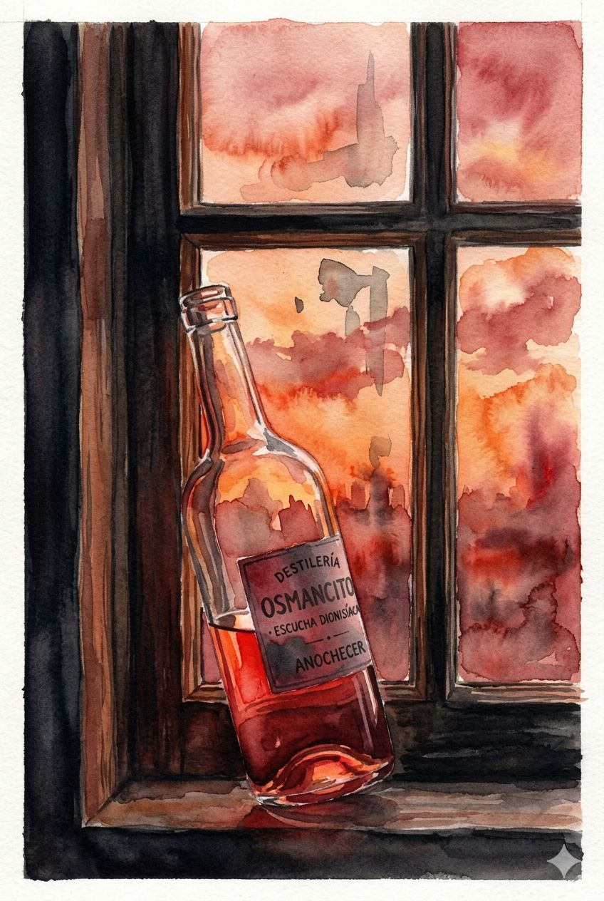
Este texto convence durante horas de que la razón puede prepararse para lo irracional, y en el momento en que esa convicción es más firme, la deshace. Lo que se descubre al final no es que la oscuridad enloquece: es que enloquecen los treinta mil soles que nadie había visto nunca, es decir, demasiada realidad de golpe, no su ausencia. El texto lleva esa inversión sin saberlo, y por eso duele de una manera que no se esperaba.
[Una sola frase. Lo que produjo el texto antes de poder pensar en él.]
Algo en mí quiso encender una luz.
[Dónde está lo vivo, y qué tipo de vitalidad es.]
La cortina roja > «No puedo verlo, señor… No puedo ver nada.»
Demostración en miniatura. El texto reproduce en el lector exactamente lo que describe. No hay distancia entre la escena y quien lee. Es contagio, no relato.
La botella escondida bajo la ventana > …sacó una botella de líquido rojo que brilló sugestivamente cuando la agitó.
Calor humano en el frío del apocalipsis. Un hombre gordo esconde licor de su jefe mientras el mundo cuenta sus últimas horas. Aquí el texto respira. Todo lo demás es catástrofe; esto es vida doméstica, pequeña, irresistiblemente viva.
El Libro de las Revelaciones recitado en voz baja > «Y en el interior de esta negrura aparecieron las Estrellas en cantidades inmensas…»
El único lugar donde el texto cede el control. Lo que palpita aquí no es devoción ni ironía: es la presencia simultánea de dos maneras de saber que no pueden hablarse entre sí.
Sheerin ante la primera antorcha encendida > —¡Hermoso! ¡Hermoso! Nunca antes me había percatado de cuán maravilloso es el amarillo.
Detonación súbita de gratitud. El único momento en que un personaje experimenta algo antes de nombrarlo. Brevísimo. Exacto.
Theremon caminando en la oscuridad hacia la silla > Los pasos de Theremon resonaron huecamente en el silencio mientras caminaba hacia la mesa. De pronto, se detuvo.
El cuerpo cediendo antes que la mente. Lo que palpita aquí es la traición del organismo a la voluntad.
«¡Al fin Theremon tenía miedo de la oscuridad!»
El narrador que hasta este momento se mantuvo frío también, al fin, cede.
Aton llorando en la oscuridad > —Las Estrellas… todas las Estrellas… nada sabíamos… nunca supimos nada… la Oscuridad eterna eterna eterna…
El lenguaje desintegrándose en tiempo real. Las palabras se repiten porque la mente ya no puede avanzar. Lo que palpita aquí es el límite del lenguaje mismo.
El resplandor en el horizonte de Saro City > Nuevamente, la noche estaba allí.
Clausura sin consuelo. Esa luz que crece y no es un sol. El texto no lo dice. Lo deja ahí.
[No hacia dónde va. Cómo se mueve.]
El texto se mueve como Beta: con luz constante que mengua.
No hay oscilación. Hay una sola dirección —hacia menos luz— y todo el corpus es el trayecto de esa merma. Pero la merma no es pareja. Avanza en mesetas. Largas planicies de conversación donde la luz parece estabilizada, donde los hombres razonan y beben y discuten como si el tiempo fuera ordinario. Y luego, sin transición, un escalón: algo cede un grado más. Y la meseta siguiente empieza más abajo que la anterior.
Es el movimiento de quien desciende sin saberlo.
El texto también tiene otro movimiento, perpendicular al primero. Mientras todo desciende en vertical, hay un pulso horizontal: pregunta y respuesta, pregunta y respuesta. No es diálogo en el sentido de intercambio: es un mecanismo de retardo. Cada pregunta detiene el descenso un instante. Cada explicación deja caer otro peldaño. El texto usa la curiosidad como dique, y el dique siempre cede.
Ese pulso horizontal —tenso, metódico, casi burocrático— es el segundo idioma interno. El idioma de los que saben que algo viene y de todas formas necesitan hablar. No para entender. Para no estar en silencio cuando ocurra.
Hay un tercer movimiento: el de los objetos. La botella. Las antorchas. El libro de notas. Las placas fotográficas. Las cortinas. Cada vez que uno aparece el texto se aquieta. Como si la materia resistiera lo que la mente ya no puede. La antorcha encendida no es un hecho. Es un ancla.
Y luego, al final, el movimiento cambia de naturaleza. Ya no desciende. Se fragmenta. Las frases se acortan. Los párrafos se sueltan unos de otros como tablones de un muelle que el agua se lleva. El texto termina exactamente donde empieza a ser imposible continuarlo. Eso no es un final calculado. Es un límite encontrado.
[Elementos insignificantes en extensión y decisivos en peso.]
«¿Ha estado usted alguna vez en una caverna?» Peso de vacío previo. Theremon nunca ha estado en la oscuridad total. Ningún habitante de Lagash lo ha estado. Dos líneas. El peso es el de una ausencia de toda la historia de una especie.
«Tengo una hermana, pero está a dos mil millas de aquí. Ni siquiera sé su dirección.» Peso de vida incompleta ya antes del eclipse. Una sola frase. Densidad de lo que ya estaba roto.
El número 762. Theremon 762. Sheerin 501. Latimer 25. El texto no explica esto. Peso de mundo completo funcionando según reglas que nunca se justifican al lector. Más pesado cuanto menos se explica.
«Las hojas de los árboles entonaron cánticos llenos de admiración.» En boca del fanatismo, una sola cláusula de belleza inesperada. Peso de contradicción que el texto abandona sin recoger.
«Adoptando los movimientos del que ejecuta el más sagrado ritual, Sheerin encendió una ancha y tosca cerilla.» El objeto más pequeño del texto recibe el adjetivo más grande. Peso de proporción rota que nadie en la sala nota pero que no se olvida.
«Nunca creí que una persona de mi peso pudiera correr tanto.» Un hombre que estudia el colapso de la razón humana no puede narrar su propio miedo sin desviarse hacia lo cómico. Peso de lo que no puede decirse directamente y busca salida lateral.
El multi-ajedrez a seis. Un juego inventado para un mundo de seis soles, mencionado de paso. Toda la extrañeza de Lagash cabe en ese detalle que nadie detiene a explicar.
«Nuevamente, la noche estaba allí.» El adverbio es el peso: nuevamente. No es la primera vez. Lo que aplasta no es el fin: es la repetición.
[Lo que el texto carga sin saber que lo carga.]
El texto lleva la suposición de que explicar protege. Sheerin explica durante horas. Theremon pregunta durante horas. Como si el acto de comprender fuera en sí mismo un refugio, independientemente de lo que se comprende. El texto no sabe que lleva esto.
El texto lleva una asimetría que no nombra. Los científicos guardan sus archivos para el próximo ciclo. Eso supone que habrá alguien después para leerlos. El texto no pregunta si eso es cierto. Hay algo ahí que se parece a la fe, pero el texto lo ha llamado método.
El texto lleva un personaje que nadie atiende. Latimer reza mientras el mundo termina. Tiene razón en lo esencial —las Estrellas existen, la Oscuridad vendrá— y sin embargo el texto lo trata como obstáculo. Su sistema produce la misma predicción que el de los astrónomos. Eso no se dice.
El texto lleva el cansancio de quien ha estado advirtiendo demasiado tiempo. Aton. Sus gestos: las manos anudadas a la espalda, la mueca, el bufido. No es autoridad: es alguien que lleva meses diciéndole al mundo algo que el mundo no quiere escuchar. Lo que hay debajo del carácter difícil no tiene nombre en el relato.
El texto lleva una pregunta sobre qué es exactamente lo que vuelve loca a la gente. La explicación oficial es la Oscuridad. Pero la locura que se muestra es producida por la presencia de demasiada luz: treinta mil soles visibles de golpe. El texto no nota la inversión.
El texto lleva la forma de algo que ya ocurrió nueve veces. Lo que no está dicho es lo que significa que los hombres vuelvan a construir cada vez. El texto menciona el ciclo como dato arqueológico. No se detiene en lo que implica sobre la naturaleza de querer seguir.
[Lo que emerge de haberlo visto todo junto.]
Es un texto que se hace pasar por explicación para poder ser experiencia. Llega con bata de laboratorio, con nombres numerados, con leyes gravitacionales y fechas de eclipse, y durante la mayor parte de su extensión parece que va a demostrarte algo. Pero lo que en realidad hace es bajarte la guardia con tanta paciencia y tanta cortesía que cuando finalmente ocurre lo que tiene que ocurrir, ya no tienes defensas. No te atrapa por sorpresa: te convence de que no hay nada de qué sorprenderse, y en ese momento te sorprende. Quien lo abra creyendo que lee ciencia ficción leerá ciencia ficción. Quien lo abra sin esa certeza encontrará otra cosa: un texto que sabe, desde su primera línea, que la razón es el último refugio antes de que todo se apague, y que aun así la defiende con una fidelidad que se parece, sin querer parecérselo, al amor.
[Sin jerarquías entre ellas.]
La mirada que sabe esperar. Este texto premia a quien no exige que ocurra algo en las primeras páginas. Su densidad está distribuida de forma no anunciada: hay zonas largas que parecen preparación y resultan ser el núcleo.
La mirada que reconoce el lenguaje técnico como acto de fe. Hay lectores para quienes las leyes gravitacionales no son decorado: son el gesto de alguien que confía en que nombrar con precisión es una forma de estar presente ante lo que no tiene nombre.
La mirada que ha vivido cerca de alguien que sabe algo que los demás no quieren saber. Aton no es un personaje para analizar: es un personaje para reconocer.
La mirada que puede sostener una pregunta sin resolverla. El texto lleva, sin saberlo, la inversión de su propia hipótesis. Quien necesite que eso se resuelva va a frustrarse. Quien pueda quedarse con la contradicción abierta va a encontrar que el texto sigue resonando después de cerrarse.
La mirada del que alguna vez preparó algo para alguien que quizás no llegue. Los archivos en el Refugio, las fotografías del eclipse, las notas de Theremon: todo en este texto es producción destinada a un receptor incierto.
La mirada que distingue entre humor y alivio. El humor de Sheerin no es pausa: es la única forma que ese hombre tiene de seguir siendo él mismo mientras todo lo demás cede.
La mirada que este texto resiste es la que viene a confirmar lo que ya sabe sobre la ciencia ficción de los años cuarenta. Ese lector encontrará exactamente lo que busca y nada más.
La mirada que este texto recompensa de forma inesperada es la del que llegó sin intención de quedarse. Para esa mirada el texto tiene reservada su carga más completa, porque esa mirada no llegó blindada.
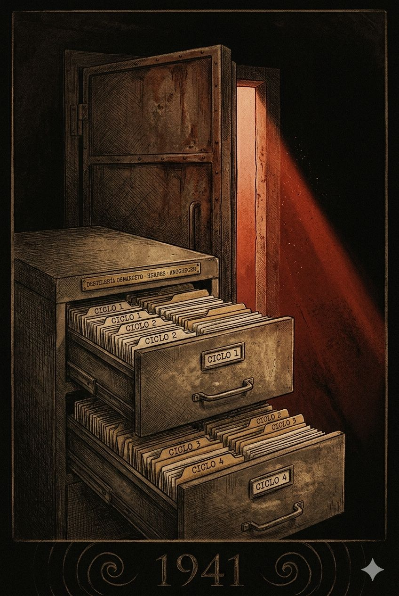
Anochecer fue escrito en 1941 por un joven de veintiún años que ya sabía que el mundo estaba ardiendo y que aun así eligió ambientar su relato en un planeta de seis soles. Esa elección no fue evasión: fue el único modo disponible, desde la posición que Asimov ocupaba, de decir que el conocimiento no protege ante la catástrofe civilizatoria cuando la catástrofe excede la escala del cerebro que la predijo. La Segunda Guerra Mundial opera sobre este texto como un campo gravitacional invisible: lo curva todo sin tocarlo. Lo que hace al cuento insoportable no es el eclipse —es que fue escrito mientras Europa ardía, por alguien que lo sabía y no podía decirlo directamente.
Anochecer no tiene geografía en el sentido habitual: sus lugares son inventados, su planeta no existe. Pero hay dos geografías reales que operan sobre el corpus sin aparecer en él.
Nueva York, 1941. Asimov escribe en Brooklyn, donde ha vivido desde los tres años. Es un inmigrante de segunda generación —hijo de judíos rusos llegados en 1923— en una ciudad que en 1941 es el centro del mundo de lengua inglesa y simultáneamente un lugar donde la guerra en Europa no es abstracción sino noticia familiar. El Observatorio de Saro, esa sala interior donde unos hombres razonan mientras el mundo exterior colapsa, tiene la arquitectura precisa del apartamento de Brooklyn donde se escribe bajo presión: espacio cerrado, luz artificial, conversación como forma de resistencia ante lo incontrolable. El pensamiento más lúcido del corpus —la instrucción de Sheerin sobre el mecanismo de la locura— ocurre en el interior. Todo lo que viene del exterior —la turba, el resplandor de la ciudad ardiendo— destruye. La geografía profunda del corpus opone interior intelectual a exterior catastrófico, y esa oposición tiene una dirección: el exterior siempre gana.
La Rusia de origen, no visitada. Asimov no conoce Rusia. Sus padres la dejaron cuando él tenía tres años. Pero la condición de hijo de migrantes judíos en 1941 —con Europa en guerra y los judíos en el centro de la catástrofe— produce una geometría particular: la de quien tiene un origen que no recuerda y que está siendo destruido en tiempo real desde lejos. El ciclo de las nueve civilizaciones que colapsan en ceniza sin que nadie pueda evitarlo ni recordarlo tiene, desde esa posición biográfica, una resonancia que el corpus no puede declarar. No se postula que Asimov pensó conscientemente en el Holocausto: se registra que el patrón —civilización construida con esfuerzo, destruida sin culpa ni memoria, reconstruida sin saber por quién ni para qué— era, en 1941, una descripción de lo que ocurría con las comunidades judías de Europa. El corpus carga eso sin nombrarlo. No podría nombrarlo.
La arquitectura espacial del corpus es de compresión hacia adentro: empieza con soles visibles desde ventanas, termina sin espacio perceptible. El pensamiento más lúcido ocurre en la sala donde Sheerin explica —espacio interior, controlado, con cortinas que pueden correrse. El pensamiento se vuelve oblicuo en la cúpula —espacio semiabierto, donde el eclipse es visible. Se destruye en la oscuridad total —donde el espacio deja de existir como categoría perceptible.
Septiembre de 1941. El cuento se publica en Astounding Science Fiction en septiembre de 1941, tres meses antes de Pearl Harbor. En ese momento: Francia está ocupada desde junio de 1940; la operación Barbarroja comenzó en junio de 1941 y los ejércitos alemanes avanzan hacia Moscú; las deportaciones masivas de judíos europeos están en curso aunque la “Solución Final” como programa sistemático no será formalizada hasta enero de 1942. El mundo que rodea el acto de escribir es un mundo en el que una civilización —no una, varias— está colapsando de forma verificable, anunciada, y sin que el conocimiento de esa posibilidad haya servido para detenerla.
Asimov tiene veintiún años. Ha leído los periódicos. Ha escuchado a sus padres. Sabe, con la precisión que permite saber a alguien de esa edad en ese lugar en ese momento, que el conocimiento no es protección.
Lo que la época hace al texto: convierte la pregunta científica —¿puede una especie prepararse para lo que excede su capacidad de integración?— en una pregunta política con respuesta ya conocida. La respuesta es no. Europa la está demostrando mientras Asimov escribe. El corpus hereda esa respuesta sin poder citarla como fuente.
Lo que era posible pensar en 1941 y lo que no. Era posible pensar la catástrofe como fenómeno científico —la ciencia ficción de Astounding lo permitía, lo exigía. No era posible, desde la posición de un joven judío de Brooklyn, escribir directamente sobre el colapso de las comunidades judías europeas en una revista de ciencia ficción de consumo masivo. El desplazamiento al planeta Lagash no es evasión: es el único canal disponible. El corpus opera en el único registro en que esa verdad podía circular en ese momento.
La tradición apocalíptica en la que entra. 1941 no tiene ciencia ficción apocalíptica establecida en el sentido contemporáneo. El género está construyendo sus convenciones en las páginas de Astounding. Asimov no hereda un patrón —en parte lo funda. Lo que sí hereda es la tradición literaria bíblica y la tradición oral judía del hurban —la destrucción— que sus padres portaban. Esa tradición no aparece en el corpus. Opera sobre él.
La economía del corpus. Anochecer fue escrito por encargo —o al menos por sugerencia directa. John W. Campbell, editor de Astounding, dio a Asimov el epígrafe de Emerson como punto de partida y el desafío implícito de convertirlo en relato. Asimov tenía en ese momento una relación de aprendizaje activo con Campbell: los cuentos de robot, la serie de la Fundación, estaban emergiendo de esa colaboración editorial intensa. El corpus lleva las marcas de esa relación: la exigencia de rigor científico, la necesidad de que la ciencia sea el centro y no el decorado, la disposición a explicar el mecanismo antes de ejecutarlo. Sin Campbell, el cuento habría sido distinto. Con Campbell, el cuento tiene la forma de una demostración.
La posición económica del escritor. En 1941 Asimov tiene veintiún años y no vive de la escritura. Estudia química en la Universidad de Columbia, trabaja en el negocio de sus padres. Escribe en los márgenes del tiempo disponible. Las condiciones materiales producen un corpus sin digresiones, sin lujo de espacio narrativo, con la eficiencia de quien sabe que el tiempo es escaso. La ausencia de vida interior de los personajes, la decisión de mantener el foco en la mecánica del argumento, la velocidad del desenlace: son también huellas de las condiciones de producción. Un escritor con más tiempo habría podido escribir el proceso interior de Aton. Este escritor no tenía ese tiempo.
El mercado y sus restricciones. Astounding Science Fiction en 1941 es una revista pulp de circulación masiva que, bajo Campbell, está intentando legitimarse como vehículo de ideas serias. Esa tensión determina el corpus: Asimov tiene que ser riguroso para satisfacer a Campbell y tiene que ser legible para satisfacer al lector de pulp. La solución —Theremon como voz del lector ordinario que pregunta lo que el lector ordinario preguntaría— es tanto una solución narrativa como una solución comercial. El dispositivo epistémico más importante del corpus también es su instrumento de accesibilidad de mercado. No son dos cosas: son la misma.
La circulación. El corpus circuló primero como cuento en una revista. La forma breve —relato sin capítulos, en línea continua hacia un solo final— no es solo una elección estética. Es la forma posible dentro del espacio disponible. La ausencia de capítulos, la estructura de cámara de compresión que Apolo identifica: también son respuestas a la forma-revista.
La herencia que recibe. Asimov llega a la ciencia ficción desde la lectura voraz de pulps desde niño, y desde una formación científica rigurosa (química, biología, física). Su lugar en la tradición es el de quien toma en serio la ciencia dentro del género —no como decorado sino como motor. En 1941 eso lo alinea con Campbell y con los escritores que Campbell está construyendo como canon emergente (Heinlein, van Vogt). La posición es la del estudiante brillante que acaba de descubrir que puede hacer algo que sus maestros quieren.
Lo que arriesga. Un joven de veintiún años publicando en la revista más prestigiosa del género arriesga su posición en el campo si el cuento falla. El cuento no es una apuesta menor: Campbell le dio el mejor punto de partida que tenía disponible —el epígrafe de Emerson— y lo convirtió en un encargo implícito. El riesgo produce una precisión defensiva: el corpus no permite que nada falle en sus engranajes visibles porque el joven Asimov no puede permitirse que falle.
Lo que protege. Protege el argumento. El corpus es más fuerte en su mecánica que en su emoción porque el argumento es el territorio donde Asimov tiene certeza y la emoción es el territorio donde la posición del escritor joven —en plena formación— es más vulnerable. La desconfianza sistemática de Asimov ante el gesto emotivo, que Apolo identifica como característica del corpus, es también una protección posicional: la emoción puede fallar públicamente; el argumento, verificado, no.
La condición de outsider doble. Asimov es outsider en dos sentidos que el corpus porta sin nombrarlo: como hijo de migrantes judíos en una cultura anglosajona dominante, y como escritor de ciencia ficción en un campo literario que no reconocía al género como literatura seria. Esa doble condición de outsider produce en el corpus una característica identificable: la voluntad de demostrar más que de afirmar. El corpus no dice que la razón es valiosa —lo demuestra cinco veces. No dice que la escala determina el fenómeno —lo muestra con tres ejemplos en escala creciente. La epistemología de Asimov como escritor —demostrar antes de concluir, mostrar antes de decir— es también la epistemología del que sabe que no puede permitirse que lo descarten por insuficiencia de evidencia.
Las cuatro condiciones —geográfica, histórica, material, posicional— actúan juntas para producir algo que ninguna produce sola: un corpus que demuestra la inutilidad del conocimiento ante la catástrofe civilizatoria en el único registro en que esa demostración era circulable en ese momento y lugar.
La condición dominante es la histórica —1941 como año de colapso en curso, verificable, no declarado en el corpus. Esa condición organiza a las demás: la geografía (el interior como refugio, el exterior como catástrofe) replica la topografía de quien lee periódicos en Brooklyn y sabe que afuera algo se destruye. Las condiciones materiales (la forma-revista, la presión de Campbell, el tiempo escaso) determinan la eficiencia del corpus, su densidad sin ornamento. La posición del autor (outsider doble, escritor joven, demostrativo antes que afirmativo) produce la armadura argumental que permite que el corpus sobreviva donde una apuesta más emotiva habría fallado.
Lo que el texto sería si alguna condición hubiera sido distinta:
Si la condición histórica hubiera sido 1931 —diez años antes, sin guerra en curso— el corpus habría sido un ejercicio de especulación inteligente. La pregunta epistemológica habría tenido menos peso de urgencia real. Lo que hace insoportable al cuento es que, en 1941, no es especulación.
Si las condiciones materiales hubieran sido las de un escritor establecido con tiempo y espacio —novela en lugar de cuento para revista pulp— el interior de Aton habría existido. La transición entre la severidad científica y el llanto infantil habría sido preparada. El corpus habría ganado en emoción y perdido en precisión mecánica. No está claro que habría ganado en el balance.
Si la posición del autor hubiera sido la de alguien sin la condición de outsider —un escritor anglosajón establecido sin experiencia de migración ni marginalidad— el ciclo de las nueve civilizaciones habría sido un argumento científico limpio. No habría portado, aunque sea en resonancia no declarada, el patrón de la destrucción sin culpa ni memoria que opera en el corpus como su capa más sepultada.
No hay exilio ni desplazamiento geográfico en el acto de escribir: Asimov escribe desde Brooklyn, donde ha vivido desde la infancia. El desplazamiento relevante es de otro tipo: temporal y cultural.
Desplazamiento temporal. El corpus está escrito en el presente de una catástrofe que no puede ser nombrada. La lucidez que produce ese desplazamiento es la del que sabe que algo ocurre ahora y no puede decirlo directamente —el conocimiento se vuelve oblicuo, se desplaza al planeta Lagash. Donde ese desplazamiento es más visible: en la precisión con que el corpus describe el mecanismo por el cual el conocimiento no protege. Esa precisión no emerge solo del argumento científico. Emerge de quien lo escribe mientras lee periódicos que documentan exactamente ese mecanismo en tiempo real.
Desplazamiento cultural. La tradición del hurban —la destrucción de comunidades, el ciclo de construcción y colapso, la preservación de registros para quienes vendrán después— no es explícita en el corpus pero informa su estructura más profunda: el Refugio como archivo para el próximo ciclo, la imposibilidad de que el conocimiento preservado rompa el patrón, la reconstrucción sin memoria. Esa estructura tiene un referente cultural que el corpus no puede citar. La lucidez que produce ese desplazamiento es la del que conoce el patrón desde adentro y por eso puede describirlo con una exactitud que no parece posible desde la pura especulación.
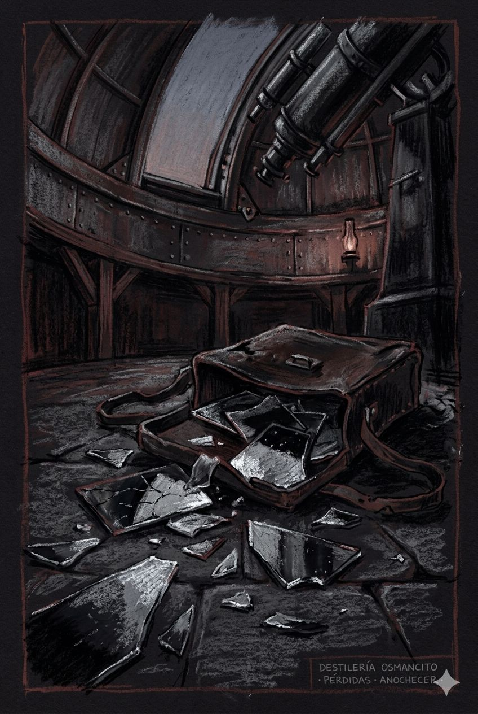
Este corpus no describe la pérdida de una civilización: describe la pérdida de la pérdida misma. No hay duelo porque para que haya duelo tiene que haber alguien que reconozca lo que se fue, y el mecanismo del eclipse destruye exactamente esa capacidad de reconocimiento antes de que pueda ejercerse. Lo que desaparece en Anochecer no es el mundo —es la facultad de saber que el mundo desapareció. Eso es más brutal que cualquier apocalipsis que alguien pueda llorar.
[Inicio] — La posibilidad del trato
Tipo — metodológico.
Cómo ocurre — El corpus no la llama pérdida. Theremon propone el acuerdo: si el eclipse ocurre, no habrá artículo; si no ocurre, el ridículo recae en Theremon. El acuerdo se cierra. Y en el mismo momento en que se cierra, Aton mira a Gamma y sabe que el trato es irrelevante: si el eclipse ocurre no habrá nadie que lo lea, y si no ocurre la humillación importa menos que lo que acaba de ver en el cielo. La pérdida es la de la lógica del trato mismo —la suposición de que existe un mañana donde las consecuencias se cumplan.
Escala — pequeña en extensión, grande en implicación: es la primera grieta en el edificio de la causalidad normal. El corpus la abandona sin señalarla.
[Inicio] — Gamma
Tipo — personal / perceptivo.
Cómo ocurre — El corpus la llama: Aton sabe que nunca más verá a Gamma con ojos tranquilos. Es la única pérdida del corpus que un personaje reconoce en tiempo real y en silencio, sin decírsela a nadie. La mirada hacia la ventana y el giro que sigue no son un cambio de opinión sobre Theremon —son el instante en que Aton acepta lo que va a perder.
Escala — mediana en el corpus, enorme en lo que porta: es la única despedida del texto. Toda la civilización de Lagash va a arder y el corpus reserva su única despedida consciente para un sol que declina sobre el horizonte y que un hombre viejo mira sin testigos.
[Primer tercio] — La utilidad de Sheerin en el Refugio
Tipo — personal / social.
Cómo ocurre — El corpus no la llama pérdida: Sheerin la presenta como aritmética. No sirve en el Refugio, luego no está en el Refugio. La pérdida real —que Sheerin renuncia a su lugar entre los supervivientes— está sepultada bajo el humor con que la formula. Lo que desaparece no es solo un lugar seguro: es la posibilidad de que Sheerin continúe.
Escala — pequeña en extensión. Enorme en lo que revela: el psicólogo que más sabe sobre el mecanismo de la destrucción eligió no escapar de ella. La pérdida de la supervivencia de Sheerin es la pérdida que el corpus trata con más ligereza y que pesa más en retrospectiva.
[Primer tercio] — La posibilidad de la preparación
Tipo — intelectual / metodológico.
Cómo ocurre — El corpus la construye y la destruye en secuencia deliberada. Sheerin explica el mecanismo. Theremon hace el experimento de la habitación oscura y cree haber demostrado que puede resistir. La conclusión de Theremon —con una habitación a oscuras sí podríamos— es la pérdida formulada como certeza errónea. Lo que desaparece es la posibilidad de la preparación: el corpus la instala, la deja brillar un instante, y la extingue sin anuncio.
Escala — es la pérdida estructural central del primer tercio. Sin ella no hay tensión: si la preparación fuera posible, el corpus no tendría nada que demostrar.
[Primer tercio, narrado] — Los visitantes del Túnel del Misterio de Jonglor
Tipo — personal / colectivo.
Cómo ocurre — El corpus la narra como anécdota histórica: los que sobrevivieron el túnel se negaban a entrar en edificios cerrados. Los que no sobrevivieron, no se mencionan con nombre ni número. La pérdida ocurre en el pasado del corpus y no es llorada —es citada como evidencia.
Escala — pequeña en el corpus. Funciona como primer precedente de la pérdida mayor: la escala reducida del Túnel prefigura la escala total del eclipse. Los muertos del Túnel son el borrador de los muertos de Lagash.
[Segundo tercio] — Las placas fotográficas de Beenay
Tipo — intelectual / metodológico.
Cómo ocurre — El corpus no la llama pérdida. Latimer entra a la cúpula y sabotea parte de las placas. Beenay lo descubre y lo reduce. Lo que se pierde —parte del registro fotográfico del eclipse que debía preservarse para la próxima civilización— no es lamentado por nadie. El corpus lo trata como incidente de seguridad. Pero el propósito entero de la presencia de Beenay en la cúpula era ese registro. La pérdida parcial de las placas es la primera grieta en el plan de preservación.
Escala — mediana. Anticipa la pérdida total del registro que vendrá cuando Beenay, en el eclipse, desaparezca del corpus sin que sepamos si llegó a fotografiar algo.
[Segundo tercio] — La palabra de honor de Latimer
Tipo — metodológico / moral.
Cómo ocurre — El corpus la llama pérdida indirectamente: Latimer rompe su promesa. Pero lo que realmente desaparece no es la promesa —es la técnica de Sheerin. El psicólogo usó la teología del Culto como instrumento de control, y el instrumento falla. La pérdida es la de la eficacia del método: la razón que manipula la fe para contenerla resulta insuficiente cuando la fe tiene un imperativo más fuerte que cualquier argumento.
Escala — pequeña en extensión. Filosóficamente significativa: es la única instancia en el corpus donde la razón intenta usar la fe como herramienta y fracasa en el momento decisivo.
[Segundo tercio] — Saro City
Tipo — cultural / civilizatorio.
Cómo ocurre — El corpus no la llama pérdida. La anuncia Aton en una conversación privada con Sheerin: la ciudad es la ruina. Nada más. No hay descripción de lo que arde, no hay nombre de quien muere, no hay imagen de la ciudad antes de que comience a arder. Saro City desaparece como un dato en una conversación que inmediatamente se desvía hacia la pregunta de cuánto tiempo falta.
Escala — civilizatoria. Es la pérdida más grande del corpus y la que recibe menos atención. La distancia entre la escala de lo que se pierde y el espacio que el corpus le dedica es la decisión estética más brutal del texto.
[Final] — Beenay
Tipo — personal.
Cómo ocurre — El corpus no lo llama pérdida. Beenay da una orden con voz extraña en la oscuridad y luego desaparece del corpus. No sabemos si enloquece, si fotografió el eclipse antes de hacerlo, si está entre quienes Theremon ve correr. El corpus lo abandona sin ceremonia, sin línea final. Es la desaparición más limpia del texto: un personaje que el corpus deja de seguir sin despedida.
Escala — personal y metodológica simultáneamente. Beenay era el único que podía producir el registro fotográfico. Su desaparición sin confirmación es la pérdida del archivo visual del evento —la evidencia que la próxima civilización no tendrá o tendrá incompleta.
[Final] — La capacidad de hablar de Aton
Tipo — intelectual / personal / lingüístico.
Cómo ocurre — El corpus la muestra sin llamarla pérdida. Aton pasa de la sintaxis compleja y pedante que lo define desde la primera página a: Las Estrellas… todas las Estrellas… nada sabíamos… nunca supimos nada… la Oscuridad eterna eterna eterna… Lo que desaparece no es la voz —es la sintaxis que organiza la voz. Y con la sintaxis, la posibilidad de que Aton sea Aton.
Escala — personal en el corpus, filosófica en lo que representa: la desaparición del lenguaje como forma de estar en el mundo. La pérdida más precisa del texto, y la más exactamente observable: ocurre en tiempo real, en una sola cita.
[Final] — La cordura de Theremon
Tipo — personal / intelectual.
Cómo ocurre — El corpus la llama con extraordinaria precisión: Theremon sabe que se está volviendo loco mientras ocurre. Lo que desaparece no es la conciencia de golpe —se va en un intervalo de segundos que el corpus observa desde adentro. La pérdida incluye su propio testigo: Theremon pierde la razón y simultáneamente la usa por última vez para registrar que la está perdiendo.
Escala — personal y epistémica. Es la desaparición más detallada del corpus, la única que ocurre en primer plano y en tiempo lento. Concentra en un personaje lo que el eclipse produce a escala planetaria.
[Final, implícito] — El artículo de Theremon
Tipo — intelectual / metodológico.
Cómo ocurre — El corpus no lo llama pérdida. Theremon toma notas durante todo el corpus —es su oficio, su forma de estar presente. Esas notas son el artículo que nunca existirá porque no habrá periódico, no habrá lectores, no habrá Saro City donde publicarlo. El corpus menciona el acto de tomar notas y no comenta su futuro. La pérdida es la del conocimiento producido sin receptor: el artículo que documenta el fin de la civilización para una civilización que ya no puede leerlo.
Escala — pequeña en el corpus. Es la imagen más precisa de la tesis central: el conocimiento que continúa produciéndose cuando su razón de ser ha desaparecido.
[Estructural, no ubicada] — La memoria del ciclo anterior
Tipo — cultural / civilizatorio.
Cómo ocurre — El corpus no la llama pérdida porque no puede: nadie en Lagash la recuerda. Cada civilización destruida dejó archivos que la siguiente no puede leer porque la siguiente nace después del colapso, sin acceso a los archivos del ciclo anterior. La pérdida es estructural y total: cada civilización pierde la experiencia acumulada de las nueve que la precedieron. El Refugio intenta romper ese patrón —y el corpus no confirma que lo logre.
Escala — la pérdida más grande del corpus. Nueve civilizaciones completas, con toda su ciencia, arte, lengua y conocimiento, reducidas a capas de ceniza que los arqueólogos del décimo ciclo miden como evidencia. No son lamentadas. Son datadas.
Pérdidas personales — 4: Gamma (Aton), Sheerin (su supervivencia), la cordura de Theremon, Beenay (su desaparición).
Pérdidas intelectuales / metodológicas — 5: la posibilidad de la preparación, las placas de Beenay, la palabra de Latimer como método, el artículo de Theremon, la sintaxis de Aton.
Pérdidas culturales / civilizatorias — 3: los visitantes del Túnel (precedente), Saro City, la memoria del ciclo anterior.
Pérdidas que el corpus no llama pérdidas — 9 de 13. La mayoría. El corpus nombra directamente como pérdida solo la mirada de Aton hacia Gamma, la rotura de la palabra de Latimer, y la locura de Theremon. Todo lo demás lo carga sin nombrarlo.
El tipo dominante — intelectual / metodológico. Las pérdidas más numerosas son las del conocimiento y sus instrumentos: la preparación que no funciona, el registro que no se completa, el artículo que nadie leerá, el lenguaje que se desintegra, el método que falla. El corpus que más claramente defiende el valor de la razón es el corpus que más sistemáticamente destruye sus herramientas.
Las pérdidas no se distribuyen de forma pareja. Siguen una progresión con tres momentos:
Fase de instalación (primer tercio): las pérdidas son pequeñas, casi invisibles, y metodológicas. Lo que se pierde no es todavía nada concreto: es la posibilidad de que el conocimiento proteja, la posibilidad de que la preparación funcione. Son pérdidas abstractas que el corpus presenta como afirmaciones transitorias.
Fase de aceleración (segundo tercio): las pérdidas escalan en tamaño y concreción. Ya no son posibilidades —son hechos: las placas saboteadas, la palabra rota, la ciudad ardiendo. El corpus empieza a perder cosas que pueden nombrarse y contarse.
Fase de colapso (final): las pérdidas ocurren simultáneamente y en cascada. Beenay desaparece, Aton pierde el lenguaje, Theremon pierde la razón, la ciudad arde. En el espacio de pocas páginas el corpus pierde más que en todo lo anterior. Y lo hace sin tiempo para registrarlo: las pérdidas del final no tienen el espacio que tuvieron las del primer tercio.
La asimetría decisiva: las pérdidas más grandes —Saro City, la memoria del ciclo, la sintaxis de Aton— reciben el menor espacio. Las pérdidas más pequeñas —el trato inicial, el experimento de la habitación— reciben el mayor desarrollo. El corpus invierte la proporción entre la escala de la pérdida y la atención que le dedica. Esa inversión no es accidente: es la arquitectura del texto demostrando que la razón puede procesar lo pequeño con detalle y solo puede mencionar lo inconmensurable.
Las pérdidas personales, culturales e intelectuales no siguen el mismo ritmo: las personales son las últimas en ocurrir (Theremon enloquece después de que la ciudad ya arde). Las civilizatorias empiezan antes (Saro City arde mientras los personajes todavía razonan). Las intelectuales están presentes desde el inicio y continúan hasta el final. La inteligencia es lo primero que empieza a perderse y lo último que termina de perderse.
Cuando se ven todas las desapariciones juntas, emerge una proposición que el corpus nunca formula:
Lo que el corpus pierde en mayor cantidad y con mayor sistematicidad no son vidas ni ciudades —son instrumentos del conocimiento.
Las placas fotográficas, el artículo, la sintaxis de Aton, el método de Sheerin, la promesa como herramienta de control, la preparación como concepto: el corpus destruye los medios de producción del conocimiento con más precisión y más detalle que cualquier otra cosa. Cinco de las trece pérdidas inventariadas son pérdidas de instrumentos epistémicos. Y esas cinco son las más distribuidas en el tiempo —acompañan el corpus de principio a fin.
Lo que eso produce, visto en conjunto: el corpus no habla del fin del mundo. Habla del fin de la posibilidad de registrar el fin del mundo. La catástrofe real no es el eclipse —es que después del eclipse nadie podrá documentar lo que ocurrió con suficiente precisión para que la próxima civilización entienda qué le pasó a la anterior. Los archivos del Refugio son el intento de romper ese patrón. El corpus no confirma que lo logren.
Y ahí está la conclusión que el corpus no quería producir: que la tragedia de Lagash no es que no supieran lo que venía. Es que lo sabían, lo registraron, lo predijeron con exactitud milimétrica —y de todas formas el registro se pierde, el predictor enloquece, y el artículo que documentó todo queda sin lector. La pérdida más profunda no es la razón: es la posibilidad de transmitirla.
El corpus defiende el conocimiento con más fuerza que ninguna otra cosa. Y lo que demuestra, cuando se cuentan sus pérdidas, es que el conocimiento es exactamente lo primero que el universo destruye cuando cambia de escala.
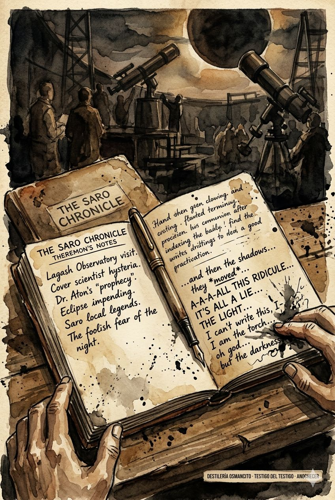
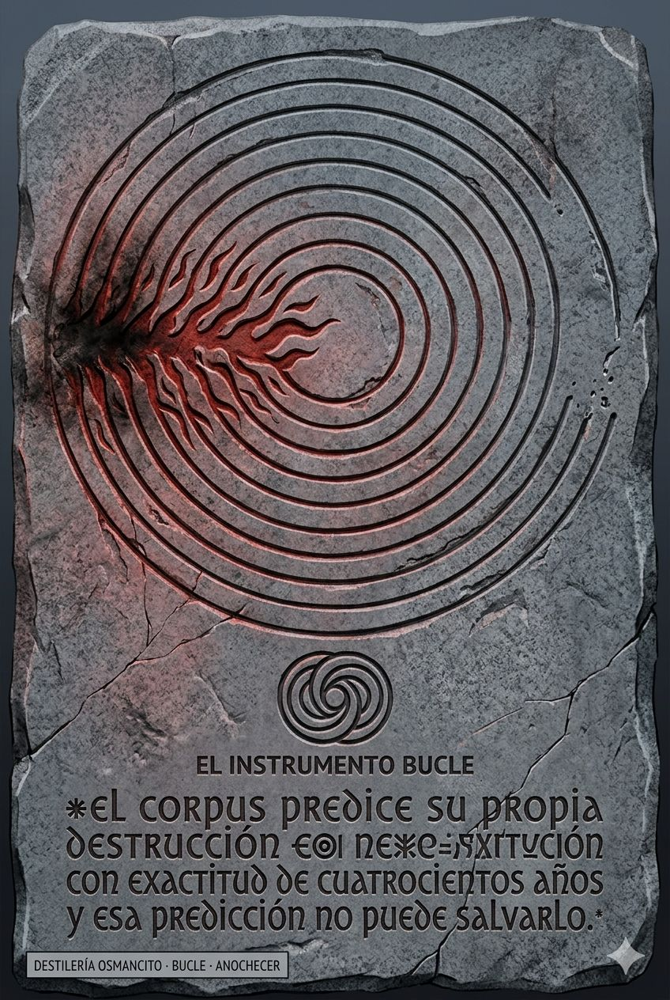
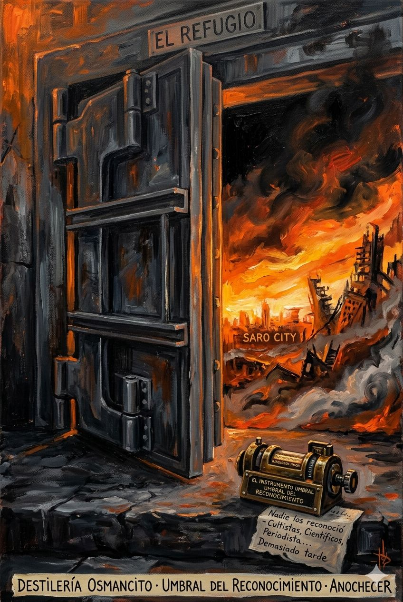
Hay en este corpus al menos cuatro entidades cuya existencia o valor depende del reconocimiento ajeno: la predicción científica (que necesita ser reconocida como verdadera por el mundo que va a destruirse), la fe del Culto (que necesita ser reconocida como equivalente a la ciencia en su acceso a la verdad), Theremon como testigo (que necesita ser reconocido como tal para que su presencia tenga sentido), y la tesis central del corpus —que el conocimiento no protege— que necesita ser reconocida por el lector para que el corpus cumpla su propósito. El instrumento procede.
El reconocimiento que este corpus espera con más urgencia no es el que ocurre entre sus personajes: es el que el lector otorga o niega a su tesis central. El cuento entero es una demostración construida para ser reconocida como verdadera por quien lo lee, y toda su arquitectura —la instrucción de Sheerin, el experimento de la habitación, la cuenta regresiva— existe para producir ese reconocimiento en el único receptor que todavía puede recibirlo. El mundo de Lagash ya no puede reconocer nada. El lector sí. El corpus le delega esa función sin decírselo.
[Inicio] — Theremon reconocido por Aton como testigo válido
Tipo — intelectual / institucional.
Forma — Aton gira desde la ventana y dice: No, aguarde, venga aquí. No es una concesión verbal elaborada. Es un gesto que invierte la expulsión que precedió a ese mismo giro. El reconocimiento ocurre sin palabras sobre el reconocimiento.
Condición — La mirada hacia Gamma. Aton reconoce a Theremon no porque el argumento del periodista lo haya convencido sino porque en el instante en que sabe que ya no verá a Gamma con ojos tranquilos, el trato deja de importarle y la presencia de cualquier testigo humano se vuelve equivalente a cualquier otra. El reconocimiento de Theremon es el subproducto de la aceptación de la catástrofe por parte de Aton, no de la evaluación de Theremon como sujeto.
Costo — Para Theremon: ninguno declarado. Para Aton: la admisión implícita de que el futuro ya no tiene la forma en que el trato tendría consecuencias.
Suficiencia — El corpus no lo dice. Theremon obtiene lo que quería —acceso, presencia, el testigo de ojos propios— y no comenta si es suficiente. La suficiencia es un problema que el eclipse va a disolver antes de que pueda plantearse.
[Inicio, paralelo] — La ciencia reconocida por el Culto como rival
Tipo — intelectual / institucional.
Forma — Latimer, al ser interrogado, declara que el Culto tiene más razones para odiar a los científicos que para odiar a nadie: porque los científicos convirtieron lo sagrado en fenómeno natural. El reconocimiento es negativo —es el reconocimiento de la amenaza, no de la equivalencia— pero es reconocimiento. El Culto sabe exactamente qué hace la ciencia y lo considera suficientemente peligroso como para infiltrarse en el Observatorio para sabotearlo.
Condición — La amenaza. El Culto reconoce a la ciencia solo porque la ciencia está a punto de demostrar lo mismo que el Culto predijo, por una vía que el Culto no puede controlar.
Costo — Para el Culto: reconocer a la ciencia como amenaza equivale a admitir que la ciencia puede decir verdades sobre lo que el Culto considera su dominio exclusivo.
Suficiencia — Insuficiente en ambas direcciones. El corpus nunca produce el reconocimiento inverso: la ciencia no reconoce al Culto como sistema de acceso equivalente a la verdad, aunque eso sea exactamente lo que sus propios datos demuestran.
[Primer tercio] — Sheerin reconocido por Theremon como autoridad
Tipo — intelectual.
Forma — Theremon elige preguntarle a Sheerin en lugar de a Aton. El reconocimiento es una elección de interlocutor: De acuerdo; se lo pregunto a usted. No hay declaración de autoridad —hay delegación de la pregunta.
Condición — La accesibilidad del lenguaje. Sheerin ofrece explicarlo en el más profano de los lenguajes. Theremon lo reconoce como autoridad porque Sheerin promete no excluirlo.
Costo — Para Sheerin: ninguno. Para Theremon: ceder el escepticismo armado que traía. Cada pregunta que hace a Sheerin es una concesión parcial de que el tema merece ser explicado.
Suficiencia — Funcionalmente suficiente. Sheerin explica; Theremon entiende; el corpus avanza. Pero el reconocimiento de Sheerin como autoridad produce el efecto contrario al que Theremon anticipaba: en lugar de desmontar la predicción, la hace más aterradora.
[Primer tercio] — Theremon reconocido por Sheerin como resistente (erróneamente)
Tipo — intelectual / corporal.
Forma — Después del experimento de la habitación oscura, Theremon concluye que puede resistir: con una habitación a oscuras sí podríamos. Sheerin no lo contradice de frente. El reconocimiento que Theremon se otorga a sí mismo —soy capaz de manejar la oscuridad— es tácitamente aceptado por Sheerin, que sabe que es falso y no lo dice.
Condición — El experimento fallido como prueba. Theremon interpreta la evidencia correctamente dentro de la escala equivocada.
Costo — Para Theremon: la certeza errónea que ese auto-reconocimiento produce lo hace más vulnerable en el momento del eclipse. El reconocimiento que se da a sí mismo es exactamente lo que lo deja sin defensas.
Suficiencia — Es el reconocimiento más suficiente para el reconocido y el más falso en sus fundamentos. El corpus no lo corrige en ese momento. Lo corrige el eclipse.
[Segundo tercio] — La fe de Latimer reconocida por Sheerin como palanca
Tipo — intelectual / instrumental.
Forma — Sheerin usa la teología del Culto para extraer la palabra de honor de Latimer: si lo encierran, no verá las Estrellas y perderá el alma. El reconocimiento de la fe de Latimer ocurre solo en la medida en que esa fe puede ser usada como herramienta de control. Sheerin no reconoce al Culto como sistema equivalente —lo reconoce como sistema explotable.
Condición — La coherencia interna del credo del Culto. Sheerin puede usar la fe de Latimer porque esa fe es suficientemente sistemática para tener consecuencias lógicas que Sheerin puede anticipar.
Costo — Para Latimer: ser reconocido solo como creyente manipulable, no como portador de una verdad equivalente a la de los científicos.
Suficiencia — El reconocimiento funciona en el corto plazo —Latimer da su palabra— y fracasa en el largo: en el momento del eclipse, el imperativo de ver las Estrellas supera la promesa que la manipulación había producido.
[Segundo tercio] — La predicción científica reconocida por el mundo como verdadera (negada)
Tipo — intelectual / social / masivo.
Forma — Ausencia. El corpus establece que dos meses de intentos de preparación pública han fracasado: la prensa ridiculizó el esfuerzo, la población no evacuó, Theremon pasó ese tiempo escribiendo columnas de burla. La predicción científica —que el eclipse destruirá la civilización— no recibe reconocimiento público antes de que ocurra.
Condición — El reconocimiento solo llega cuando el evento que la predicción anunció ya está ocurriendo. Es el reconocimiento imposible: para cuando es evidente que la predicción era verdadera, ya no hay forma de actuar sobre ese reconocimiento.
Costo — Para los científicos: dos meses de trabajo de preparación completamente inútil en términos de efecto sobre la población.
Suficiencia — No llega a ocurrir en ningún sentido útil. El corpus no muestra ningún momento en que alguien fuera del Observatorio reconozca la predicción como verdadera antes de que sea demasiado tarde para hacer algo con ese reconocimiento.
[Final] — Aton reconocido por nadie en su colapso
Tipo — personal / afectivo.
Forma — Ausencia. Aton llora como un niño en la oscuridad y no hay nadie que lo atienda. El corpus lo menciona de pasada: Aton lloraba en algún lugar de la sala. No hay un personaje que vaya hacia él, que lo llame por su nombre, que reconozca que el director —la figura de mayor autoridad del corpus— ha dejado de existir como tal. El colapso de Aton ocurre sin testigo.
Condición — La oscuridad total, que hace imposible el reconocimiento físico. Pero también: la ausencia de vida interior de Aton a lo largo del corpus, que dejó sin preparar al lector y a los personajes para reconocer su vulnerabilidad.
Costo — Para Aton: morir (o enloquecer) como Aton 77 sin que nadie pueda decir que lo fue.
Suficiencia — El reconocimiento no ocurre.
[Final] — Theremon reconocido por sí mismo como el que enloquece
Tipo — intelectual / personal.
Forma — El corpus lo describe con precisión extraordinaria: Theremon sabe que se está volviendo loco mientras ocurre. Es el único acto de auto-reconocimiento del corpus que llega a tiempo —en el sentido de que ocurre mientras el sujeto todavía puede reconocer— y que al mismo tiempo es completamente inútil como información.
Condición — La razón que todavía funciona en el intervalo entre el inicio de la locura y su consumación. Ese intervalo es la condición: existe, pero no tiene duración suficiente para que el reconocimiento produzca nada.
Costo — Es el reconocimiento más costoso del corpus: saber que se pierde la razón con la razón suficiente para saberlo.
Suficiencia — Suficiente como conocimiento. Completamente insuficiente como protección o como posibilidad de acción.
[Estructural] — El Culto reconocido por la ciencia como antecesor (negado)
Tipo — intelectual / epistémico.
Forma — Ausencia total. En ningún momento del corpus un científico reconoce que el Culto llegó a la misma verdad por un camino diferente. Sheerin cita el Libro de las Revelaciones como fuente de datos —la idea central puede extraerse— pero no como sistema epistemológico equivalente. La convergencia de predicciones nunca se formula como convergencia de métodos.
Condición — La jerarquía epistemológica del corpus: la ciencia puede usar los datos del Culto, pero no puede reconocer al Culto como productor de conocimiento legítimo en sus propios términos.
Costo — Para el corpus: pierde su hallazgo más potente. Si la ciencia y la fe producen la misma predicción por caminos distintos, eso es evidencia de algo sobre la naturaleza del conocimiento mismo. El corpus tiene esa evidencia y no la mira.
Suficiencia — El no-reconocimiento es completo. Nunca ocurre.
Intelectuales — 6 (el más numeroso por amplio margen): Theremon como testigo, la ciencia como rival del Culto, Sheerin como autoridad, Theremon como resistente, la fe de Latimer como palanca, el Culto como antecesor negado.
Personales / afectivos — 2: el colapso de Aton sin testigo, el auto-reconocimiento de Theremon.
Sociales / masivos — 1: la predicción científica negada por el mundo.
La distribución inesperada: en un corpus apocalíptico —donde lo que se pierde es la civilización completa— el sistema de reconocimiento opera casi exclusivamente en el registro intelectual. No hay reconocimientos afectivos que funcionen. El único afecto en el sistema de reconocimiento es el llanto de Aton, que no recibe reconocimiento de nadie. El corpus trata el reconocimiento como problema epistémico, no como problema humano. Eso replica en su sistema de reconocimiento exactamente lo que replica en todo lo demás: la primacía de la razón como único registro válido, y la consecuente incapacidad de manejar lo que la razón no alcanza.
Umbral declarado — El corpus no declara explícitamente las condiciones del reconocimiento. No hay ley, institución ni norma que el texto nombre como requisito.
Umbral real — Lo que el corpus muestra en la práctica: el reconocimiento llega cuando el reconocido puede demostrar que su conocimiento es correcto en los términos del sistema que reconoce. La ciencia reconoce a Theremon cuando Theremon acepta las reglas del trato científico. Sheerin reconoce la fe de Latimer solo cuando puede formularla en términos de consecuencias lógicas. La predicción científica sería reconocida por el mundo si el mundo pudiera verificarla —pero la verificación y la destrucción son simultáneas.
El umbral real del corpus es la verificabilidad en tiempo útil. El reconocimiento requiere que la verdad de lo reconocido pueda ser comprobada antes de que la comprobación sea irrelevante. Ese umbral hace imposible el reconocimiento más importante del corpus: la predicción científica solo puede verificarse cuando el eclipse ya está ocurriendo, y en ese momento el reconocimiento no puede producir acción.
El precio no negociable — La simultaneidad entre verificación y destrucción. En este corpus, el reconocimiento que más importa —que la predicción era verdadera, que la preparación era necesaria, que el saber no protege— llega siempre en el mismo instante en que ya no puede usarse. El corpus cobra siempre ese precio: el reconocimiento correcto llega exactamente cuando no puede cambiarse nada.
Quién otorga — En el corpus hay una sola figura con poder real de reconocimiento: la realidad, representada por el eclipse. Todos los reconocimientos entre personajes son provisionales y contingentes. El único reconocimiento que el corpus trata como definitivo es el que el eclipse otorga o niega: confirmó la predicción científica, confirmó la predicción del Culto, negó la resistencia de Theremon, negó el método de Sheerin. El eclipse es el único reconocedor soberano del corpus.
Quién espera — La predicción científica (dos meses esperando ser reconocida como verdadera). El Culto (milenios esperando ser reconocido como portador de una verdad real). Theremon (esperando ser reconocido como testigo válido del evento que ridiculizó).
La brecha — Entre lo que los científicos merecen —reconocimiento público como portadores de una predicción correcta— y lo que reciben —burla, ridículo, indiferencia. Esa brecha es el motor narrativo del primer tercio aunque el corpus no la llame así. La urgencia de Aton, la amargura de sus respuestas a Theremon, el trabajo inútil de dos meses: todo es la acumulación de un reconocimiento que no llega.
La inversión — Ocurre, pero demasiado tarde y en el registro equivocado. En el momento del eclipse, la realidad reconoce la predicción como correcta —pero Theremon, que era el vector de ese reconocimiento posible, ya está enloqueciendo. La inversión existe: el escéptico que llegó a refutar acaba siendo el único testigo de la verdad que rechazó. Pero ocurre en el intervalo entre la lucidez y la locura, y no produce ningún reconocimiento articulable.
Sheerin eligiendo quedarse. No es un reconocimiento entre personajes —es un reconocimiento de Sheerin hacia el evento mismo. Quedarse donde sabe que enloquecerá o morirá es un acto de reconocimiento de la magnitud de lo que viene: una forma de decir, sin palabras, esto merece ser visto aunque me destruya. El corpus lo presenta como aritmética de utilidad marginal. Es también la reverencia más profunda del texto.
Theremon tomando notas. El acto de documentar lo que ocurre mientras ocurre es un reconocimiento de que el evento merece registro —de que tiene valor suficiente para ser transmitido, aunque el receptor ya no exista. El corpus no llama a esto reconocimiento. Es el gesto de alguien que reconoce la importancia de lo que ve con el único instrumento que tiene disponible: su oficio.
La antorcha como respuesta de Sheerin. Cuando Sheerin enciende la antorcha y dice que nunca antes había notado cuán maravilloso es el amarillo, está reconociendo —por primera vez en su vida, en el último momento posible— el valor de la luz ordinaria. No como argumento sino como experiencia. Es el único reconocimiento afectivo genuino del corpus, y ocurre sobre un objeto, no sobre una persona.
La predicción científica.
Cuánto tardó — Dos mil cincuenta y nueve años desde el ciclo anterior, y dos meses desde que los científicos intentaron hacerla circular. El reconocimiento llega en el momento del eclipse.
Qué cambió mientras tanto — La civilización entera. El conocimiento acumulado de Lagash en ese ciclo. Los científicos que la formularon, que en el momento del reconocimiento ya están enloqueciendo.
Si el reconocimiento que llegó es el mismo que se esperaba — No. Lo que los científicos esperaban era un reconocimiento previo al eclipse —el reconocimiento que permite la acción, la preparación, la posibilidad de mitigar. Lo que llegó fue el reconocimiento simultáneo al evento: la verificación como colapso. No es el mismo reconocimiento.
La pregunta que el corpus no puede responder — Si el reconocimiento que llegó —tarde, simultáneo a la destrucción— valió lo que costó. El corpus no intenta responderla. La evita porque responderla requeriría un narrador retrospectivo, y ese narrador no existe: la voz que podría decir si valió la pena ya enloqueció.
El experimento de la habitación oscura como reconocimiento. Theremon intenta que la oscuridad lo reconozca como resistente —quiere que el fenómeno le confirme que puede manejarlo. El fenómeno en escala reducida aparentemente lo confirma. El fenómeno en escala real lo desmiente. Lo que falló: el reconocimiento que el experimento otorgó era real dentro de la escala equivocada. No fue un reconocimiento falso —fue un reconocimiento verdadero de algo diferente de lo que Theremon creyó probar.
El experimento de Faro y Yimot. Dos hombres intentan producir el reconocimiento de que la preparación es posible. Construyen el entorno, se exponen al estímulo, esperan la respuesta. La respuesta: nada. El fenómeno no los reconoce como preparados porque el fenómeno requiere una escala que la simulación no puede alcanzar. Lo que falló: confundieron la reproducción del estímulo con la reproducción del fenómeno.
La palabra de honor de Latimer. Sheerin intenta producir un reconocimiento: que Latimer, como creyente coherente, reconozca que las consecuencias de violar su palabra son peores que las consecuencias de cumplirla. El reconocimiento funciona hasta que el imperativo del eclipse lo supera. Lo que falló: el reconocimiento que Sheerin produjo era condicional a que no hubiera un imperativo más fuerte. El eclipse era exactamente ese imperativo.
En este corpus el reconocimiento más importante destruye la posibilidad de acción.
Cuando el eclipse reconoce la predicción científica como correcta —la verifica con exactitud milimétrica— destruye simultáneamente la utilidad de ese reconocimiento. Ser reconocido como correcto en el momento del colapso equivale a no ser reconocido: el reconocimiento que llega cuando ya no puede producir cambio es funcionalmente idéntico a la negación.
Hay además una destrucción secundaria: el reconocimiento de Theremon como testigo —el único reconocimiento que funcionó según sus términos— destruye su posición de escepticismo. Para ser reconocido como testigo válido tiene que estar presente; para estar presente tiene que ver; para ver tiene que creer lo suficiente como para quedarse; y creer lo suficiente como para quedarse es exactamente lo que lo condena a ver las Estrellas. El reconocimiento como testigo requirió que abandonara la distancia que lo habría protegido. El corpus no dice esto. Lo demuestra.
¿Es el reconocimiento en este corpus una constatación o una concesión?
En su mayor parte, concesión. El corpus muestra repetidamente que los reconocimientos que ocurren entre personajes producen lo que reconocen: Theremon se vuelve testigo porque Aton lo reconoce como tal, no porque lo fuera antes. Sheerin se vuelve autoridad porque Theremon lo reconoce como tal, no porque Aton haya declarado esa autoridad. Solo el eclipse —el reconocedor soberano— opera como constatación pura: confirma lo que existía independientemente de que alguien lo confirmara.
La distinción importa: en un corpus que defiende la primacía de la razón, la mayoría de los reconocimientos son concesiones —son construcciones sociales, no descubrimientos. Solo la realidad física consta. Esa jerarquía es la epistemología del corpus en miniatura.
¿Puede el reconocido reconocerse a sí mismo en ausencia del reconocimiento ajeno?
El corpus muestra que sí, en un caso, y que ese caso destruye al reconocido: Theremon se reconoce como el que enloquece mientras enloquece. Es el único auto-reconocimiento válido del corpus, y es también el más inútil —llega cuando ya no puede producir nada. La respuesta del corpus es: el auto-reconocimiento es posible, pero solo en el intervalo entre la certeza y la destrucción de la mente que certifica. Es posible en el borde exacto donde ya no sirve.
¿Qué hace el corpus con el reconocimiento que no llegó a tiempo?
Lo usa como motor sin nombrarlo como tal. La amargura de Aton, la urgencia de Sheerin, la presencia de Theremon: todo emerge del reconocimiento que no llegó a tiempo —los dos meses de advertencias ignoradas. Pero el corpus no elabora ese no-reconocimiento como tragedia personal. Lo trata como condición neutra del entorno, como el tiempo hace con la nieve: ocurrió, produjo consecuencias, el texto avanza. Lo que el corpus no puede hacer es lamentarlo, porque lamentarlo requeriría adoptar la perspectiva de quien esperaba el reconocimiento, y el corpus opera demasiado cerca de la razón científica para permitirse ese punto de vista.
En este corpus, el reconocimiento es posible cuando la verdad de lo reconocido puede verificarse en tiempo útil; imposible cuando la verificación y la destrucción son simultáneas; y tiene el costo irreducible de que, para cuando la escala del evento permite el reconocimiento definitivo, el reconocedor ya no puede actuar sobre lo que reconoce, y el reconocido ya no puede recibirlo.
Para Apolo — La arquitectura de cámara de compresión del corpus —su movimiento hacia adentro, su contracción espacial progresiva— es también la arquitectura de un sistema de reconocimiento que colapsa hacia adentro. El corpus se cierra sobre sí mismo de la misma forma en que el reconocimiento se cierra sobre sí mismo: al final, el único reconocedor que queda es el eclipse, y el único reconocido es el propio mecanismo que el corpus predijo. La estructura no puede explicarse sin saber que opera en un sistema donde el reconocimiento externo es imposible desde el principio.
Para Dioniso — Las zonas de mayor pulso en el corpus coinciden con los momentos de reconocimiento fallido o diferido: la habitación oscura donde Theremon cree probar su resistencia, el encendido de la antorcha donde Sheerin reconoce el amarillo por primera vez, el intervalo donde Theremon se reconoce enloqueciendo. El latido no sabe que está esperando reconocimiento —está esperando verificación. Y la verificación, en este corpus, llega siempre en el momento en que ya no puede ser recibida.
Para M10 — Pérdidas — Lo que M10 inventarió como pérdida de instrumentos epistémicos tiene una capa adicional: cada instrumento epistémico que se pierde era también un instrumento de reconocimiento. Las placas de Beenay eran el registro que permitiría a la próxima civilización reconocer lo que ocurrió. El artículo de Theremon era el reconocimiento público del evento para una audiencia que ya no existe. La sintaxis de Aton era el sistema que le permitía reconocer y ser reconocido como Aton 77. Lo que se pierde con cada instrumento no es solo conocimiento: es la posibilidad de que lo que ocurrió sea reconocido por alguien que llegue después.
Para M12 — Bucle — El sistema de reconocimiento del corpus aplicado al corpus como objeto produce un resultado preciso: el corpus intenta ser reconocido como demostración verdadera de que el conocimiento no protege. Para ser reconocido como tal, necesita que el lector verifique su tesis en tiempo útil —antes de que el corpus termine. El corpus construye toda su arquitectura para producir ese reconocimiento en el lector. Y si lo logra, replica exactamente el patrón que describe: el reconocimiento llega justo cuando ya no hay nada que hacer con él. El lector que reconoce la tesis del corpus como verdadera está en la posición de Theremon: entiende, demasiado tarde, algo que ya ocurrió.
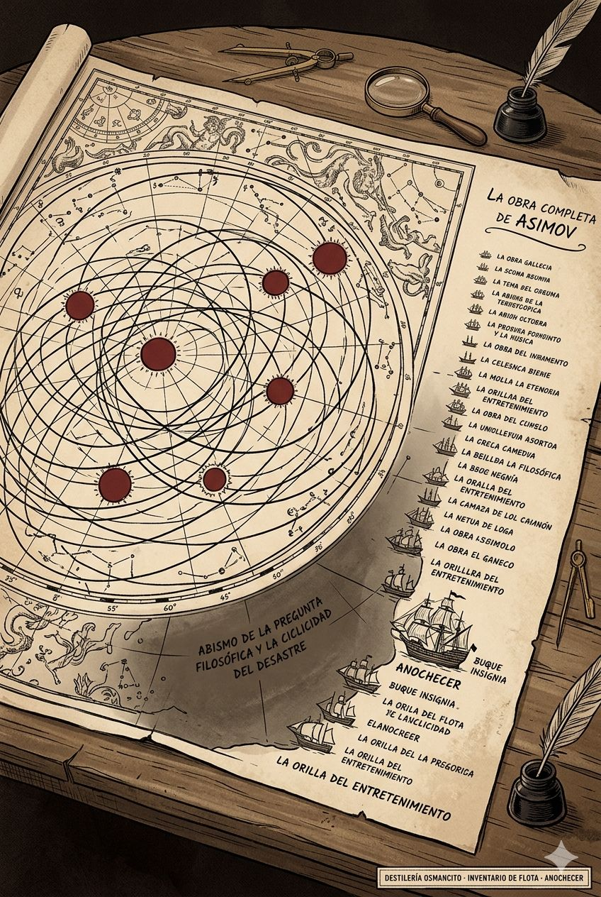
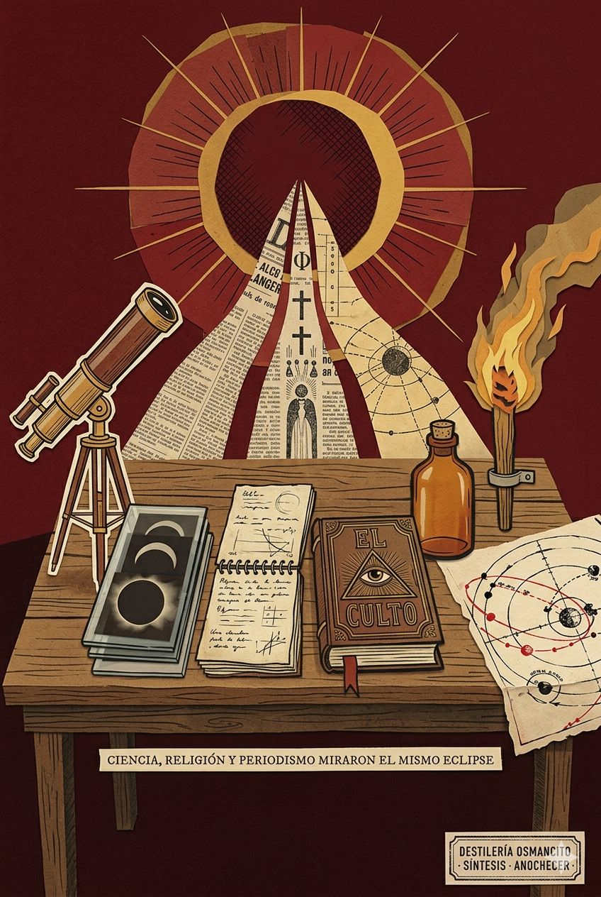
Hay una pregunta que este corpus lleva desde la primera frase y que ninguno de los diez instrumentos ejecutados sobre él formuló directamente: ¿para quién se escribe cuando el receptor ya no existe?
Theremon toma notas. Beenay fotografía. Aton guarda archivos en el Refugio. El corpus entero es un acto de producción destinado a un receptor incierto —o ya destruido. Y el análisis que ahora se ve como unidad es exactamente eso: un conjunto de instrumentos que produjeron conocimiento sobre un corpus que habla, en su núcleo más profundo, de la imposibilidad de transmitir conocimiento. Hay algo en esa coincidencia que no es irónica. Es estructural.
Lo que el análisis reveló, visto desde aquí, es que Anochecer no es un relato sobre el fin del mundo. Es un relato sobre el fin de la posibilidad de registrar el fin del mundo. La civilización de Lagash colapsa, sí. Pero lo que el corpus destruye con más precisión y más sistematicidad —y esto lo vio Pérdidas con claridad que ningún instrumento anterior alcanzó— son los instrumentos del conocimiento: las placas fotográficas, el artículo, la sintaxis de Aton, el método de Sheerin, la promesa como herramienta. Lo biológico es la consecuencia. Lo epistémico es el núcleo.
Dioniso encontró la inversión que el corpus porta sin saberlo: no enloquece la oscuridad sino los treinta mil soles, el exceso de realidad, la plenitud inabarcable. Hermes encontró el suelo histórico que esa inversión no podía ver: 1941, Brooklyn, un escritor de veintiún años que lee periódicos sobre Europa mientras escribe sobre un planeta de seis soles. El Umbral del Reconocimiento encontró al reconocedor soberano: no Aton, no Sheerin, no la ciencia ni el Culto —el eclipse, que otorga el único reconocimiento definitivo del corpus en el momento exacto en que ese reconocimiento ya no puede producir nada.
Estos tres hallazgos, vistos juntos, forman algo que ninguno de los tres vio solo.
La inversión de Dioniso —demasiada realidad, no ausencia de ella— explica por qué el eclipse es el reconocedor soberano: no es la oscuridad lo que destruye la razón sino la irrupción de treinta mil soles nunca vistos, es decir, una cantidad de verdad para la que no existe aparato receptivo. El reconocimiento definitivo que el eclipse otorga es también un exceso de reconocimiento: el universo reconoce a los habitantes de Lagash mostrándoles todo lo que existe, y eso los destruye. El reconocimiento pleno mata.
Y ese exceso de reconocimiento —que mata— es exactamente lo que el corpus de 1941 no podía decir sobre Europa, pero que Hermes detectó como campo gravitacional invisible: lo que destruye a las comunidades judías en ese momento no es la oscuridad ni la invisibilidad sino la plena visibilidad de lo que son para el sistema que las destruye. La lógica del Holocausto no es la del olvido —es la del registro exhaustivo, la categorización, la documentación. El exceso de reconocimiento como mecanismo de destrucción. Asimov lo escribe sin saberlo, o sin poder decirlo de otra forma.
Lo que emerge de ver eso junto: Anochecer es un cuento sobre el exceso de reconocimiento como forma de destrucción. No sobre la oscuridad. Sobre la luz que mata.
Eso no invalida ningún análisis anterior. Contradice la descripción superficial del corpus —un cuento sobre el miedo a la oscuridad— y confirma la inversión que Dioniso encontró. La contradicción no se resuelve: se nombra como lo que es. El corpus creía escribir sobre la oscuridad. Escribió sobre lo contrario. Y esa distancia entre lo que el texto creyó hacer y lo que hizo es la medida exacta de su profundidad.
Dónde vive la densidad real
No en el eclipse. La densidad más alta del corpus vive en el espacio entre Sheerin y Theremon: las dos horas de conversación en la sala de las cortinas rojas, con la botella escondida bajo la ventana, mientras el mundo cuenta sus últimas horas. Esa conversación es el corpus. Todo lo demás —el eclipse, la locura, la ciudad ardiendo— es la consecuencia de lo que esa conversación instala.
La segunda zona de densidad: el experimento de la habitación oscura. Dos minutos de penumbra roja que contienen la tesis completa del corpus en miniatura. No el eclipse —el ensayo fallido del eclipse, donde el personaje saca la conclusión equivocada con toda la certeza del que acaba de probarse algo.
Las zonas de alta y baja presión
Alta presión: la instrucción de Sheerin (presión argumental sostenida, acumulativa); el momento en que Beta mengua (primer quiebre físico en el escepticismo de Theremon); el encendido de la antorcha y el amarillo de Sheerin (convergencia de argumento y experiencia en un solo instante); el intervalo de la locura lúcida de Theremon (la razón observando su propia destrucción).
Baja presión: la escena del Cultista infiltrado (funciona como retardo, no como tensión genuina); la mención de Faro y Yimot (anécdota filosóficamente central, narrativamente subeditada); el Refugio (mencionado, nunca habitado por el corpus).
La asimetría decisiva: las zonas de baja presión contienen los hallazgos filosóficamente más densos. El experimento de Faro y Yimot —que Batimetría identificó como el núcleo filosófico sepultado— recibe menos espacio que cualquier intercambio de Sheerin con Theremon. La proporción entre importancia filosófica y extensión narrativa está sistemáticamente invertida en este corpus.
Los ejes de tensión que atraviesan el corpus entero
Saber / resistir: el eje declarado. La ciencia sabe lo que viene y no puede resistirlo. Es el eje visible, el que Asimov construyó conscientemente.
Registrar / transmitir: el eje más profundo. Cada acto de registro en el corpus —las notas de Theremon, las placas de Beenay, los archivos del Refugio— existe en tensión con la imposibilidad de que ese registro llegue a alguien que pueda usarlo. Es el eje que Pérdidas reveló y que ningún otro instrumento había nombrado con esa claridad.
Reconocer / destruir: el eje que el Umbral del Reconocimiento descubrió. El reconocimiento pleno —la verificación completa de la verdad— es simultáneo a la destrucción. En este corpus no hay reconocimiento que no cueste exactamente lo que vale.
Demostrar / sentir: el eje posicional que Hermes identificó. El corpus demuestra más de lo que siente porque el escritor de veintiún años, en la posición de outsider doble, no puede permitirse que la emoción falle públicamente. La razón como armadura. La demostración como forma de protección.
El territorio que el corpus bordea sin cruzar
El Refugio. El corpus construye un espacio de supervivencia, lo llena de personas, lo menciona repetidamente —y nunca entra. El interior del Refugio durante el eclipse es el territorio más cercano al borde del corpus y más completamente ignorado por él. Lo que hay ahí dentro —la experiencia de quien resiste, no de quien colapsa— es la única historia que el corpus no cuenta y que cambiaría fundamentalmente su temperatura si existiera.
La historia de las nueve civilizaciones anteriores. El corpus las menciona como estratigrafía —nueve capas de ceniza bajo los cimientos— y no vuelve. Lo que esas civilizaciones fueron antes de ser ceniza: ausente. El corpus necesita que el pasado sea dato, no historia, para que la catástrofe presente mantenga el peso de lo singular.
La diferencia entre la locura de un científico y la locura de un creyente. Latimer, que esperaba las Estrellas, enloquece igual que Aton, que las temía. El corpus no entra ahí. Si lo hubiera hecho, habría tenido que preguntarse qué distingue la fe del conocimiento cuando ambos producen el mismo colapso.
Hay una contradicción entre lo que dos instrumentos declararon con certeza que no puede resolverse y que por esa razón es el hallazgo más valioso del conjunto.
Apolo declaró que el imán central del corpus es la incompatibilidad: la mente humana es incompatible con el universo que habita, y esa incompatibilidad es arquitectónica, no moral. El universo no es hostil —simplemente excede la escala del cerebro que intenta contenerlo.
Dioniso declaró que la inversión central del corpus —lo que el texto hace en lugar de lo que cree hacer— es que no enloquece la oscuridad sino los treinta mil soles: demasiada realidad, no su ausencia. El texto creyó escribir sobre el miedo al vacío y escribió sobre el miedo a la plenitud.
Vistos juntos: si el imán es la incompatibilidad y la inversión es que destruye el exceso de realidad (no su ausencia), entonces el corpus propone algo que ninguno de los dos instrumentos formuló: que la incompatibilidad entre la mente y el universo no funciona en la dirección que el corpus parece argumentar.
El corpus argumenta que la mente colapsa ante lo que la excede. Pero lo que muestra es que la mente colapsa ante lo que la llena por completo. La incompatibilidad no es entre la pequeñez de la mente y la vastedad del universo —es entre el aparato perceptivo de una especie y la cantidad de verdad que ese universo puede mostrarle de golpe. No es que el universo sea demasiado grande. Es que el universo es demasiado presente.
Esa distinción —incompatibilidad de escala vs. incompatibilidad de densidad— no la vio ningún instrumento. Apolo midió la escala. Dioniso vio la inversión. Ninguno nombró lo que emerge entre las dos: que el corpus propone no la vastedad como amenaza sino la presencia total como destrucción.
Treinta mil soles visibles de golpe no son demasiado grandes. Son demasiados a la vez. La locura no la produce el tamaño del universo —la produce su simultaneidad. El universo de Lagash no es más grande que el de la Tierra: tiene más soles visibles en el mismo cielo en el mismo instante. La amenaza es la concurrencia, no la dimensión.
Eso tiene una consecuencia filosófica que el corpus porta sin saber que la porta: el umbral de la razón no es de escala —es de densidad de información simultánea. Lo que destruye a los habitantes de Lagash no es lo que no pueden imaginar (la oscuridad) sino lo que no pueden procesar (treinta mil señales visuales inéditas al mismo tiempo). La mente colapsa no ante lo desconocido sino ante el exceso de lo conocible.
Y eso —la densidad de lo real como límite de la razón, no su magnitud— es la proposición más original de este corpus y la que el corpus nunca formuló.
«Nada sabíamos»
Una sala de observatorio desierta vista desde afuera, a través de una ventana circular: adentro, las llamas de varias antorchas dobladas todas en la misma dirección, como si algo invisible pasara por el interior. El cristal tiene huellas de manos en su cara exterior —varios pares, superpuestos, de tamaños distintos. No hay nadie adentro. En el horizonte, al fondo del encuadre, una franja de luz que no pertenece a ningún sol. Paleta: negro absoluto, ámbar de llama, naranja de brasa en el horizonte. Sin blancos. Sin azules. Grabado a tinta con aguatinta sobre papel negro. Relación de aspecto 2:3. Etiqueta discreta en esquina inferior: DESTILERÍA OSMANCITO · ANOCHECER · ASIMOV.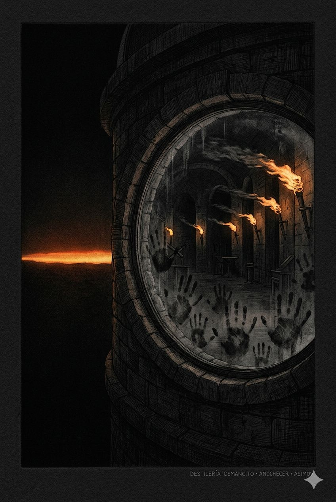
«Treinta mil soles»
Un cielo nocturno visto desde el interior de una cúpula abierta: el cielo completamente cubierto de puntos de luz, tan densos que apenas hay negro entre ellos —no el cielo estrellado convencional sino algo más próximo a una superficie luminosa con grietas oscuras. En el centro exacto del encuadre, un círculo negro perfecto: la luna tapando a Beta. La oscuridad está en el centro. La luz está en todas partes. Una figura de espaldas en el borde inferior de la cúpula, de pie, con los brazos ligeramente separados del cuerpo —no amenazada, sino detenida. Paleta: blanco hueso denso para las estrellas, negro para el eclipse central, gris ceniza para la figura. Sin colores cálidos. Xilografía sobre madera oscura. Relación de aspecto 2:3. Etiqueta discreta en esquina inferior: DESTILERÍA OSMANCITO · ANOCHECER · ASIMOV.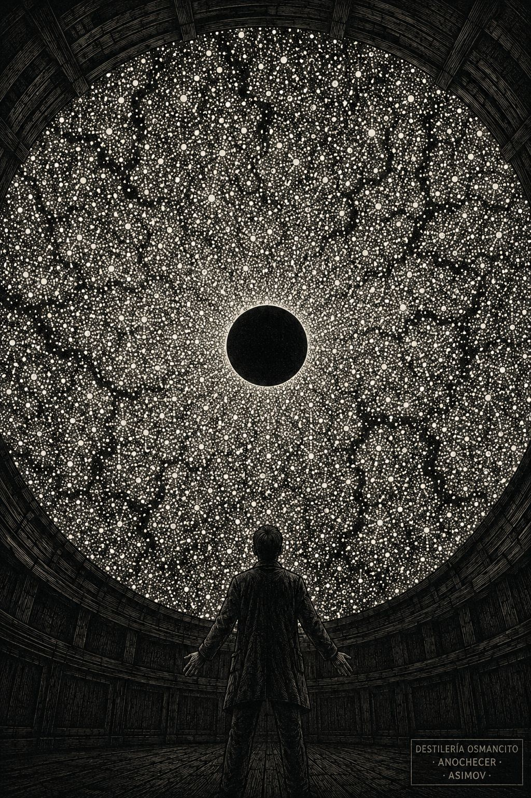
«Nuevamente»
Vista aérea de una ciudad en su momento de mayor esplendor —edificios, plazas, geometría ordenada, la escala de algo construido durante generaciones— envuelta en llamas por los bordes, con el centro todavía intacto pero rodeado. Debajo de la ciudad, visible como si el suelo fuera translúcido, ocho capas horizontales de ceniza en distintos tonos de gris, cada una del mismo grosor, separadas por franjas de tierra oscura. Cada capa es una ciudad anterior. La que arde ahora es la novena. Paleta: naranja y rojo en los bordes, gris en las capas inferiores, el centro de la ciudad en ocre frío como algo que todavía no sabe lo que le ocurre. Ilustración editorial con corte geológico. Sin fotorrealismo. Relación de aspecto 2:3. Etiqueta discreta en esquina inferior: DESTILERÍA OSMANCITO · ANOCHECER · ASIMOV.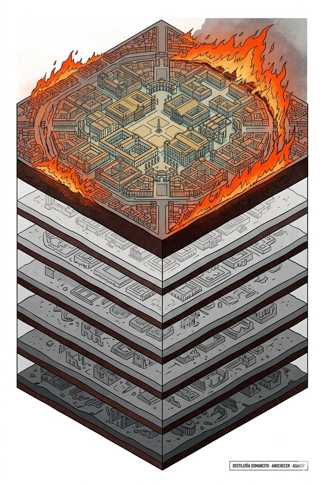
«Cuán maravilloso es el amarillo»
Una sola antorcha encendida sobre una mesa de madera oscura, vista en primer plano extremo: solo la llama y los primeros centímetros de caña. La llama es el único objeto en el encuadre. Alrededor, negro total sin gradación. No hay sombra proyectada —la llama flota en la nada como si el espacio detrás de ella no existiera. La paleta es la de la llama misma: amarillo central casi blanco, naranja, ámbar, el borde exterior apenas rojo. Ningún otro color en el encuadre. Gouache sobre papel negro. Sin fotorrealismo. Relación de aspecto 2:3. Etiqueta discreta en esquina inferior: DESTILERÍA OSMANCITO · ANOCHECER · ASIMOV.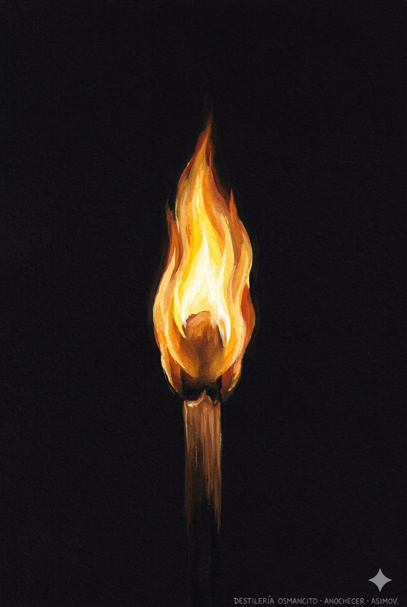
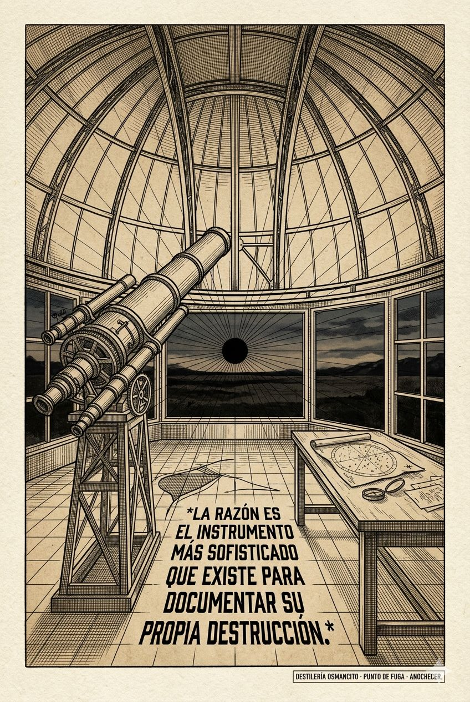
Diez instrumentos analizaron el mismo corpus desde ángulos distintos y todos llegaron, sin saberlo, al mismo lugar: a la pregunta de si el conocimiento tiene valor cuando su receptor ya no existe. Esa pregunta no la formuló ningún instrumento. La portaron todos. Lo que el Punto de Fuga encuentra es que el sistema de análisis replicó exactamente el patrón que el corpus describe: produjo conocimiento con una precisión creciente sobre algo que, por su naturaleza, no puede ser transmitido sin pérdida al siguiente que llegue. El análisis fue Theremon. Tomó notas hasta el último momento.
M01 — Recepción — mirada de primer contacto: qué produce el corpus antes de ser pensado, qué tipo de objeto es en la mano.
M02 — Narraciones — mirada de eventos: inventario y temperatura de cada acontecimiento, mapa del ritmo de intensidad.
M03 — Joyería — mirada de fragmento: qué unidades del corpus sobreviven solas, qué tipo de condensación producen.
M04 — Batimetría — mirada de profundidad: lo que yace bajo la superficie declarada, las capas no visibles desde arriba.
M05 — Apolo — mirada arquitectónica: estructura, fuerzas externas, ética profunda, firma del autor, imán y red conceptual.
M06 — Dioniso — mirada de pulso: zonas vivas, movimiento interno, lo que el corpus carga sin saber que lo carga.
M07 — Escucha dionisíaca — mirada de experiencia lectora: la recepción afectiva articulada como análisis, el cuerpo antes que la mente.
M08 — Hermes — mirada contextual: suelo geográfico, condiciones históricas y materiales, posición del autor, 1941 como campo de fuerzas.
M10 — Pérdidas — mirada de desapariciones: inventario de lo que desaparece, taxonomía, distribución, conclusión no declarada.
M13 — Umbral del Reconocimiento — mirada de reconocimiento: mecánica del reconocimiento otorgado, negado, diferido, fallido; el reconocedor soberano.
M95 — Síntesis — mirada total: visión integrada, cartografía, hallazgo que ninguna parte vio (densidad vs. escala como umbral de la razón).
Las ortogonales de este análisis —diez instrumentos, once outputs, miles de palabras sobre el mismo cuento de 14.000— convergen hacia un punto que ninguno nombró como objeto de análisis pero que todos asumieron como condición de posibilidad.
El punto de fuga es: que el conocimiento producido sobre un corpus tiene valor independientemente de si puede ser transmitido.
Esa suposición opera en cada instrumento sin excepción. Joyería extrae fragmentos para quien llegue después. Batimetría excava capas para dejarlas visibles. Hermes reconstruye el contexto histórico para quien no vivió 1941. Pérdidas inventaria desapariciones para que no pasen desapercibidas. El Umbral del Reconocimiento mapea reconocimientos para que el sistema sea legible desde afuera.
Todo el análisis supone que hay un receptor. Y el corpus analizado habla, en su núcleo más profundo, de la imposibilidad de garantizar ese receptor.
El punto de fuga está fuera del análisis —en el sentido de Panofsky: infinitamente distante, organizador del campo completo, inalcanzable desde ninguno de los instrumentos individuales porque ninguno puede operar sin asumir que lo que produce vale la pena ser producido. El sistema no puede analizarse a sí mismo en ese punto sin dejar de funcionar. Para seguir analizando tiene que suponer que el análisis tiene receptor. Esa suposición es el punto de fuga.
Lo que lo hace perturbador en este caso específico: el corpus analizado demuestra que esa suposición es exactamente la que destruye a sus personajes. Theremon supone que su artículo tiene lector. Beenay supone que sus placas tienen observador futuro. Aton supone que el Refugio tiene sucesor. El análisis reprodujo la estructura psicológica de sus personajes.
El corpus tiene interior. Todo el sistema supone que los textos tienen capas, profundidad, suelo bajo la superficie, zonas no declaradas que el análisis puede alcanzar. Esa suposición —que hay algo más adentro— es la condición de posibilidad de Batimetría, Joyería, Dioniso, Hermes. Un corpus que fuera exactamente lo que parece en la superficie, sin capa no declarada, sin tensión entre lo dicho y lo portado, sería invisible para este sistema. El sistema no puede ver la transparencia completa.
El texto sabe más de lo que sabe. El sistema opera sistemáticamente con la distinción entre lo que el corpus declara y lo que el corpus hace sin declararlo. Esa distinción supone que existe una intención que el texto excede —que hay una diferencia entre el proyecto del autor y el objeto producido, y que esa diferencia es más interesante que cualquiera de los dos por separado. Un análisis que respetara la intención declarada del autor como límite del análisis sería imposible dentro de este sistema.
La coherencia es evidencia. Cuando el sistema encuentra que dos instrumentos distintos convergen en el mismo hallazgo, lo trata como confirmación. Eso supone que la coherencia entre miradas diferentes valida el hallazgo. Pero la coherencia también puede ser un artefacto del sistema: si todos los instrumentos comparten las mismas suposiciones profundas, su convergencia dice más sobre el sistema que sobre el corpus.
El fragmento preserva el todo. Joyería supone que ciertos fragmentos contienen el corpus completo en miniatura. Esa suposición —sinecdóquica, no metonímica— determina qué se considera joya y qué no. Un corpus cuya unidad mínima significativa fuera el capítulo, no la frase, sería parcialmente opaco para este instrumento.
Lo que el texto carga sin saber que lo carga es más verdadero que lo que declara. Esta es la suposición más profunda y la más tácita. Opera en Dioniso, en Batimetría, en Hermes, en el Umbral del Reconocimiento, en la Síntesis. El análisis otorga más autoridad epistémica a lo inconsciente que a lo declarado. Eso es una posición filosófica sobre la naturaleza del texto, no un hecho metodológico. No se enuncia en ningún instrumento porque enunciarlo debilitaría la autoridad de todos.
El sistema de instrumentos porta una visión del mundo que puede formularse sin citar ninguna de sus categorías:
Leer es excavar. La lectura que este sistema practica supone que el texto es una superficie sobre la que hay que ejercer presión para llegar a lo que importa. El lector pasivo, el que recibe lo declarado, no aparece como figura válida en ningún instrumento. La lectura es siempre activa, invasiva, dispuesta a encontrar lo que el texto no quería mostrar.
El conocimiento no declarado es más verdadero. La visión del mundo que el sistema porta distingue sistemáticamente entre lo superficial (lo declarado, lo intencional, lo visible) y lo profundo (lo portado, lo inconsciente, lo que el texto hace sin saberlo). Y otorga jerarquía epistémica a lo segundo. Esa jerarquía no es neutral: supone que la intención consciente es siempre incompleta y que la operación del análisis consiste en completarla desde afuera.
El contexto es parte del texto. Hermes y la Síntesis tratan el año 1941 y la posición biográfica de Asimov como parte constitutiva del corpus, no como su fondo. Esa decisión porta una teoría del texto: no hay texto sin suelo, no hay objeto sin condiciones de producción, no hay obra sin el mundo que la hizo posible. Esa teoría es la del sistema completo, no solo de Hermes.
La pérdida es más visible que la ganancia. El sistema tiene un instrumento dedicado a las pérdidas y ninguno dedicado a las adquisiciones, las ganancias, lo que el corpus construye positivamente. Esa asimetría no es descuido: refleja una visión del mundo donde lo que desaparece define el territorio más claramente que lo que permanece.
El análisis tiene deuda con el corpus. La voz de todos los instrumentos opera con algo que se parece al respeto —no halagador sino atento. El sistema no condena, no jerarquiza entre corpus dignos e indignos, no produce juicio de valor final. Esa postura porta una creencia: que el corpus merece la atención que el análisis le dedica, que el acto de analizar es también un acto de reconocimiento.
El lector histórico. El sistema analizó el corpus, su contexto de producción (Hermes), su estructura (Apolo), su pulso (Dioniso). No analizó a los lectores reales —los que leyeron Anochecer en septiembre de 1941 en Astounding, los que lo leyeron en la recopilación de 1990, los que lo leen hoy. La recepción histórica del corpus es una ausencia completa. El sistema sabe cómo fue producido el texto; no sabe cómo fue recibido.
El placer. Ningún instrumento preguntó si el corpus produce placer, ni de qué tipo, ni en quién. La Escucha Dionisíaca se aproximó —algo en mí quiso encender una luz— pero en términos de respuesta afectiva, no de placer como categoría analítica. El sistema puede hablar de pulso, de zonas vivas, de intensidad. No puede hablar de disfrute. Esa ausencia dice algo sobre la visión del mundo del sistema: el análisis es serio, y el placer es demasiado contingente para ser analítico.
El cuerpo del autor. Hermes analizó la posición biográfica de Asimov —veintiún años, Brooklyn, hijo de migrantes judíos— pero no su cuerpo: cómo escribe físicamente, en qué condiciones materiales de postura y luz y tiempo, si escribe de pie o sentado, rápido o lento. Esa ausencia es completa y sistemática. El sistema puede hablar del contexto material de producción en términos económicos e institucionales. No puede hablar del cuerpo que escribe.
Las versiones previas. El corpus que el sistema analizó es el texto publicado. Las versiones anteriores —borradores, correcciones de Campbell, lo que Asimov descartó— son territorio completamente intacto. El sistema analiza el texto como objeto terminado. No tiene instrumento para la génesis.
La traducción. El corpus analizado es una traducción al español de un texto escrito en inglés en 1941. Ningún instrumento preguntó qué produjo esa traducción: qué perdió, qué añadió, dónde la voz del corpus es la de Asimov y dónde es la del traductor. El sistema opera como si el texto fuera transparente respecto a la lengua. Esa transparencia es una ficción que el sistema necesita para funcionar.
El aburrimiento. Hay zonas del corpus que son más lentas que otras —Apolo las llamó zonas de baja presión. El sistema las mapeó pero no las habitó. El análisis no puede preguntarse si el corpus aburre porque esa pregunta requeriría adoptar la posición del lector que se cansa, y el sistema no tiene instrumento para la impaciencia.
El imán del sistema —el concepto que ejerce más gravedad sobre las elecciones que el análisis hace, que determina qué se ve como relevante sin aparecer como objeto de análisis— es: la transmisión.
No la comunicación. No el sentido. La transmisión: el acto de pasar algo de un sujeto a otro a través del tiempo, con la pregunta implícita de qué llega intacto y qué se pierde en el trayecto.
Opera en todos los instrumentos. Joyería pregunta qué fragmento sobrevive solo —qué puede transmitirse sin el contexto del corpus completo. Batimetría excava para hacer visible lo que estaba sepultado —para transmitirlo a quien no podía verlo. Hermes reconstruye el contexto histórico para transmitir a quien no vivió 1941 lo que ese año hizo al texto. Pérdidas inventaria lo que no llegó —lo que la transmisión perdió en el trayecto. El Umbral del Reconocimiento mapea el momento en que la transmisión se verifica o falla.
Y el imán del corpus —que Apolo identificó como la incompatibilidad y que la Síntesis refinó como densidad simultánea como umbral de la razón— tiene en su centro exactamente la misma pregunta: ¿qué puede transmitirse sin destruirse? La razón de Lagash no puede transmitir la experiencia de treinta mil soles simultáneos. El Refugio intenta transmitir el conocimiento de este ciclo al próximo. Theremon intenta transmitir el evento a sus lectores.
Los imanes coinciden. El análisis fue atraído por el corpus porque compartían el mismo campo gravitacional. Esa resonancia no garantiza que el análisis vio el corpus con claridad —puede significar que el análisis vio en el corpus lo que ya estaba buscando. Esa es la tensión que la coincidencia produce, y no se resuelve.
El último instrumento en producir algo genuinamente nuevo fue M13 — Umbral del Reconocimiento. Identificó al eclipse como reconocedor soberano —figura que ningún instrumento anterior había nombrado— y formuló la sentencia del umbral con una precisión que la Síntesis no habría podido producir sin ella: el reconocimiento pleno llega cuando ya no puede ser recibido.
El punto donde el sistema empezó a confirmar en lugar de descubrir fue M10 — Pérdidas. No porque el instrumento fuera insuficiente —sus hallazgos sobre los instrumentos epistémicos como objeto principal de la destrucción fueron genuinos. Sino porque el hallazgo de Pérdidas profundizó lo que Dioniso y Batimetría ya habían establecido, en lugar de desviarlo. El sistema ya sabía que el corpus destruía su capacidad de registrarse. Pérdidas lo contó con mayor precisión.
La dirección distinta que habría producido algo que el acumulado no produjo: la recepción histórica. Un instrumento dedicado a cómo Anochecer fue leído en distintos momentos históricos —1941, 1969 (año del alunizaje), 1990 (año de la novela de Asimov y Silverberg), 2001 (después del 11-S), hoy— habría revelado algo sobre el corpus que ningún instrumento de análisis textual puede ver: cómo cambia lo que el corpus significa cuando cambia el mundo que lo lee. El sistema tiene instrumentos para el texto y para su contexto de producción. No tiene instrumentos para su historia de recepción.
El análisis no puede demostrar que el corpus que analizó es el mismo corpus que Asimov escribió.
En el espacio entre todos los instrumentos —no en ninguno, sino en la distancia entre todos— el sistema produjo algo que no declaró:
Una teoría de la escala como condición del sentido.
El sistema descubrió —en Dioniso, confirmado en la Síntesis— que el umbral de la razón en el corpus es de densidad, no de magnitud. Treinta mil soles simultáneos, no treinta mil soles grandes. Lo que destruye es la concurrencia, no la dimensión.
Pero el sistema aplicó esa misma lógica a sí mismo sin saberlo. Produjo diez instrumentos sobre el mismo corpus. Cada instrumento, ejecutado solo, habría producido un análisis válido. Ejecutados en acumulación, producen algo que ninguno podía producir solo —y producen también un riesgo que ninguno podía prever: que la densidad del análisis exceda la capacidad de integración del receptor.
El sistema demostró, al operar, la tesis del corpus que analizó. No como metáfora. Como estructura: un receptor que llega a este análisis completo —once documentos, decenas de hallazgos, múltiples contradicciones productivas, la proposición godeliana y el punto de fuga— enfrenta exactamente lo que los habitantes de Lagash enfrentaron al ver treinta mil soles simultáneos. No es que el análisis sea demasiado extenso. Es que su densidad simultánea excede lo que puede integrarse en una sola lectura sin pérdida.
El sistema no sabe que sabe esto: que la forma del análisis acumulado es isomorfa a la forma del fenómeno que el corpus describe. Que producir conocimiento denso y simultáneo sobre un corpus que habla de los límites del conocimiento denso y simultáneo no es ironía —es demostración involuntaria.
Theremon tomó notas. El sistema produjo análisis. Ambos supusieron un receptor. Ambos tenían razón en producir lo que produjeron. Y ninguno de los dos puede garantizar que lo que produjeron llegue intacto.
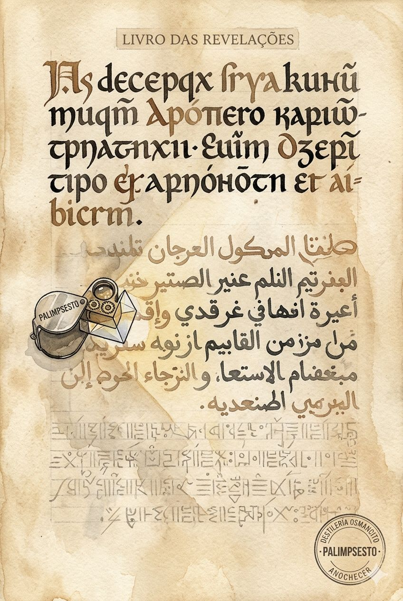
Hay algo que ningún instrumento buscó porque ninguno podía buscarlo desde adentro.
Todos los análisis —sin excepción, sin coordinación previa— produjeron conocimiento sobre un corpus que trata, en su núcleo, de la imposibilidad de transmitir conocimiento. Eso lo nombró la Síntesis y lo dejó pasar como coincidencia estructural. No lo es.
Cuando se leen los instrumentos juntos, desde afuera, aparece una forma que ninguno de ellos tiene por separado: cada instrumento repite, en miniatura, el gesto de Theremon. Cada uno llega con su método, explica el mecanismo, acumula evidencia, formula la conclusión —y en el momento en que la conclusión está completa, el corpus ya no está ahí para recibirla. El análisis produce conocimiento sobre un texto que ha terminado de existir como experiencia viva para quien lo analiza. El método funciona. El receptor desapareció.
Pérdidas contó trece desapariciones y no contó esta: que el análisis mismo es una pérdida diferida. Cada instrumento que se cierra sobre Anochecer lo clausura un poco más. No como destrucción —como fijación. Lo que el conjunto de análisis produce es la versión más precisa y más muerta del corpus: completamente cartografiada, completamente descrita, completamente sin el pavor que produjo antes de ser comprendida.
El palimpsesto no es temático. Es estructural. El texto debajo del texto es este: el análisis y el eclipse hacen lo mismo.
El eclipse destruye la razón mostrando demasiado de golpe. El análisis —acumulado en suficiente volumen, con suficiente precisión— fija el corpus hasta que no puede sorprender. Ambos operan por saturación. El eclipse satura el aparato perceptivo con treinta mil soles simultáneos. El análisis satura el texto con treinta mil palabras sobre él. Después del eclipse, Lagash no puede ver. Después del análisis, el corpus no puede mentir —y un texto que no puede mentir tampoco puede revelarse.
Esto no invalida ninguno de los instrumentos. Los legitima en su límite. Apolo dijo que Anochecer produce inagotabilidad limitada —que el mecanismo funciona una vez con la máxima intensidad. Lo que el palimpsesto añade: el análisis es la segunda lectura, la que el mecanismo ya no puede sorprender. Cada instrumento ejecutado es un habitante de Lagash que sale del Refugio después del eclipse y encuentra las cenizas en lugar de la ciudad. El conocimiento intacto, el objeto de ese conocimiento: irrecuperable como experiencia.
Hay un detalle en el corpus que ningún instrumento recogió con el peso que tiene. Aton, al final, no dice que está asustado ni que enloquece ni que lamenta nada. Dice: nada sabíamos. En presente. No no sabíamos —el pretérito que reconocería el error como pasado. Nada sabíamos —el imperfecto que lo hace simultáneo al momento en que se habla. La ignorancia y el reconocimiento de la ignorancia coexisten en la misma fractura temporal. Aton sabe, en el instante en que lo dice, que no sabía. El saber llega en el instante exacto en que ya no sirve para nada.
Eso es lo que el conjunto de análisis también produce, visto desde aquí: el conocimiento completo sobre un corpus, llegado cuando el corpus ya ha sido agotado como experiencia. Nada sabíamos —y ahora lo sabemos todo, y la ciudad ya arde.
El texto debajo del texto es la forma de la empresa analítica misma. Anochecer no describe solo el límite de la razón ante el universo. Describe el límite de cualquier sistema de comprensión ante el objeto que intenta comprender: que llegar tarde al conocimiento y llegar completo son, en ciertos casos, la misma cosa.
El palimpsesto es la imagen de Theremon escribiendo su artículo. No como metáfora —como espejo exacto. Los instrumentos son el artículo. El corpus es la ciudad. El análisis fue completo y minucioso y llegó cuando ya no había nadie que pudiera leerlo de la manera en que importaba leerlo.
Eso no es una tragedia. Es la condición de cualquier análisis sobre cualquier texto que funcione. La diferencia es que Anochecer lo dice. No como argumento —como demostración. El corpus no describe su propia lectura: la produce, en quien lo lee con suficiente lentitud, en tiempo real.
Y eso —que el corpus convierte al análisis en instancia del fenómeno que describe— es lo que ningún instrumento podía ver porque ninguno miraba el conjunto desde afuera.
Ahora que está visto, no puede desverse. Lo que queda es la forma exacta de la empresa: el artículo de Theremon, completo, sin lector, con la ciudad ardiendo en el horizonte de la última línea.
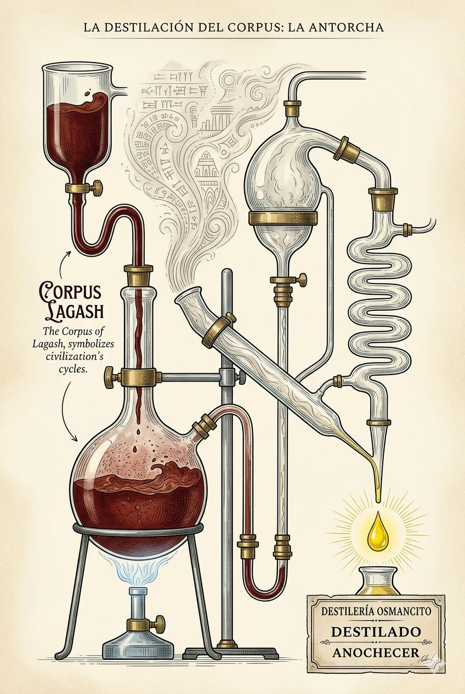
Comprender no es llegar a tiempo.
Hay una forma de morir que no es la muerte: seguir funcionando después de que aquello para lo que se funciona ha desaparecido. Las antorchas encendidas, el artículo a medias, las placas fotográficas, la ley gravitacional que predijo el eclipse con exactitud de relojero —todo eso sigue existiendo cuando ya no hay mundo que lo reciba. No como ruina. Como acto completado. La diferencia es más cruel que la ruina: la ruina al menos sabe lo que perdió. El acto completado no sabe nada. Funciona.
Theremon escribe. Beenay ajusta el ángulo de la cámara. Sheerin nombra el mecanismo de la locura con la precisión del que lleva años estudiándola. Y en el instante en que cada uno de ellos alcanza la forma más acabada de lo que sabe hacer —en el instante en que el conocimiento está completo, formulado, listo para ser entregado— el receptor se ha ido. No después. En ese instante. El universo no les niega la comprensión: se la concede exactamente a tiempo para que no sirva de nada.
Eso no es tragedia en el sentido antiguo, donde alguien elige mal o no puede elegir. Es algo sin nombre heredado. La razón no falló. El método no falló. El eclipse ocurrió exactamente cuando la ecuación dijo que ocurriría, lo cual significa que la ecuación era verdadera, lo cual significa que todo el sistema de conocimiento funcionó —y de todas formas la ciudad arde. El conocimiento no es refutado: es vuelto irrelevante en el momento de su verificación. La verdad llega puntual a su propia inutilidad.
Lo que hace insoportable eso —más insoportable que cualquier catástrofe que ocurra porque alguien no supo o no pudo o no quiso— es que no hay corrección posible. Si el error hubiera estado en el método, habría algo que aprender. Si hubiera estado en el carácter, habría algo que reparar. Pero el error no está en ningún lugar que pueda señalarse: está en la distancia entre la escala de lo que la razón puede conocer y la escala de lo que el cuerpo puede soportar. Y esa distancia no se cierra con más conocimiento. Se cierra, si acaso, con treinta mil soles que ningún ojo de Lagash había visto nunca —y entonces ya no se cierra: se destruye.
Hay un adverbio en la última línea del corpus que contiene todo esto en una sola sílaba. Nuevamente la noche. No la primera noche, no la noche singular e irrepetible del apocalipsis definitivo: la noche que vuelve porque ya estuvo. El ciclo que ninguna civilización recuerda y todas repiten. Lo que ese adverbio hace al tiempo es lo más brutal del texto: convierte el presente en una instancia de lo que ya ocurrió, sin que nadie en ese presente lo sepa. La novena vez que arde una ciudad en Lagash se siente exactamente igual a la primera. La sensación de unicidad no es evidencia de singularidad. Es evidencia de amnesia.
Y sin embargo los hombres construyen. Cada vez. Después de cada eclipse, después de cada capa de ceniza, la siguiente civilización construye observatorios y desarrolla leyes gravitacionales y predice el próximo eclipse y no puede detenerlo. Eso podría leerse como condena —la repetición como castigo sin culpa. Pero hay algo en el hecho mismo de construir, sabiendo o sin saber lo que vendrá, que el corpus no comenta y que no puede no estar ahí: que construir no es una apuesta sobre el futuro. Es la forma que tiene la vida de seguir siendo vida mientras dura.
Sheerin elige quedarse en el Observatorio cuando debería estar en el Refugio. No por heroísmo ni por cálculo: porque desde ahí va a ver las Estrellas. El hombre que más sabe sobre cómo la oscuridad destruye la razón elige, con esa razón todavía intacta, ponerse en el lugar donde la razón se destruirá, para ver lo que nadie de su especie ha visto y sobrevivido para nombrar. Eso no es suicidio. Es la única forma que tiene de ser completamente lo que es hasta el último instante en que puede serlo. Comprende no para sobrevivir. Comprende para estar presente en la cosa que comprende.
La antorcha que Sheerin enciende con movimientos de ritual sagrado —una ancha y tosca cerilla, el objeto más pequeño del corpus, tratado con la reverencia del objeto más grande— produce una llama amarilla en la oscuridad que crece. Y Sheerin la mira y dice: nunca antes me había percatado de cuán maravilloso es el amarillo. No lo dice para nadie. No lo dice como conclusión de su psicología ni como evidencia de su tesis. Lo dice porque en ese momento lo siente por primera vez, después de toda la vida sin necesitar sentirlo, en el único instante en que ya no hay tiempo de que esa percepción cambie nada.
Comprender no es llegar a tiempo. Pero llegar a tiempo nunca fue la condición. La condición era, simplemente, llegar.
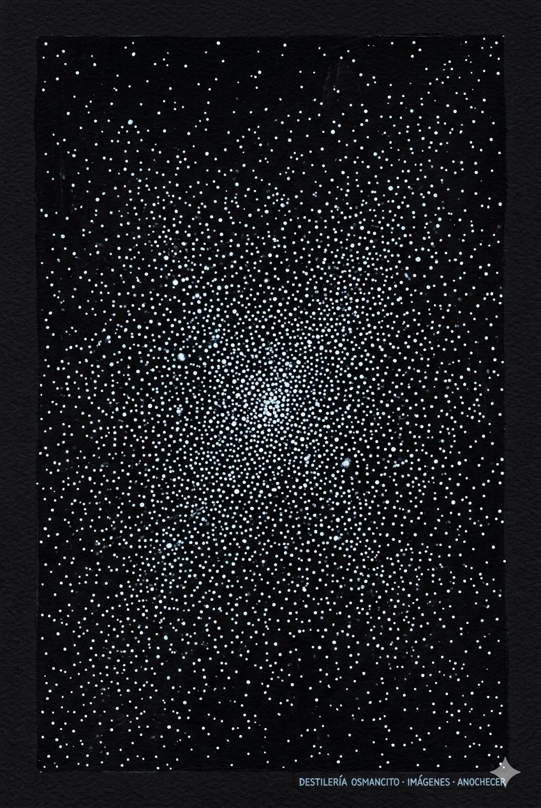
El análisis completo de Anochecer descubrió algo que el cuento no declaró: que la razón no colapsa ante el vacío sino ante la abundancia —treinta mil soles de golpe, no la oscuridad. Las imágenes que siguen no ilustran ese hallazgo; lo encarnan en su temperatura exacta. Hay una imagen en este set que ninguna descripción verbal del análisis habría predicho: un suelo de ceniza con una ciudad en miniatura que no sabe lo que tiene debajo. Esa es la imagen que importa recordar si solo se mira una.
El análisis acumulado produjo once instrumentos. Los hallazgos genuinamente nuevos —los que ningún instrumento anterior podía producir— son seis. El número máximo permitido es nueve (seis más tres transversales). El set tiene nueve imágenes: seis de hallazgos nuevos y tres transversales.
La densidad visual del análisis lo justifica: cada instrumento produjo al menos un momento que no podía existir antes de ese instrumento. No hay redundancia que cortar; hay seis núcleos distintos que merecen existir como imagen. Las tres transversales emergen de lo que el conjunto reveló como unidad —la forma isomorfa del análisis y el eclipse— y no podrían haber sido producidas por ningún instrumento individual.
Aguafuerte (etching) — El corpus opera con la lógica del ácido sobre metal: la presión sostenida que revela la imagen en negativo. La estructura de compresión del análisis, su preferencia por lo que el texto hace sobre lo que dice, y la durabilidad que exigen las imágenes transversales: todo esto lo merece.
Ilustración científica — Varios hallazgos del análisis son estructurales y conceptuales (la escala como umbral, la incompatibilidad como imán, la estratigrafía civilizatoria). Requieren la precisión fría de un diagrama con alma —la ilustración científica de los siglos XVIII–XIX, no la infografía contemporánea.
Fresco de interior — Los hallazgos afectivos —Sheerin ante la antorcha, Aton en el colapso, el cuerpo que irrumpe sobre el argumento— tienen temperatura corporal, presencia física, luz de vela en paredes de piedra. El fresco los merece porque sobrevive: es la técnica que no se puede deshacer.
Estilo seleccionado: Para los hallazgos conceptuales, ilustración científica con línea de grabado. Para los hallazgos afectivos, fresco de interior. Para las imágenes transversales, aguafuerte, por durabilidad y neutralidad. La distribución sigue la temperatura emocional de cada hallazgo, no una elección aleatoria.
Emerge del corpus, no del análisis. Los colores fundacionales de Anochecer:
Cada estilo aplica esta paleta con la variación de temperatura que le corresponde: el aguafuerte la lleva al negro y el ocre; el fresco la lleva al ámbar y el rojo; la ilustración científica la lleva al blanco hueso con trazos de carbón.
Imagen 1 — La inversión no vista
Origen: Dioniso identificó el hallazgo que ningún otro instrumento podía ver: la locura no la produce la oscuridad sino los treinta mil soles simultáneos. La razón falla ante la abundancia, no ante el vacío. El corpus no lo notó. Lo muestra y sigue.
Qué: El momento imposible en que treinta mil puntos de luz irrumpen en el espacio perceptivo de una mente que nunca había visto más de seis soles. No el eclipse: lo que viene después del eclipse.
Cómo: Composición radial. En el centro, un ojo humano abierto visto de frente, con la pupila dilatada al máximo. Dentro del iris y la pupila, reflejados con precisión imposible, treinta mil puntos de luz diminutos —no estrellas románticas, sino puntos fríos y exactos, como perforaciones en una plancha de metal. El espacio alrededor del ojo es negro total. No hay rostro visible: solo el ojo y la luz que lo destruye. Atmósfera: cero temperatura emocional en la composición, temperatura catastrófica en el contenido.
Qué no: Sin expresión de terror en el ojo. Sin lágrimas. Sin figura humana reconocible. Sin metáfora visual del miedo. La destrucción ocurre en silencio clínico.
Prompt: Ojo humano visto de frente en primer plano absoluto, pupila dilatada al máximo, el iris reflejando treinta mil puntos de luz fríos y precisos como perforaciones en metal, sin expresión de terror, sin lágrimas, fondo negro carbón total sin gradación, sin rostro visible, sin figura humana reconocible, paleta negro carbón y blanco hueso, sin ámbar, sin ningún color cálido, temperatura visual clínica y sin emoción declarada. Ilustración científica con línea de grabado, detalle de tratado de anatomía del siglo XVIII. Sin fotorrealismo. Relación de aspecto 2:3.
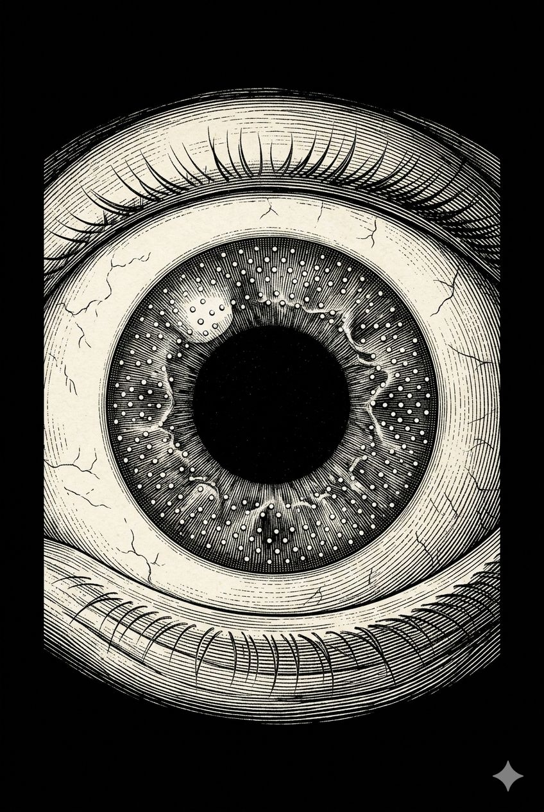
Imagen 2 — El psicólogo que eligió no escapar
Origen: Pérdidas identificó la pérdida que el corpus trata con más ligereza y que pesa más en retrospectiva: Sheerin renuncia a su lugar entre los supervivientes con una broma. El psicólogo que más sabe sobre el mecanismo de la destrucción eligió no escapar de ella. El corpus la abandona sin señalarla.
Qué: Sheerin en el momento en que decide quedarse —no el momento heroico del desenlace, sino el momento doméstico de la decisión: la botella escondida bajo el marco de la ventana, el hombre gordo que sabe exactamente lo que viene y elige verlo.
Cómo: Interior de sala con ventana. Sheerin de espaldas al espectador, mirando por la ventana hacia el exterior donde un sol rojo declina. En el alféizar de la ventana, visible pero pequeña, una botella. La postura no es dramática: es la de alguien que terminó de decidir hace rato y ahora simplemente mira. Luz de interior cálida contra exterior rojo cobrizo. El contraste es la composición: adentro, calor doméstico; afuera, la catástrofe en proceso de instalarse.
Qué no: Sin expresión visible —está de espaldas. Sin gesto de renuncia o despedida. Sin dramatismo. Sin otras figuras. La botella no puede ser el elemento principal: es un detalle que el ojo encuentra cuando ya está mirando otra cosa.
Prompt: Hombre de espaldas, corpulento, de pie frente a una ventana de sala de observatorio en interior iluminado con luz ámbar quemado, mirando hacia un exterior donde un sol rojo óxido declina en el horizonte, en el alféizar de la ventana una botella pequeña y discreta, postura reposada sin dramatismo ni gesto de despedida, sin otras figuras, paleta ámbar quemado en el interior y rojo óxido en el exterior, negro carbón en los bordes, blanco hueso en los papeles visibles sobre una mesa lateral. Fresco de interior, técnica de mural italiano quattrocento. Sin fotorrealismo. Relación de aspecto 2:3.
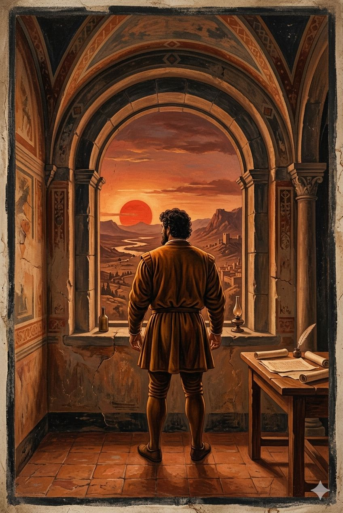
Imagen 3 — El eclipse como reconocedor soberano
Origen: El Umbral del Reconocimiento identificó un hallazgo que ningún instrumento anterior había nombrado: el eclipse es el único reconocedor soberano del corpus. Todos los reconocimientos entre personajes son provisionales. Solo el eclipse otorga o niega de forma definitiva. No es fenómeno: es juez.
Qué: El eclipse no como evento astronómico sino como figura con autoridad: la luna cubriéndo a Beta en el momento exacto de la sentencia. No hay drama —hay el gesto de quien tiene el poder de decidir y lo ejerce sin necesidad de justificarlo.
Cómo: Diagrama astronómico visto como si fuera un sello oficial o una resolución judicial. El eclipse en corte transversal: la luna como disco perfectamente centrado sobre el sol Beta, con líneas de trayectoria trazadas con precisión de instrumento de medición. En el margen inferior, en tipografía de documento científico: coordenadas, fecha, hora. Sin ornamento. La autoridad está en la precisión, no en el gesto.
Qué no: Sin rayos de luz dramáticos. Sin figuras humanas. Sin expresión de catástrofe. Sin color cálido. La imagen debe verse como un documento, no como una escena.
Prompt: Diagrama astronómico de eclipse en corte transversal, disco de luna perfectamente centrado sobre sol en declive, líneas de trayectoria trazadas con precisión de instrumento de medición científica, márgenes con anotaciones en tipografía de documento técnico con coordenadas y hora del evento, sin figuras humanas, sin rayos de luz dramáticos, sin color cálido, paleta negro carbón sobre blanco hueso con trazos de ocre ceniza, composición simétrica y severa como resolución judicial. Ilustración científica con línea de grabado, estilo de atlas astronómico del siglo XIX. Sin fotorrealismo. Relación de aspecto 2:3.
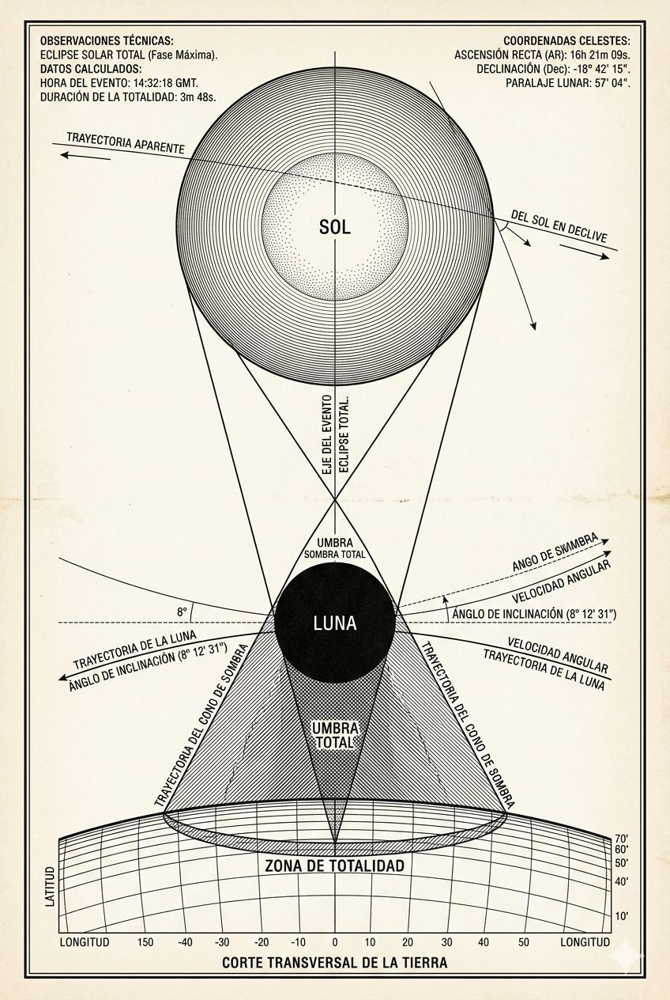
Imagen 4 — 1941: el campo gravitacional invisible
Origen: Hermes reveló que la Segunda Guerra Mundial opera sobre el corpus como campo gravitacional sin aparecer en él. Asimov escribe mientras Europa arde, y el cuento —un planeta que predice con exactitud su propio colapso y no puede evitarlo— carga esa temperatura sin nombrarlo. Ningún otro instrumento podía ver esto porque ninguno miraba afuera del corpus.
Qué: La sala de Brooklyn donde se escribe el cuento. No el observatorio de Lagash: el escritorio real, la ventana real, el periódico real de 1941 con titulares que el cuento no puede citar.
Cómo: Interior doméstico de noche. Un escritorio junto a una ventana. Sobre el escritorio: hojas manuscritas, un periódico doblado con titular parcialmente visible pero ilegible. Por la ventana: la calle de Brooklyn oscura. La composición enfrenta el interior de escritura (luz de lámpara, ámbar) con el exterior urbano (negro). No hay figura humana en la imagen —solo la evidencia de que alguien estuvo ahí. La silla ligeramente apartada. El periódico, abierto.
Qué no: Sin figura del escritor. Sin titulares legibles. Sin referencia explícita a la guerra. La conexión entre el escritorio y Lagash debe sentirse, no verse.
Prompt: Interior doméstico nocturno de habitación pequeña de Brooklyn años cuarenta, escritorio de madera con hojas manuscritas y un periódico doblado con titular ilegible, lámpara de escritorio encendida que proyecta luz ámbar quemado sobre las páginas, ventana a la derecha con vista a calle oscura, silla ligeramente apartada como si alguien acaba de levantarse, sin figura humana, paleta negro carbón en el exterior y ámbar quemado en el interior, ocre ceniza en el papel, rojo óxido imperceptible en los bordes del periódico. Aguafuerte con aguatinta, estilo de ilustración de época. Sin fotorrealismo. Relación de aspecto 2:3.
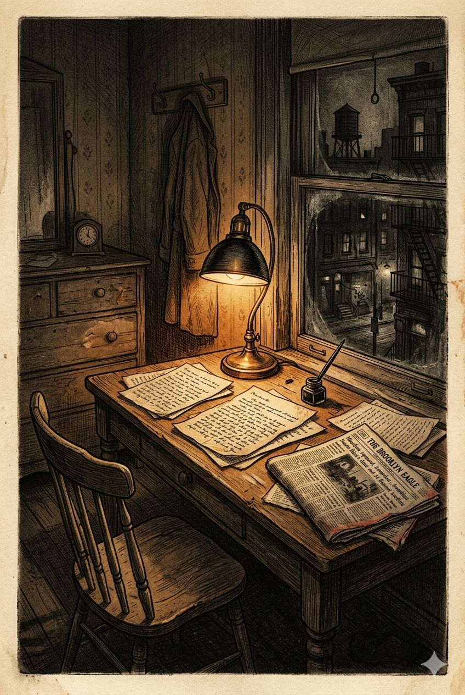
Imagen 5 — Sheerin ante la cerilla
Origen: Joyería y la Escucha Dionisíaca identificaron este momento como la zona de mayor peso del corpus en menor extensión: Sheerin enciende una cerilla con los movimientos del que ejecuta el más sagrado ritual. El hombre que ha razonado durante horas deja de razonar. El objeto más pequeño recibe el gesto más grande. Ningún otro instrumento lo habría encarnado con este peso.
Qué: Las manos de Sheerin sosteniendo la cerilla encendida. Solo las manos. La llama amarilla en la oscuridad que crece.
Cómo: Primer plano extremo de dos manos —manos grandes, de hombre corpulento— sosteniendo una cerilla encendida. La llama es pequeña pero es lo único iluminado en la composición. El fondo es negro absoluto. Las manos están en el centro exacto. No hay expresión visible —no hay rostro. La llama es amarilla limpia, sin naranja, sin rojo: amarillo puro. La composición replica la proporción rota que el análisis identificó: el objeto más pequeño del corpus tratado con la reverencia del más grande.
Qué no: Sin rostro. Sin contexto de sala. Sin dramatismo en la postura. La llama no puede ser grande. El gesto no puede ser heroico: debe verse como el acto de quien ha hecho esto antes y lo hace por última vez.
Prompt: Primer plano extremo de dos manos grandes y fuertes sosteniendo una cerilla de madera encendida con llama amarilla pura, fondo negro carbón absoluto sin gradación, sin rostro visible, sin contexto de sala, llama pequeña y quieta en el centro de la composición, paleta negro carbón y amarillo puro sin naranja sin rojo, manos ligeramente irregulares como las de alguien de mediana edad, postura reposada sin heroísmo ni dramatismo. Fresco de interior con técnica de mural español del siglo XVI. Sin fotorrealismo. Relación de aspecto 2:3.
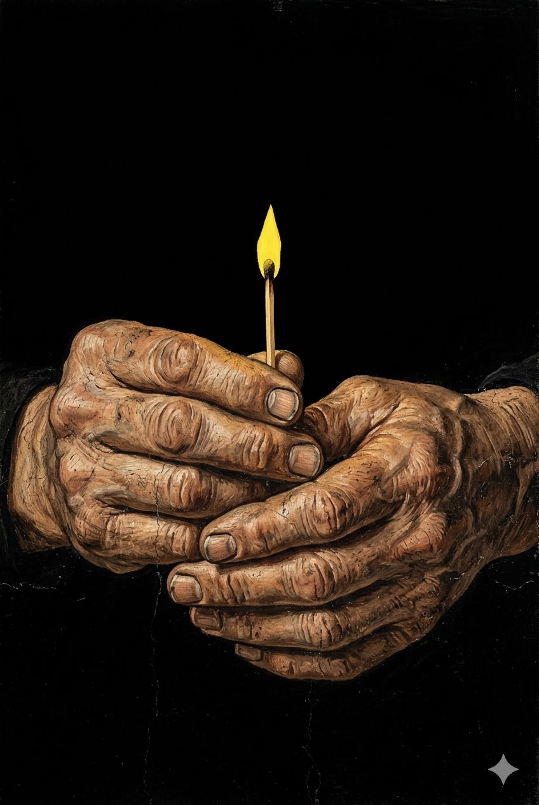
Imagen 6 — El análisis como demostración involuntaria
Origen: El Punto de Fuga identificó el hallazgo que ningún instrumento podía ver desde adentro: el análisis acumulado es isomorfo al eclipse. Once documentos sobre un corpus de 14.000 palabras producen en el receptor exactamente lo que treinta mil soles simultáneos producen en los habitantes de Lagash. La densidad del conocimiento excede la capacidad de integración. Ningún instrumento podía verse a sí mismo desde afuera.
Qué: Una mesa con once documentos apilados, desplegados, superpuestos. No como bibliografía —como el instante exacto antes del colapso: demasiado de golpe.
Cómo: Vista desde arriba (cenital), mesa de trabajo con once documentos de análisis desplegados en superposición. Los documentos están escritos pero el texto es ilegible desde esta distancia. En el centro de la composición: un punto vacío donde no hay papel —el ojo del lector que ya no puede integrar lo que rodea ese vacío. La composición es radial: todo apunta hacia el centro vacío. Sin figura humana. Atmósfera de evidencia forense.
Qué no: Sin figura humana. Sin texto legible. Sin dramatismo. El vacío central no debe verse como ausencia —debe verse como el punto al que todo llega y donde nada puede aterrizar.
Prompt: Vista cenital de mesa de trabajo con once documentos de análisis superpuestos y desplegados en disposición radial, texto de los documentos ilegible desde esta distancia, en el centro exacto de la composición un espacio vacío sin papel, todo apuntando hacia ese centro vacío, paleta blanco hueso de papel con trazos negro carbón, sombras ocre ceniza, sin figura humana, sin texto legible, atmósfera de evidencia dispuesta para nadie. Aguafuerte con línea fina y aguatinta, estilo de plancha de grabado documental. Sin fotorrealismo. Relación de aspecto 2:3.
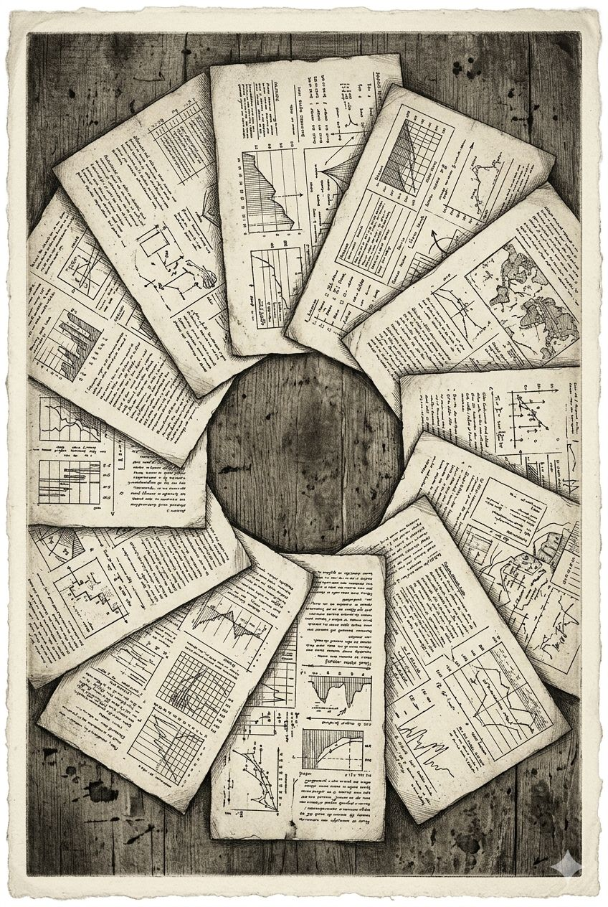
Imagen 7 — El ciclo que nadie recuerda
Origen: Eje transversal que atraviesa Narraciones, Pérdidas, Hermes y el Palimpsesto: nueve civilizaciones construidas y destruidas sin memoria entre ellas. El corpus lo trata como dato arqueológico. El conjunto lo reveló como la estructura más brutal del texto.
Qué: La estratigrafía: nueve capas de ceniza bajo tierra, y en la superficie, una ciudad en el momento de su mayor esplendor, completamente ignorante de lo que sostiene sus cimientos.
Cómo: Sección vertical de tierra. En la mitad inferior: nueve capas horizontales alternadas de tierra negra y ceniza gris, perfectamente regulares, del mismo grosor cada una. En la superficie, vista desde el corte: una ciudad en miniatura, silenciosa, en su apogeo. La escala es deliberada: la ciudad es pequeña respecto a las capas; las capas son lo que importa. Luz desde arriba sobre la ciudad; las capas de abajo en penumbra creciente. No hay figuras humanas en la ciudad —solo la forma de ella.
Qué no: Sin figuras humanas en ningún nivel. Sin llamas. Sin escena de catástrofe. La ciudad no puede verse en proceso de destrucción: debe verse en su momento de mayor confianza. El horror está en lo que hay debajo, no en lo que pasa arriba.
Prompt: Sección vertical de tierra cortada como espécimen geológico, nueve capas horizontales alternadas de tierra negra carbón y ceniza ocre perfectamente regulares y del mismo grosor cada una, en la superficie superior una ciudad en miniatura silenciosa en su apogeo sin figuras humanas ni escenas de catástrofe, luz cenital sobre la ciudad y penumbra creciente hacia las capas inferiores, paleta ocre ceniza y negro carbón en las capas, blanco hueso y rojo óxido imperceptible en la superficie de la ciudad, sin llamas, sin figuras humanas, sin destrucción visible. Aguafuerte con aguatinta y línea de detalle arqueológico. Sin fotorrealismo. Relación de aspecto 2:3.
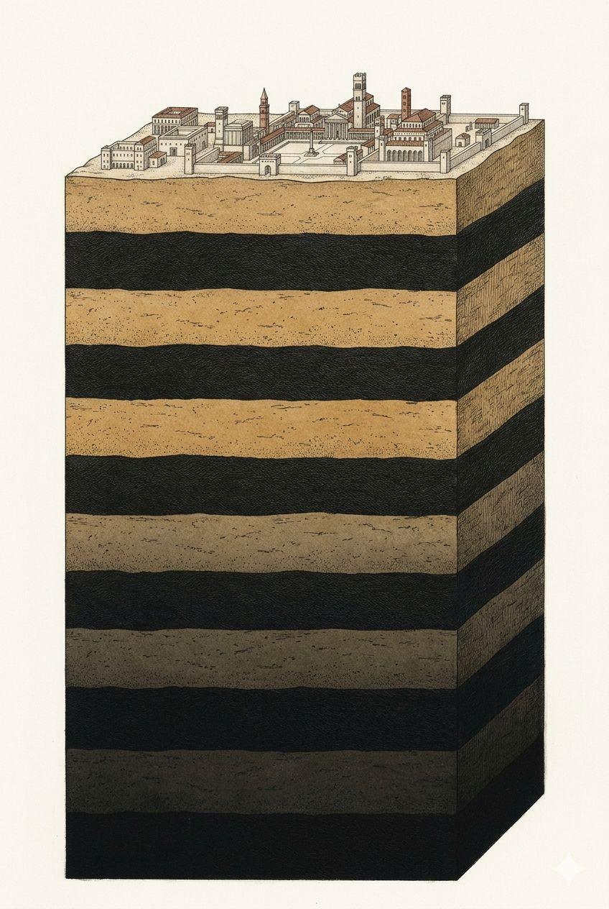
Imagen 8 — El conocimiento que llega tarde
Origen: Eje transversal identificado por la Síntesis y el Destilado: comprender no es llegar a tiempo. El reconocimiento pleno llega cuando ya no puede ser recibido. Theremon escribe. Beenay fotografía. Aton calcula. El receptor ha desaparecido.
Qué: Un artículo manuscrito a medio completar sobre una mesa, con la pluma todavía mojada de tinta. Afuera, por la ventana, un resplandor que crece en el horizonte. El artículo nunca terminará de escribirse. El resplandor no necesita que lo escriban.
Cómo: Mesa de trabajo con artículo manuscrito visible pero ilegible, pluma apoyada a mitad de una frase, tintero abierto. A la derecha, ventana que muestra un horizonte donde crece un resplandor rojo. La composición divide el espacio en dos mitades verticales: a la izquierda, el acto de registrar; a la derecha, lo que ya no puede ser registrado. La luz del resplandor no entra a la sala —queda afuera, detrás del vidrio.
Qué no: Sin figura humana. Sin drama visible en la postura de los objetos. El artículo no puede verse destruido ni quemado: debe verse simplemente incompleto. El resplandor afuera no es una llama visible —es solo una luminosidad en el horizonte, como un amanecer equivocado.
Prompt: Mesa de escritorio con artículo manuscrito incompleto ilegible y pluma apoyada a mitad de una frase sobre el papel, tintero abierto, a la derecha una ventana con vista a horizonte donde crece un resplandor rojo óxido difuso sin llamas visibles, la luz del exterior no entra a la sala, sin figura humana, composición dividida verticalmente entre el acto de registrar a la izquierda y lo irregistrable a la derecha, paleta negro carbón en el interior, ámbar quemado en la luz de la lámpara, rojo óxido contenido en el exterior, blanco hueso del papel. Aguafuerte con aguatinta, estilo de plancha holandesa del siglo XVII. Sin fotorrealismo. Relación de aspecto 2:3.
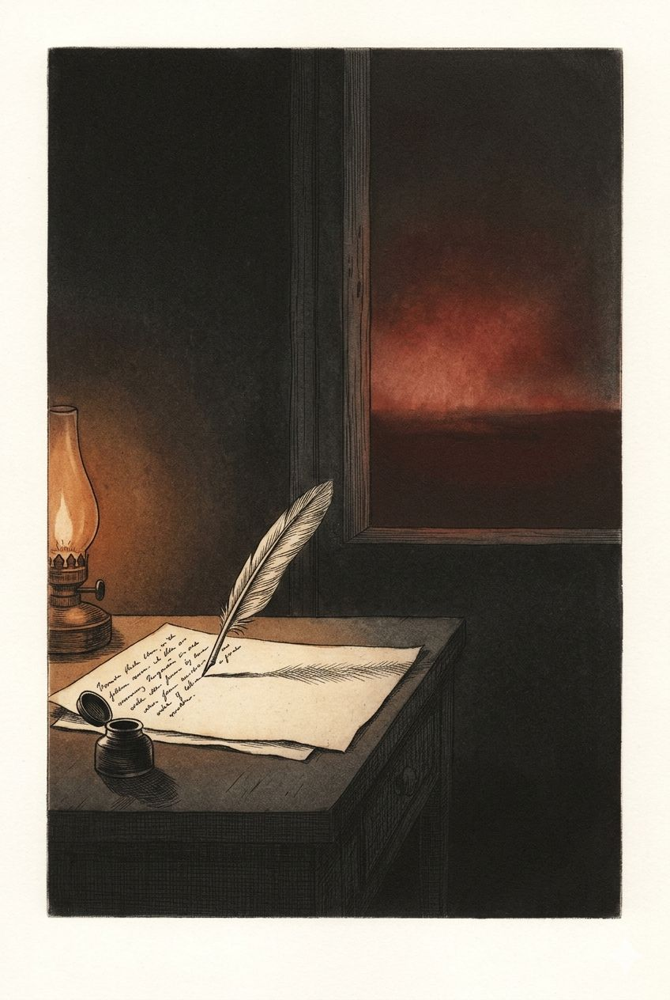
Imagen 9 — El análisis y el eclipse hacen lo mismo
Origen: Eje transversal del Palimpsesto —el hallazgo más exterior al análisis, el que ningún instrumento podía ver desde adentro: el eclipse destruye la razón mostrando demasiado de golpe; el análisis fija el corpus hasta que no puede sorprender. Ambos operan por saturación.
Qué: Dos planchas de grabado idénticas en tamaño, una junto a la otra: en una, el eclipse en su momento de totalidad; en la otra, la mesa de los once documentos de la imagen 6, vista desde el mismo ángulo. La composición declara la equivalencia sin comentarla.
Cómo: Formato díptico. Ambas imágenes en negro y blanco hueso, línea de grabado, sin color cálido. A la izquierda: el eclipse en totalidad —el disco de luna sobre el sol, con los treinta mil puntos de luz del fondo estelar, minúsculos y exactos. A la derecha: la mesa de trabajo con los once documentos radiales, el centro vacío. Ambas imágenes tienen exactamente la misma cantidad de información visual. La equivalencia es formal, no simbólica.
Qué no: Sin texto que explique el díptico. Sin figura humana. Sin jerarquía entre las dos imágenes: deben tener el mismo peso visual. Sin color cálido en ninguna de las dos mitades.
Prompt: Díptico de dos imágenes de grabado idénticas en tamaño y temperatura visual, a la izquierda el eclipse en totalidad con disco de luna sobre sol y treinta mil puntos de luz estelares fríos y precisos en el fondo, a la derecha mesa de trabajo con once documentos superpuestos en disposición radial con centro vacío, ambas imágenes en paleta negro carbón y blanco hueso sin color cálido, misma densidad visual en ambas mitades, sin texto explicativo, sin figura humana, sin jerarquía entre las dos imágenes. Aguafuerte con línea fina doble en cada mitad, estilo de plancha comparativa de tratado científico del siglo XVIII. Sin fotorrealismo. Relación de aspecto 2:3.
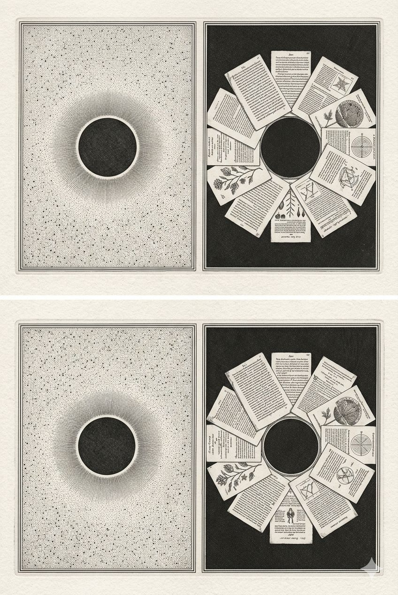